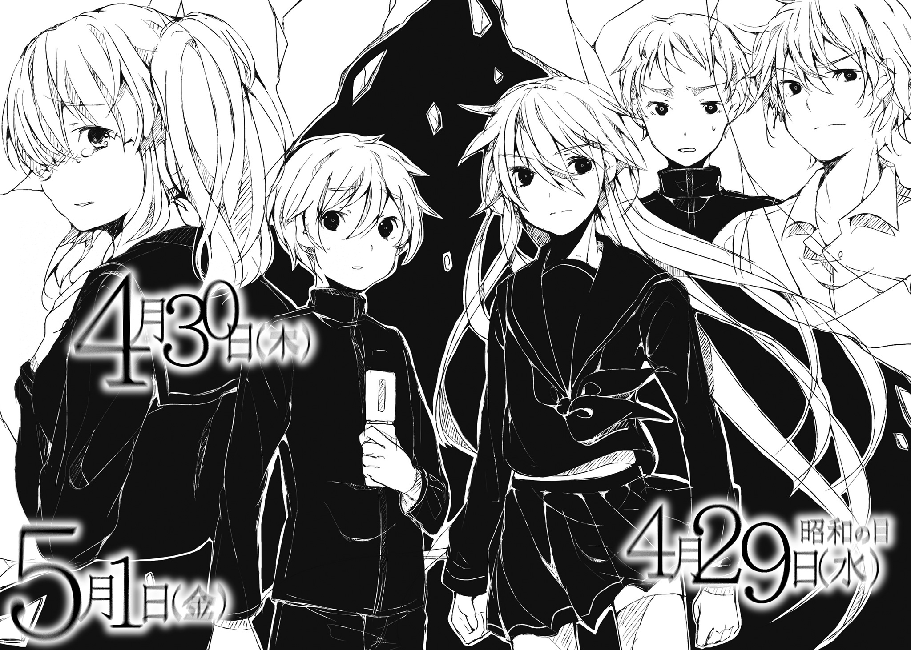
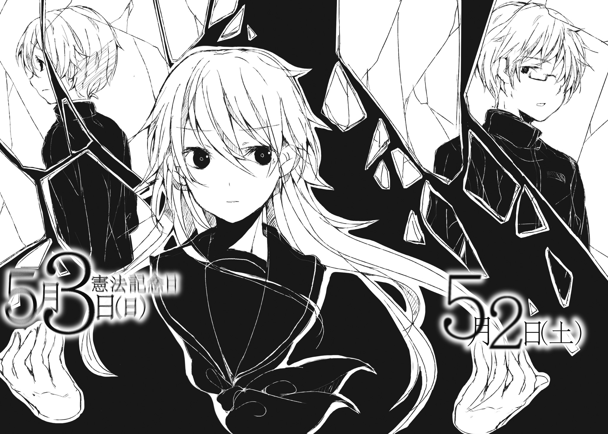
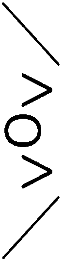

| 空ろの箱と零のマリア2 | |
| 御影瑛路 | |
本書（電子版）に掲載されているコンテンツ（ソフトウェア／プログラム／データ／情報を含む）の著作権およびその他の権利は、すべて株式会社ＫＡＤＯＫＡＷＡおよび正当な権利を有する第三者に帰属しています。
法律の定めがある場合または権利者の明示的な承諾がある場合を除き、これらのコンテンツを複製・転載、改変・編集、翻案・翻訳、放送・出版、公衆送信（送信可能化を含む）・再配信、販売・頒布、貸与等に使用することはできません。
夢の中でしか思い出せない光景の中にいた。
僕は向かい合っているのが誰であるかもう知っている。それでも〝箱〟を受け取っていない僕は、夢以外の方法で、意識的にこの光景を思い浮かべることができない。この会話を交わしたのがいつであるかも分からない。
「私が以前、君に言ったことを憶えているかい？ 個性のない君たちだけど、どうしてだか君は判別することはできる。そんな話を」
分からない。聞いた気もするし、聞いていない気もする。
「今回のことで、その理由が分かり始めたんだ。どうして私は、君を判別できるのか？ その理由。それは、君が何も拒絶せず、だけど何も受け入れないからかもしれない」
それは、言葉遊びにしか聞こえない。
「そもそも君が口癖のように言っている『日常』というものが、他の人間が認識している『日常』とは違っている。君は失っても構わないものも含めて『日常』と認識しているだろう？ それは他の人間の『日常』の認識とは実は違うんだ。他の人間は、そんな風にあるがままを受け入れることができない」
彼は微笑んでそんなことを言う。
「人間は誰しも歪んでいる。『日常』はその人間の価値観によって歪み、ねじ曲げられている。〝箱〟はその歪みを他者に侵食させるものとも言える。だからこそ、君は誰かの〝箱〟による『日常』の意図的な歪みに敏感で、それに嫌悪感を持つ。違うかい？」
本当に何を言っているか分からない。まったく勘弁して欲しい。
「今回、君は直接的に、自分の肉体に入り込まれた。それでも君は、〝所有者〟の価値観に揺らぐことなく、自分を保ち続けた。それは君が、他者の歪みを、歪みと気付いてしまうからだ。歪んでいると思えば、受け入れないのは当然。だけどね、その歪みを見つけ出せる範囲が、君は常人とかけ離れている。だから君は──何も受け入れない」
眉をひそめるしかない僕に、彼はまだしつこく続ける。
「君自身の視野は私から比べるととてつもなく狭い。それでもこの能力。ああ、そうか、もしかして君は──私と似ているのかもしれないね」
やめて欲しい。
僕は彼を気持ちが悪いと思っているのだから。
そんなことを言うと、彼は笑って、誰にでも成り代われるその姿を、見慣れた人に変えた。
他の誰でもない僕、星野一輝の姿をした〝Ｏ〟は、言う。
「それは同族嫌悪というものかい？」
違うよ。
だって似ても似つかないじゃないか。

４月29日（水）昭和の日
４月29日（水）０時２分
一日目の始まり。
４月29日（水）23時57分
一日目の終わり。
４月30日（木）
４月30日（木）、０時０分
二日目の始まり。
４月30日（木）、12時37分
昼休み。
思わずあくびをしてしまったのは、朝六時に掛かってきた謎電話のせいかもしれない。
『今日はお前に弁当を作る』
返事をする前に通話は切れた。
なんだそれ......？
世間ではゴールデンウィークで、僕らの連休も近い、四月の終わりの日。僕は廊下に立って、いつも通り音無さんを待つ。学食で一緒に食べるのは毎日のことだけど、手作り弁当なんて初めてだ。
「カズくん！ 聞いたよハルに聞いたよ！ 麻理亜嬢とのお弁当イベントがこれからあるんだって!?」
騒がしいのが来た。僕の前に回り込む心音の隣には、ニヤニヤと笑みを浮かべている陽明がいる。
「......陽明、めんどくさくなるから言うなって言ったよね？」
「聞いたけど従うかどうかは俺が決める！」
この人最悪だ。
「カズくん、そのおもしろイベントはどういうこと!? 詳しく聞かせて！」
「......いや、よく分からないんだけど、朝いきなり電話が──」
「モーニングコールとはラブラブだね！」
人の話は最後まで聞いてください。
「モーニングコール......」
その呟きに僕はとっさに背後に振り向く。
......うわ、まためんどくさい人が来ちゃったなあ。
「あ、莉子りん、こんちは」
「こんにちは......」
心音に奇妙な名前で呼ばれたショートカットで背の低い彼女は、一年生の浅海莉子だ。音無さんのクラスメイトで、入学式以降大量発生した音無麻理亜ファンの一人。いつも二人一緒に来るのだけど、今日は先行して教室に来たみたいだ。気のせいか普段よりも表情も声も暗い。
その浅海さんがぼうっとした目で、僕をじっと見ている。
「......えと？」
もしかして、睨まれてる？
「聞いた。麻理亜さんに、お弁当作ってもらう、とか」
「う、うん。らしいね」
答えると、浅海さんは何も言わずに、やはりそのまま僕をじっと見続ける。
「............ケータイのバッテリー爆発すればいいのに......某国で異様に安く売られてるやつぐらい怪しげなバッテリー使ってればいいのに......膨らめ、電池膨らめ......！」
小声での呪いの言葉に思わず鳥肌。
「で、でもどうしてカズくんなんだろうね？」
不穏な空気を吹き散らすように、心音がニコニコしながら口を挟む。
「おかげで最近アレだよね？ カズくんを見る男子生徒の目が恐いよね？ 何かあったら事故と見せかけて殺っちまいたいランキング一位だって聞いたよ」
「なにその物騒なランキング......。そんなの誰が言ってるんだよ......」
「うん、俺」
陽明が手を挙げる。
「もち俺も一票を投じているぜ！ 麻理亜ちゃんとイチャイチャするなんて憎らしいからな!!」
脱力する。
陽明は冗談で言っているんだろうけど、確かに最近男子生徒の視線は恐いのだ。たぶんその原因は音無さんだけじゃなくて──
「ん？ 何を見てるのカズくん？」
「............別に」
分かってるのかなあ。心音とこうして仲良く喋っているのもたぶん原因の一端だってこと。
心音は僕の態度に首をかしげている。最近の彼女の髪型は、あの永遠に続くかともしれないと思った三月から変わって、結っている部分を真ん中ではなくサイドにしている。サイドポニーというのだろうか？
「ね、ね、そういや気になるんだけど、どうやって音無さんを手なずけたの!?」
「手なずけた、って......言葉悪いなあ」
「音無さんってやっぱり言い寄られるのには慣れてるだろうから、普通のやり口じゃないだろうね。ってことは、運命を感じさせて、この人は特別な人だ、って思わせたと」
得意気に勝手なことを言い始める心音。
「そだなあ......例えば変質者に襲われている彼女を助けるとか──む、これは本気で可能性あるぞ。変質者......『ねえねえ、君のへそのごま、すごくいい臭いがしそうだねえ。む！ かさぶたができているじゃないか！ か、かさぶたでも構わないよ僕は!!』とか言い寄って襲ってきた変質者の魔の手から救ったと見たね！」
「そんな本当の意味での変質者に立ち向かえる自信ないよ......。ってかね、そもそも僕らは付き合ってないよ？」
それは間違いなく事実なのだけど、でも、心音はますます顔をにやけさせる。
「じゃああの入学式の出来事をどう説明するのかな？ ん？ んん～？」
「あ、あれは──」
入学式の『宣戦布告』。それがどんな風に誤解されたかぐらい分かってる。このにやけ面を引っ込めさせるために、なんとか説明しないと。
「あれは、単に、音無さんがちょっとおかしいだけで──」
「──私がおかしいだと？」
聞き覚えがある声。僕は恐る恐る振り向く。
音無麻理亜。
その顔を見て思わず硬直する。いや、僕を責めるような言葉に肝を冷やしたわけじゃない。心の準備をせずに、そのどうしようもなく整った顔立ちを見てしまったから、硬直してしまっただけだ。
どうしようもなくきれいで、超然的な彼女に僕はまだ慣れていない。どうしても固まってしまう。いつもしているように心の中で三秒数える。音無さんと話す準備をする。
僕は人の一生分くらい音無さんと一緒にいた。そのことは知っている。でもその実感をもう僕は失っている。
「何を固まっている？ 怒られるとでも思ったのか？ 別にその程度で怒るわけがないだろう」
「う、うん」
僕が戸惑っている間に、浅海さんはちょこちょこと無言で音無さんの後ろに回る。
「......ん？ なんだ浅海？」
浅海さんは答えずに、変わらず僕をじっと見続けている。代わりに陽明が口を開く。
「ちょっと様子がおかしいんだよね、今日。決定的な『お弁当』イベントのせいで、麻理亜ちゃんをホッシーに取られるって思ってんのかもな」
「............麻理亜ちゃんとか、すごい馴れ馴れしい。『様』を付けるべき......」
またうつむきがちに、半開きの口から言葉を漏らす浅海さん。
「まあいい。一輝、行くぞ」
「えと、学食に？」
音無さんは露骨に溜息を吐く。
「私がお前に弁当を作った、と言った時点でどうして理解できないのだ。学食では都合が悪いからに決まっているだろう？」
学食では都合が悪い？
僕らは毎日昼休みに会っている。それは、〝Ｏ〟や〝箱〟についての話をするためだ。
とはいえ、毎日新しい情報があるわけではないし、他の人の耳に触れてはならない話題は滅多にない。滅多に、というより、音無さんが入学してきてから一度もなかった。だから学食でも問題なかったのだけど。
でも今日は、学食では都合が悪い。
「そっか、だから弁当を。......でも購買部にパンもあるのに」
僕が呟くと、いきなり音無さんは僕に顔を近づけ、耳打ちする。
「......〝拒絶する教室〟の間に購買のパンは食べ飽きたのだ。分かるだろう......？」
ああ、いやその......〝拒絶する教室〟という単語を聞かせたくないって気持ちは分かるんだけど、浅海さんの目の前でそんなに顔を近づけると、見せつけてるとか思われるよ？
浅海さんを窺うと、やっぱり僕を見る視線が鋭くなってる気がする。
「あの、麻理亜さん。あたしは今日、一緒でも......？」
「すまんな浅海。今日は一輝と二人で食べたいのだ」
「二人......」
「さて、行くか一輝」
音無さんは僕の腕を摑み、歩き出す。陽明が空気を読まずに「ひゅ～」とか言ってる。
......浅海さん、この様子をどう思ってるんだろう？
気になって振り返ると、彼女はうつむきがちに、何か呟いていた。
「............腹の膨らんでいる雌ゴキブリが口の中に入って、胃の中で卵を産んで、繁殖して、内側から食い荒らされればいいのに......！」
すごい恐いこと言ってる！
４月30日（木）、12時43分
「なんか校舎裏に来るの、懐かしい気がするね」
校舎裏は、繰り返しの世界で散々会話をした場所だ。
そんな感慨にふける気はないのか、音無さんは僕を一瞥して、淡々と鞄の中から取り出した弁当箱を布の包みごと渡す。
「......あ、ありがと」
「どういたしまして」
弁当箱の包みをほどき、蓋を開ける。見た目は普通だ。それがなんとなく意外な気もする。
初めに手を付けたのはアスパラベーコン。口に運ぶ。
......うん、味も普通だ。
「あの......このアスパラベーコン、おいしいね」
「それは冷凍食品だ」
............ええと、なるほど、うん、そりゃ普通だよね。
今度はハンバーグに手を出す。やっぱり見た目も味も普通。
「............ええと、このハンバーグ、おいし──」
「それも冷凍食品だ」
......だと思ったよ。
僕は弁当箱を見渡してメニューを確認する。この様子じゃ、ポテトもミートボールもシュウマイもミックスベジタブルも間違いなく冷凍食品だろう。
「変な気を遣うな。無理に褒める必要はない」
「......あのさ、音無さんは〝拒絶する教室〟で、料理ってしなかったの？」
音無さんはあの繰り返しの中で、武術を始めとして様々なことに手を出したはずだ。
「ほう？ 私の料理を批判したくてしょうがないようだな」
「そ、そういうわけじゃ......」
「そういうわけだろうが。......別に構わないがな。料理ぐらいはしたよ。そこそこ凝ったものぐらいは作れるようになった。だが、どうにも好きになれなくてな。技術を追及する楽しみが、いまいち料理の中に見出せなかった」
「だからお弁当も手抜き......」
「ついにはっきり言ったな」
しまった。
ちらりと音無さんの表情を窺う。......まあ、別に怒ってはいない、と思う。
「......ええとさ。料理に関心がないって事は、もしかして食べ物自体にあまり関心がない？」
「そうでもない。口に合うものを食べると幸せを感じる」
「ちなみに音無さんの好物って？」
「イチゴのタルトだ。基本的にイチゴを使った洋菓子ならなんでも────おい、なにをミートボールを口に入れたまま固まっている」
「あ、いや──」
なにそのかわいい好物？ 芋羊羹とかならまだ分かるけど、イチゴは全然似合わない気がするけど──と、もうすぐで言いかけてしまうところを何とか堪える。危ない。
「ほほう、人の好物を似合わないと切り捨てようとするとは、いい度胸だな」
「............言ってませんけど」
「誰が芋羊羹なら似合いそうだって？」
......どうしてそこまで見抜いてるの音無さん。
「でも食べることは好きなのに、料理は好きになれないんだね」
そんなことを言って話題を逸らす。
「自分で作ったものを自分で味わうことは、いまいち娯楽にならないのだ。どうにも作業という感じがしてしまう」
なるほど。あの繰り返しの世界では、料理を食べさせる相手など当然いなかった。僕は料理をほとんどしないけれど、食べさせた相手の喜んだ顔が見られることが、料理の楽しさの一部であることは分かる。
だから、食べさせる相手がいなければ、作業めいてしまう。
「......そんなことはどうでもいい。そんなことを喋りたくて、校舎裏に呼び出したわけではない」
「そ、そうだね」
「本題に入るぞ」
そう言うと、音無さんはバッグの中を探り出して、携帯電話を取り出す。
「昨日の深夜にメールが届いた」
「メール？」
そう聞き返すと、音無さんは無言で画面を僕の眼前に突き出した。
『念願を叶えることができた。これであなたと付き合うことができる』
そんな文字が表示されている。
ええと......なんだこれ？ 付き合い始めたカップルのメール......に見える。ええと？ ということは、音無さんは誰かと付き合い始めたってこと？ あの音無さんが？
彼女を見ると、僕のそんな反応に苦笑している。
「まあ今日、お前と会ったときの反応で、分かってはいたがな。......一輝、差出人のところを見ろ」
言われるがままに見る。Fromの次に続くのは──
「あれ？」
──『星野一輝』の文字。
ということは、このメールを送ったのは僕？ ......いやいやいやそんなバカな。全然覚えがない。でも現に送られているのは事実のわけで......？
「初めはなりすましメールだと思った。だが、メールフィルターもしているので考えにくい。これはお前の携帯電話から送られたと考えるのが自然だろう」
「でも音無さん、僕こんなの送った覚えは──」
「ならば送信ボックスを確認してみたらどうだ？ 消去していなければあるはずだ」
僕は頷いてケータイを取り出す。そして確認し、見つけてしまう。
『念願を叶えることができた。これであなたと付き合うことができる』
送信済みメールに、同じ文面のものがある。
「そ、そんな──」
血の気が引いていく。
「安心しろ一輝。お前の顔を見ていれば、少なくともこれがお前の積極的な意志で送られたものでないことは分かる。だが、もしこれが他人の手によるものだとすれば、深夜の２時過ぎにお前の携帯電話を使い、この文面のメールを私に送ったということになる」
このメールの送信日時は30日、つまり今日の午前２時23分。
その時間にこのケータイは、僕の枕元にあった。今日の朝、音無さんの電話で起きたのだから、それは間違いないはずだ。ということは、このメールを送った誰かは、深夜２時過ぎに部屋に侵入したってこと？ なんだそれ？ どうしてそこまでして......？
「一輝」
混乱している僕に、音無さんはこんなことを言い出した。
「私はこの前、〝拒絶する教室〟という〝箱〟の中に入り込んだ。どうしてそういうことができたか分かるか？」
「......？」
彼女の言葉の意図が摑めない。
「今の話と関係のあることだ。『私が〝箱〟だから入り込めた』──そうは説明したが、それは〝箱〟の中に入り込めた理由には直結してないだろう？」
「......言われてみればそうかもね」
「私は〝箱〟を感知でき、探し当てることができる。そしてその〝箱〟に入り込むことができるのだ」
「......うん」
「午前２時過ぎに一輝のケータイから、私のケータイにメールを送る方法。あるいは、そう思わせる方法。おそらく手段はいくらかあるのだろうが、私はその手段をこう考えている」
そうして彼女は言う。
「これは〝箱〟による所行だ、と」
──〝箱〟？
「それは......どうかな？ だって、どうしてわざわざ〝箱〟を使ってこんなことを──」
「一輝、言っただろう？ 私は〝箱〟を感知できると。......ああ、一輝の言う通り、このメールとは関係ないかもしれない。だが、これだけは確実だ」
音無さんは、僕をまるで睨み付けるように見据えて、言い放つ。
「現在、近くで誰かが〝箱〟を使用している」
その言葉ではなく、彼女の真っ直ぐな瞳を見て、ようやく僕は自分の身に起こり始めていることを理解する。
また起こるんだ。
また僕の日常を、これから〝箱〟が壊そうとするんだ。
「さて一輝、メールの話に戻ろう。もしこれが〝箱〟の能力によって行われたものだとする。そうすると、このメールの意味はどうなる？ 能力を得た〝所有者〟のただのいたずらと考えるのは、少し楽観的すぎるだろう」
「......というと？」
「私たちへの宣戦布告。あるいはただの事実」
「事実......？」
それはどういうことだろう？ 音無さんは別に〝所有者〟と付き合い始めているわけじゃないはずだ。
「なんらかの暗喩かもしれない。それともその未来が〝箱〟により確定した、ということかもしれない。......ただ、これだけは間違いない」
音無さんは一度小さく息を吐き、そして言う。
「この〝所有者〟は、〝箱〟を使い、直接的に私たちへ関わろうとしている」
そう、そういうことだ。そうでなければ、僕のケータイから音無さんのメールにこんなメッセージを送る理由がない。
「......僕はどうすればいいの？」
「〝箱〟が使われているのは間違いない。私はどう〝箱〟が使われているのか突き止め、その性質を摑まなければならない。それを手伝って欲しい。お前は日常での些細な変化に敏感だろう？ だから私では気付かない日常の異変に気付くかもしれない」
「うん、分かった。探してみるよ」
「頼む。私も何か気付いたら連絡する」
それで話が終わりかと思った僕は、食事を再開しようとする。でも、音無さんがまだ箸を止めたままでいることに気付いて、やめる。
「まだなにかあるの、音無さん？」
「ん......ああ、そうだな」
いまいち歯切れ悪く音無さんは続ける。
「まあどうでもいいことなんだが、引っかかっていることがある。それが気持ち悪い。だから言う」
「......うん。どうぞ」
「お前、どうして私への呼称を変えた？」
「え？」
いきなりのわけの分からない質問。
「......特に理由がないならばいい」
そう言うと、音無さんは食事を再開した。
気になったけれど、たぶん本当にどうでもいいことだったんだろうと思うことにして、僕も食事を再開した。
４月30日（木）、22時38分
日常における些細な変化。小学校の頃から使っている学習机の椅子に座って考えてはみたけれど、ちっとも分からない。変化。そんなものは言ってみればいくらでもあるんだ。
僕は行き詰まって、なんともなしにケータイを開いていた。
ケータイの画面には、パジャマ姿の茂木さん。
少し前よりさらに瘦せちゃった気がするけど、そこに痛々しさは全然ない。ひまわりみたいな笑みを浮かべて、病室でピースをしてる。
「カズちゃんニヤニヤしてる。えっちぃ画像を見てるんだ！」
三つ上の姉の声に、僕は急いでケータイを閉じる。
「そ、そんなの、見てないよ！」
「動揺してる～。あやし～」
にへらにへら笑みを浮かべながら、姉の星野流香は二段ベッドの上に上がる。......ルーちゃんってば、また下着姿だ。まったく......もうちょっとで二十歳になるくせに、いつもそんな格好でふらふらして。一応僕ももう年頃の高校二年生なんだぞ。
「あ、さてはぁ、茂木霞さんの写真を見てたんだね～」
「な──！」
なんでそれを！
「あわ、もしかして当たっちゃった？ うへへ......」
「ちょ、ちょっと待ってよ。そもそもどうして茂木さんのことを......あ！ もしや、勝手にケータイ見たの!?」
「見てないよ～。電話掛かってきたときに、名前が見えちゃっただけだもん。画像云々は適当に言っただけ～......ってアレだね。女の子の画像見てニヤニヤしてるだなんて、カズちゃんちょっと変態的だね」
これだから自分の部屋がないのは嫌なんだ......！
動揺する顔を見られるのを避けるために、僕はケータイを抱えて、二段ベッドの下段になだれ込む。
「ねえねえ、茂木霞さんってカノジョ？」
「ち、違うよ！」
「じゃあどういう関係なの？ ていうかあ、どう思ってるの？」
「............ええと」
どういう関係......なんだろう？ どう思っているんだろう？
一応、茂木さんに〝拒絶する教室〟の中で告白された記憶はあるし、こんな画像を送ってくるってことは、それなりに、多少は、好意を持たれているんだろう......たぶん。
そんな風に想われていることは、嫌じゃない。
でも、それ以上は......正直分からない。〝拒絶する教室〟の中での僕の感情はすでに消えている。おそらく僕も彼女に好意を寄せていたのだろう。それらしい行動の記憶がある。でも、だからこそ、まっさらな状態で彼女を見ることができない。自分が持つ感情が、どこまでこの日常の中で真っ当なものか分からない。
「まあ......でも、友達、だよ」
必死に考えて答えたのに、返事がない。おかしいなあ、と思って聞き耳を立てると、寝息が聞こえてきた。
......いつも思うけど、この姉、寝付きが良すぎる。
そういえばこのメールに対しての返事してないなあ、と気が付いて、僕は返信のメールを打ち始めた。
画面の端の時刻を見る。
『22時59分』
メールは打つ途中だった。
でも突然、意識が途切れた。
４月30日（木）、23時18分
さて、電話を掛けよう。
５月１日（金）
５月１日（金）、８時14分
おはよう、と投げかけた挨拶を、心音はシカトした。
いつもは勝手に僕らに寄ってくるのに、今日は少しわざとらしいぐらいに離れて他のクラスメイトたちと話している。そのくせ、時折ちらちらとこちらを窺う。しかもちょっと恐い顔で。
原因はまったく不明だ。どうしていきなりこういう行為に出たのかまるで分からない。こんな状態では他の友達と談笑することもできなくて、僕は極力会話をしないで済むように、うまい棒のチーズ味を食べていた。
「お前、キリに何かしたのか？」
さすが醍哉。僕の心の機微なんてまるで配慮せずに、単刀直入に尋ねてくる。
「......分かんない」
「そうか......。そうだな、いいことを教えてやる」
「いいこと？」
もしかして今朝の心音が、こんな態度をしている理由を知っている？
「あいつが中一で、初めて定期テストを受けたときの話だ。あいつは前日初の定期テストに張り切って、ほぼ徹夜でテストに臨んだ。そんな無理をしたせいか、三時限目のテストで眠ってしまった。軽く寝息を立てたぐらいならまだいいが、静まり返った教室であいつは寝言を口にした。確か『プラグスーツがきつくて入らない......』とかそんな寝言だったな」
「......あのさ、醍哉、何の話をしてるの？」
「何の話って、あいつの弱点だ。滅多な事じゃあいつは他人を嫌わないからな。これはあいつに嫌われて、離れるチャンスだ。今の状態でこの話をすればイチコロだぜ？」
「ええと、そんなこと望んでないよ......？ それにその話、僕はかわいいと思うけど？」
「いや、かわいらしさがあるのもここまでだ。おもしろくなるのはこれからだぜ？ 心音のよだれ伝説はこれからが本番だ」
嫌な予感がしたので、僕は黙って耳を塞ぐ。なのに醍哉は、耳を塞いでいる腕を摑んだ。
「いやもう聞かないよ！」
「ちげえよ、さっきまでの話じゃない。ほら、あそこ見ろ」
醍哉が指す方向を見ると、教室の扉の前で、音無さんと、もう一人男子生徒が向かい合って何かを話していた。なにやら険悪な表情だ。
音無さんと向かい合っている、黒フレームの眼鏡を掛けた知的な切れ長の目をした男子生徒は学級委員長の宮崎龍だ。一年次に成績だけで学級委員長に選ばれた醍哉とは違い、ちゃんと責任を持って仕事をしている。優等生だけどガリ勉タイプではなく、頼れる委員長として男女問わず人気がある。
僕は嫌々二人の元に向かう。実は僕は、宮崎くんの自信に溢れた態度が正直ちょっと苦手なんだ。
「......どうしたの？」
僕が声を掛けると二人が振り向く。
「一輝か。いや、私が教室に入ろうとしたら、こいつに止められたのだ」
「当然じゃねえか。なんで平気な顔して、上級生の教室に入ってきてんだよ。昼休みならまだしもよ」
そういえば音無さんが昼休み以外で教室に来るのは珍しい。一応、最低限の配慮はしていたのかもしれない。
「どうせアンタ、また星野をどっか連れていこうとしているんだろ？」
「私が一輝をどうしようと関係ないだろう？」
「関係あるね。一応、俺は委員長だ。クラスメイトを管理する役目があんだよ。もうすぐ一時限目が始まるだろうが。今連れていったら、始業時間に間に合わない」
「知ったことか。私たちには何より優先すべき用事がある」
一瞬何のことか分からなかったけれど、考えてみたらそんな用事一つしかない。
──〝箱〟についてのことしかない。
それは僕にとっても、何より優先すべき用事だ。
「あの......宮崎くん。ごめん、僕、行くよ」
そう言った僕の顔を、宮崎くんは眉をひそめてジロジロと値踏みするように眺める。僕はその遠慮のない視線に、思わず後ずさった。
「お前は、音無の言うことならなんでも聞くのか？」
「そ、そんなことない、けど」
「情けねえなアンタは。女に振り回されてねえで、自分の考えを持ったらどうなんだ？」
「おい、それは聞き捨てならないな。それではまるで一輝が自分の意志を持っていないような言い様だ」
音無さんが口を挟む。宮崎くんはその反論に口の端を上げて言った。
「ああ、すまん。自分の恋人を悪く言われて、気を悪くしちゃったか？ あ、それとも、自分のわがままで振り回しているって遠回しに言われたのが気に入らねえか？」
「お前」
音無さんが冷たく睨み付ける。宮崎くんはほくそ笑む。
「なんだよ反論なら──」
「わざとらしいぞ」
音無さんの言葉に、宮崎くんの言葉が止まる。
「委員長という立場だけでは、こうやって私たちに絡むには理由が弱い。今までまったく煙たがる様子を見せなかったのに、突然なんだ？ 強引に近づいてきて、どうするつもりだ？ 適当な因縁を付けて、これから自然に近づけるように企てているのか？」
「......何をわけの分からないことを言ってる」
「わけが分からないのならばいい。神経質にならざるを得ない状況だから目に付いただけだ。勘違いなら勘違いに越したことはないし、そうでなかったにしてもこれで牽制になる」
二人のやり取りを啞然として見つめる。音無さんは何をいきなり言い出したんだ？
「一輝、行くぞ」
そう言って音無さんは、僕を引っ張る。
「あ、うん......」
宮崎くんは無言で、摑まれた僕の腕を少し強ばった顔で見ている。確かに普段僕らと関わりのない宮崎くんが、こんな風に絡んでくるのは少し違和感があるといえばそうかもしれない。
手を引かれて教室を出ると、トイレから戻ってきたらしい陽明と、音無さんを追いかけてきたのだろう浅海さんがドアの前にいた。
「お、どうしたホッシー。逃避行か？」
「......逃避行......」
空気の読めない陽明の発言に、浅海さんは僕らの繫がれた手を粘つくような視線で見る。視線をわずかに上げ、目を細め僕を見る。......恐い。
「お、どうしたリコチー。今日変だな」
普段は怒るその呼び名が出たにもかかわらず、構わず僕を睨み続ける。
「あ、浅海さん、昨日から様子おかしいよね......陽明」
「ん？ そうだっけ？」
昨日のことを忘れるだなんて、陽明、鳥頭すぎる。
「......麻理亜さん」
「悪いが、今、ちょっと急いでいる」
一瞥して素っ気なく言い放ち、背を向ける。浅海さんはその態度に打ちひしがれたようにうつむく。
そしてそのまま何か呟いている。
「............学校裏サイトが、星野一輝の中傷と、尊厳を根っこから奪うようなコラ画像で埋め尽くされればいいのに......」
音無さんがこんな態度を取っているのは、僕のせいじゃないのに！
５月１日（金）、８時31分
昨日に続いてまた校舎裏。
「何の話かは分かってるな？」
壁に寄り掛かって尋ねる音無さんの問いに、僕は唾を吞み込んで頷く。おそらく今使用されている〝箱〟について、新たに分かったことがあるんだろう。
「いくつか尋ねたいことがある」
「うん」
「私たちがこうして一緒にいるのはどうしてだ？」
「どうしてって......僕の側にいることが、音無さんにとって都合がいいからでしょ？〝Ｏ〟に遭う可能性が一番高いから」
「......その通りだ」
無難に答えたつもりだったけれど、音無さんは眉をひそめる。
「待て。ということは、お前は自分の立場をきちんと理解していて、決して勘違いしたわけではないのだな？」
「......？ どういうこと？」
「だから！ ............いや、いい。そうだな、お前がいい加減な気持ちであんなことを言うはずがない。私は真摯に答えなければならない。私はそこから逃げたかっただけだ。一輝、私は、お前のことを──」
「ちょっと待って」
言葉を遮ると、音無さんは声を荒げた。
「──なぜ止める！」
「ご、ごめん......でもさっきから何の話をしてるの？〝箱〟の話をするんじゃないの？」
「〝箱〟の話......？ 何を言ってる。もちろん〝箱〟のことは重要だが、今回呼び出したのが昨日の電話の件についてだってことぐらい分かっているだろう？」
「昨日の電話？」
「そう、だから昨日の──」
そこで言葉を止めて、目を見開いて、息を吞む。
「......そうか。一昨日のメール。いや、そんなわけが......私がどれだけ一輝と時間を過ごしていると思ってるんだ。いくら電話とはいえ......」
「音無さん......？」
「一輝、確認するぞ」
呟くのをやめ、音無さんははっきりと口にする。
「昨日お前は──電話で私に告白をしたな？」
告白？
告白って『交際を申し込む』、あの『告白』？
「お前は明日──つまり今日だな、改めて直接告白をすると私に電話で宣告した」
「そ、そんなこと──」
「しないだろうな。そうだ、改めて考えてみればそうだ」
「そ、そうだよ！ ど、どうして僕がそんなことをしただなんて──」
「ならば、自分の携帯電話を確認してみろ」
冷静な口調で言われ、僕は頷いて、ケータイを取り出して発信履歴を確認する。
一番上にある名前。
『音無麻理亜』
日時は５月１日の午前１時49分。
あり得ない。僕はその時間、眠っていたはずだ。音無さんに電話を掛けた憶えなんてない。
「お前は昨日......いや、日付的には今日か。迷惑にも今日の深夜２時前に私に電話をして、告白した。それが私の知る事実だ」
そんなこと僕がするわけがない。だけど、僕をからかうためだけに、音無さんがあんな小芝居をしてまで噓を吐くはずもない。
だけど、してないことはしてない。絶対に。
「誰かのいたずら、じゃないかな？ 方法は分からないけど」
「いたずら......か。つまりお前は、誰かが自分の携帯電話を使って、いたずらか何かは知らないが、私に告白をしてきたと？」
無理はあるけどそれしか考えられない。頷きそうになった僕に、音無さんは続ける。
「お前とまったく同じ声質で」
「──は？」
思わず口をマヌケに開いた僕に、音無さんは続ける。
「生き別れの双子の兄弟でもいない限り断言してやる。あれは確かに一輝の声だった」
「き、聞き間違いだよ。この電話番号から掛かってきたから、勘違いしちゃっただけだよ......たぶん......」
「一輝、私は人の一生分程度の時間、お前と共に過ごしている。その私が、お前の声を聞き間違えることはあり得ない」
その表情は確信に満ちている。彼女が勘違いしているとは僕だって思えない。
そうなると、やっぱり僕が告白した以外にあり得ないってこと？ いや、それもあり得ない。音無さんが電話の声を僕の声と確信しているのならば、僕も、僕が告白なんてしてないと確信してる。でも、現に電話はあった。
「矛盾しているよ......」
「そうだな、矛盾している。どうしようもないほどに。だからこれは──」
そうだ。
こんな矛盾があり得るはずない。だからこれは──
「これは──〝箱〟の仕業だ」
〝箱〟という単語に、僕は思わず胸を押さえ込む。まだ何が起きているかも分からないのに、もう恐怖で胸が苦しい。
「対策を急いで立てなければならない。明らかに〝所有者〟は、私たちを狙っている。しかも悪意をもって」
「僕はどうすれば......？」
「そうだな......。私も状況を整理する時間が欲しい。とりあえず答えが出るまで待ってくれ。これからどうすればいいか指針を出す」
黙って頷く。
「これで話は終わりだ。私は教室に戻る」
そう言って音無さんは僕に背を向け、振り返ることなく立ち去った。
５月１日（金）、９時32分
一時限目の休み時間に合わせて教室に戻ると、心音が教室の扉のすぐ側で仁王立ちしていた。
目が合うと、なぜか睨み付けられる。その顔は怒っているのか、少しだけ上気していて赤い。
「............待ってた......」
「え？」
「話しかけてくれるの待ってた！」
不機嫌そうに、大声を上げる。
「それなのに、あのコと一緒に一時限目サボるしさ！ なんなの！ 意味が分かんない！ カズくん意味不明！」
僕からしたら心音がこんなに興奮してる理由の方がよっぽど意味不明なんだけど、とりあえず黙っておこう。
その態度も気に入らなかったのか、心音は「ん～～～」とかうなりながら僕の胸を押して、そのまま廊下の壁に押し付ける。
「えと......ごめん」
「どうして謝るの!?」
「え？ ......ご、ごめん」
「だからどうして謝るの!?」
困惑するしかない僕に、心音はなおも詰め寄る。
「それとも謝りたいの!? 謝ってなかったことにしたいの!? それってひどくない!? ま、まあ......その方があたしは、助かるかも、だけど......」
「ま、待って......さっきから何の話？」
このすれ違う会話、さっきの展開とそっくりだ。
......え？ ちょっと待って。それじゃあ、まさか──
「なんで分からないかなあ！ だから！ だ、だから......その......」
赤面っぷりはさらに進行して、心音は耳まで真っ赤になっている。
僕の予想通りなら聞きたくない。だけど、キョロキョロ辺りを見回した心音は僕に耳打ちして言う。
「昨日電話で──告白してきたことだよ」
なんだよそれ......？ 僕が告白した？
僕は何も言えなくなって、押し黙る。そんな僕を心音は上目遣いで見る。
「その......あたし......」
その様子をどう解釈したのか、気まずそうにうつむく。心音はしばらく言いにくそうに口をもごもごさせて、ようやく話し始める。
「ごめん......ど、どうしていいか分かんないの......。だって......あたしはカズくんのこと友達だって思ってて、カズくんもそう思っているんだとばっかり思ってて......。それにその......関係ないっちゃ関係ないけど......醍哉、いるし」
心音は勇気を振り絞るように拳を握りしめて、僕を見る。
「......待って。返事、いつできるか分からないけど、待って。......ごめんね」
その表情は本当に苦しそうで──僕の心は潰れそうになる。その告白は僕がしたことじゃない！ そう言いたいけれど、そんな説明はきっと何の意味も持たない。僕は絶対にそんなこと言っちゃいけないんだ。
そんな僕の苦悶の表情を、きっと別の意味に捉えてしまった心音は、僕と同じように口を真一文字に結ぶ。
そして、心音はそのまま身体を翻して、小走りで教室に戻って行った。
完全に心音が教室に戻ったのを見届けて、呟く。
「僕だって、友達、だと思ってるよ」
拳を握りしめる。
ふと思い立ち、ケータイを取り出し、発信履歴を調べる。......どうしてさっき、気付かなかったんだろう？ 日時は５月１日午前１時29分。
『音無麻理亜』の名前の下に、『桐野心音』の名前があった。
５月１日（金）、11時０分
さて、どうなってるのかな？
５月１日（金）、12時０分
まず聞こえたのは、女子の泣き声だった。
間近にある醍哉の顔。至近距離。何が起こっているのかまったく理解できない。
これは何？
醍哉が紛れもない敵意を宿した目を向けている。誰に？ 決まっている。その瞳に映っているのは、至近距離にいる自分。僕。つまり僕を敵視している。
思い出したように痛みに襲われる。頰と口の辺りが痛い。両手首も痛い。
醍哉が僕に馬乗りになっていて、両手首を摑んでいる。
ようやく状況を把握し出す。
場所は音楽室。僕は教室で三時限目の古文の授業を受けていたはずなのに、ここは四時限目に来るはずの音楽室。僕の制服には血が付いている。誰の血？ ......たぶん僕の血。だってさっきから口の中で鉄の味がする。口を切っている。おそらく醍哉に殴られたせいで。
何が起きた......一体何が起きた!?
「醍哉......これは──」
「口を開くなカズ。これ以上何かを言うんなら、その口を潰すぞ」
醍哉の目に宿る敵意は本物だ。その淡々とした言葉は誇張でもなんでもなく、きっと僕がこれ以上余計な言葉を発すれば、言葉通り暴力を振るうのだろう。
なんなんだ、この悪夢。
でも悪夢だったら、これほどのリアルな痛みはきっとない。
じゃあこれは現実。
泣き声はまだ続いている。──誰の泣き声？
振り向いて、見る。
桐野心音が、泣いていた。
初めに抱いた感情は納得。そうだ、こんな状況になっても醍哉を止めていないのは、そういうことか。次に宿った感情は疑問。どうして心音が？
そしてその次に広がった感情は、戦慄。
──まさか。
今の状況を確認する。心音が泣いていて、醍哉が激怒している。じゃあ誰が彼女を泣かせた？ じゃあ誰が彼を怒らせた？ 僕は音楽室にいる。今は四時限目なのだろう。僕にはその間の記憶が欠けている。だけど僕はここにいる。場所を移動している。つまり──
──僕が、勝手に、動いていた？
例えば、音無さんに勝手にメールを送り、勝手に告白したように。
例えば、心音に勝手に告白し、関係を壊すようなことをしたように。
例えば、僕が勝手に心音を傷付けるようなことをして、それに対して醍哉が怒っているのだとしたら？
「もういいだろ、ダイヤン」
陽明がそう言って、醍哉の肩に手を置く。
『もういいだろ』って？
それって僕が、醍哉に馬乗りで一発か二発殴られるぐらいのことをしたってこと？
醍哉は床に叩き付けるようにして僕の手首を離し、睨み付けたまま、ゆっくり立ち上がる。そしてまるでついでのように──
「うぐっ！」
──僕の腹を思い切り踏み付けて背を向ける。
痛みで身体をくねらせる。周りの顔が見える。クラスメイトも、音楽教師も、陽明でさえも、僕を正体不明のものを見るかのように見ている。心音が醍哉の胸でさらに大きな声を上げている。
起き上がろうとする。痛みですぐに立ち上がれない。でも、誰も手を貸してはくれない。
まるで土下座しているみたいな体勢で、僕は思った。
どうして僕が、こんな目に遭ってる？ それが当たり前のように扱われてる？ 何が起こったのかは分からない。でも原因だけは、分かっていた。
──〝箱〟だ。
そう、〝箱〟のせいだ。僕のせいじゃない。僕は何もしてない！
なのにどうして僕がこんな目に！
一人で、立ち上がる。
みんなは僕を囲んで見ているくせに、誰も僕の側に来ない。
分かってる。それが〝箱〟のせいだなんて誰も理解してくれるはずがない。だから誰も僕に触れない。近寄らない。声を掛けてくれない。誰も。醍哉も心音も陽明さえも。誰も。誰も。誰も誰も誰も──
「一輝、大丈夫か？」
彼女、以外は。
僕は笑顔を浮かべた。授業中に現れたせいか、周りは彼女の登場に凍り付いている。でも僕はまったく不思議に思わない。
「......マリア」
思わず呼んでしまったその呼称に、音楽室の扉の前にいる音無さんは目を丸くした。でもすぐにその表情を潜めて、僕へと駆け寄る。
誰も近寄らなかったことなんてまるで関係なく、音無さんは僕の正面、まつげの影さえ見えるほど近づいて、腫れた頰に優しく触れる。
「とにかく傷の手当てをしてもらおう。保健室に行くぞ」
「......うん」
歩き出す彼女に黙ってついていく。
その間、誰も僕らに声を掛けない。
僕が教室に背を向けると、泣き声が大きくなった。そんな気がした。
５月１日（金）、12時17分
保健室には先生も含めて誰もいなかった。
それが分かると、音無さんは患部を見たり触れたりして、勝手に戸棚をあさって薬箱を取り出し、手慣れた様子で処置を始める。
「しかし〝箱〟のことで思うところがあって来てみれば、あんな惨状とは。......一体何があった？」
僕の傷を消毒しながら、音無さんは尋ねる。
「僕にもよく分からないんだ」
「記憶がない、ということか？」
頷く。どういうわけか音無さんは辟易したように、嘆息した。
「お前は〝拒絶する教室〟のときからそればかりだな。いい加減私も飽きたぞ」
「......そんなこと言われても」
「冗談に決まってるだろう」
言いながら、音無さんは僕の顔に手を伸ばして、ガーゼを貼り付ける。
「私が見たのは、大嶺がお前を踏み付けたところからだ。その前に何があったかも憶えていないのか？」
「......気が付いたときは、醍哉が馬乗りになってたよ」
「では、どうして殴られたかはまったく分からない？」
「うん。分からない」
僕の返答を聞いた音無さんは、腕を組んで考え込む。
「一輝、今携帯電話を持っているか？」
「ケータイ？ ズボンのポケットに入ってるはずだけど......」
「もしかしたら何か記録が残っているかもしれない。徹底的に調べてみろ」
言われて早速ボタンを押す。
着信履歴、発信履歴、着信メール、送信メール。それぞれ僕の見る限り変化はない。データフォルダを開く。
『ボイスフォルダ』
こんなのあっただろうか？ 僕はそのフォルダを開く。
名前が12桁の数字のファイルが一つできていた。数字はこのファイルができた時刻だろう。特別いじってさえいなければ、このファイルは１日の午前２時台に、つまり昨日の深夜にできたはずだ。
僕はファイルを開き、ケータイを耳に当てる。
音声が流れる。
『おはよう星野一輝くん。いや、こんにちは、それともこんばんは、かな？』
なんだ、これ？
思わず一時停止してしまう。どうして僕のケータイに、聞き覚えのない男の声が？ どうしてこの男は、僕に向かって話しているんだ。
「どうした一輝、なにかあったのか？」
音無さんの言葉に答えられず、僕は震える指で、再生ボタンを押す。
『ああ、どうでもいいね。そんなことアンタも気になっていないだろうし。アンタが気になってるのはボクの正体だろ？ あ、そうそう、アンタ〝箱〟を知ってるんだよな？〝Ｏ〟に聞いたよ？ じゃあそこら辺の詳しい説明はいらないよな？』
〝箱〟も〝Ｏ〟も知っている？ じゃあ、この男が〝所有者〟なのか？
『アンタの日常が壊れ始めてることには、さすがに気付いているよね？ うん、いいことだ。だってね、それをボクは意識的にやってるんだ。何のために？ 星野一輝を壊すために』
軽快にも聞こえるその声。言ってることの内容とのギャップに、鼓動が速まる。
『ボクはアンタを壊す。アンタが大切にしているものを全部壊す。〝箱〟を手にしたボクは、アンタからすべてを奪える。だってボクは──』
音声が途切れる。いや違う。僕がケータイを落としてしまっただけ。
「一輝......！ 大丈夫か？ 一体何を聞いた？」
「あ──」
そこにあったのは明確な敵意。〝箱〟という最強最悪の武器を手にした相手が、僕に敵意を持っていて、破壊しようとしている事実。
音無さんはケータイを拾い上げ、ボイスファイルを開く。
「これは──！」
眉を寄せて、音無さんはその音声に聞き入っていた。
しばらくするとケータイを畳み、無言で僕に返して、そのまま腕を組んで考え込む。
「一輝」
ようやく口を開くと、いやにはっきりとした声で僕の名前を呼んだ。
「朝の件から考え続けて、どうすればいいのか漠然と思い浮かんではいた。しかし結論は出しかねていた。だが、この音声を聞いて私は確信した」
音無さんは、強く見つめたまま、言い放つ。
「私はお前の言動を、もう一切信頼しない」
「──え？」
その言葉の意味が分からなくて、僕はマヌケに口を開ける。
「お前ももう気付いているのだろう？ 今回の〝箱〟はどうやらお前自身にその力が働いている。そしておそらく、お前はすでに〝所有者〟の手に落ちている。そんなお前を、私は信頼することができない」
その言葉を反芻する。
僕を信頼できない──？
「ど、どうして？ 僕が音無さんを裏切るわけないじゃないか！」
「そうだな、お前が星野一輝ならばな」
「え？」
「だが、お前は本当に星野一輝なのか？ それとも〝所有者〟なのか？」
「な、何をわけの分からないことを言ってるの音無さん。〝所有者〟はこの音声を入力した人でしょ？」
「......お前は最後までその音声を聞かなかったのか？ いや、聞かなくても、その声が誰の声かぐらい分かったはずだ」
「音無さん、この声が誰か分かったの？ じゃあもう〝所有者〟が誰であるか分かってるってこと？ 音無さんが知っている人ってこと？」
「......まあ、すぐに分からないのも無理もないかもしれないな。実際、お前はその声を生で聞いたことをないだろうし、普段とは口調も違いすぎる」
音無さんは僕の言葉には答えずに、そんなことを呟く。そのまま背を向けて、保健室を出て行こうとする。
「ま、待ってよ。せめてこの声が誰のものか、教えてよ！」
立ち止まる。でも振り返らない。
「一輝、もう一度、冷静になってその音声を聞いてみろ」
言って、そのまま歩き出す。
そのあからさまな拒絶に、僕は声を掛けられない。
音無さんは僕の前から立ち去る。
僕はもう一度その音声を聞き、いつも聞いているくせに聞いたことのないその声を聞き、納得する。
「あはは......」
思わず笑ってしまう。そりゃあそうだ。これじゃあ音無さんが僕を信頼できるはずもない。
「──く、そ」
じゃあ、じゃあ僕はどうすればいいんだよ......！
『それは簡単にできるよ。だってボクは──』
ケータイから、僕が聞き逃したその言葉が聞こえる。
『──星野一輝の身体を共有する者だから』
それは、他でもない、星野一輝の声だった。
５月１日（金）、13時０分
ここは大人しくしよう。
５月１日（金）、14時０分
意識の切断。
そして意識の回復。
僕は席に着いていた。まだ昼休みだったはずなのに、いきなりそこにいた。
時間を確認する。14時ちょうどだから、五時限目の授業が終わるところだ。
急いで周囲を見回す。心音と醍哉の席は空席だった。二人とも早退したのかもしれない。他のみんなはそれなりに授業に集中している。異変はとりあえずない。机の上には教科書、ノート、筆記用具がある。どうやらノートは取っていない。
もう間違いない。
この身体には二人の人間が存在している。【僕】以外に、僕が意識できない【もう一人の僕】が存在している。
そして、今さっきまでその【もう一人の僕】に、この身体は乗っ取られていた。
チャイムが鳴る。
休み時間になるけれど、音楽室での出来事があったせいか、僕を遠巻きに見ているだけで誰もやって来ない。
これは【もう一人の僕】が意識的に招いた事態なのだろう。だって【もう一人の僕】は【僕】を壊すと言っていた。これは彼の攻撃なんだ。
机に突っ伏す。
そんな【もう一人の僕】を相手に、僕はどうすればいいんだろう？ 僕は、音無さんにさえ見捨てられているっていうのに。
「ホッシー」
掛けられた声に僕は顔を上げる。
その表情はいつものふざけたものとは違う。陽明は、似合わない真面目な顔で僕に尋ねる。
「なあ、どうして心音にあんなことをしたんだ？」
口をつぐむ。そんなの答えられるわけがない。そもそも僕はその『あんなこと』がなんなのかすら分からないのだから。
「俺はさ、ホッシーが理由なくあんなことをするとは思わない。だから俺が思い付かないだけで、ちゃんとした理由があるって思ってる。でもさ、分からないんだよ、このままじゃ。だからさ、教えてくれよ」
陽明はつらそうに口にする。
「そうでなきゃ俺は、正直ホッシーの味方になれない」
その言葉を聞いて思う。
陽明は僕にとって、日常を保つ最後の砦なんだ。
もし僕が【もう一人の僕】に乗っ取られている、そう言ったら、陽明は信じてくれるだろうか？ ......陽明なら、信じてくれるかもしれない。でも──
「──言えない。今は言えないんだ」
だってまだ僕自身の理解がぐちゃぐちゃなんだ。そんな中で陽明が信じるに足る説明をできるはずがない。
「だけどすぐに話すから」
せめて誠意を示すために、僕は目を逸らさずに陽明を見つめる。
「分かった。待ってる」
きっと色々言いたいに違いないのに、陽明はその言葉を押し込んで、それだけ言う。そして静かに離れていく。
待ってる。陽明はそう言った。だから時期が来るまで、僕は陽明と話してはいけない。下手に話し掛けてしまえば、きっと僕は陽明を失ってしまう。
そして最後の砦である陽明を失えば、僕は日常を維持できなくなってしまうのだろう。
......うん、僕の今やるべきことが分かった。僕は、早急にこの〝箱〟について、【もう一人の僕】について、知らないといけないんだ。
でも一体どうすれば？ だって僕は彼と接触することすらできないのに。
「............あ」
そうだ。そもそも僕はどうして彼の存在を知ることができたか？ それは、向こうが話し掛けてきたからだ。
僕は教室を出て廊下に行き、ケータイを取り出す。
マイボイス機能を使って、【もう一人の僕】にメッセージを送るために。
もちろん【もう一人の僕】が答えてくれるとは限らない。でもうまくいくかどうかはともかく、やる価値はあるはずだ。
「はじめまして、でいいのかな？【僕】ではない【もう一人の僕】」
録音を始める。
「あなたが僕と肉体を共有していることは理解し始めたよ。でもまだわけが分からない。この〝箱〟について詳しく教えて欲しい。そしてあなたが誰なのか、何者なのか、教えて欲しい」
こんな直接的に疑問を聞いて答えてくれるだろうか？ なにせ相手は僕を壊そうとしている人だ。
だから僕は、挑発することにする。
「でも、答えてくれなくても関係ない。その質問の答えがどんなものであれ、僕の行動に影響はない。僕に対してもっともな敵意があろうと、高尚な目的があろうと、同情すべき理由があろうと僕には関係ない」
自分らしくない、だけど自然に湧き上がってきた敵意ある言葉に、僕は自分で驚く。だけど言わなければならない気がした。
「僕はあなたの存在を許さない」
この意志を、伝えなければいけない気がした。
だって許せないじゃないか。許せるわけないじゃないか。僕を──自分を、奪わせるだなんて。
足ががくがく震えて、勝手に壁に寄り掛かっていた。たぶん生まれて初めて抱いた明確な敵意に、身体がついていけていないんだ。
ケータイを閉じて、大きく息を吐く。
僕は、【もう一人の僕】を潰す。
どんな事情があろうと、その存在を許さない。
５月１日（金）、15時34分
録音された星野一輝の音声に気付く。
５月１日（金）、16時０分
目の前に知らない女子高生の顔があった。驚いて思わず摑まっていた吊り革を離した僕は、その場に倒れる。周りの人たちにクスクス笑われる恥ずかしさに耐えつつ立ち上がり、状況を確認する。
吊り革？ じゃあここは電車の中？
考えるまでもない。僕はまた【もう一人の僕】に身体を乗っ取られていたんだ。
すぐにケータイを取り出して見ると、新しいボイスファイルができていた。
再生ボタンを押す。
『なるほどね、これを連絡手段に使うのはありだね。ボクもこのままじゃ、一方的すぎてつまらないと思っていたところだ。だから質問に答えてやるよ』
僕と同じ声が、スピーカーから聞こえる。
『ボクは〝箱〟を受け取り、ある〝願い〟を叶えることにした。それは、ボクがアンタ──星野一輝になることだよ』
息を吞む。
『そうして現にボクは、アンタを乗っ取っているわけだけど......ほら、でもこの一時的にしか時間を奪えないこの状況は、乗っ取ると言うには物足りないと思わない？ 安心してよ。これは一時的なものだ。この〝箱〟を使ってから一週間で、乗っ取りはちゃんと完了する。６日、つまりゴールデンウィークの最後の日になった瞬間に、アンタの魂はこの身体から消え去る。そして、ボクだけが残る』
つまり、残り四日と少しの間に、〝箱〟を破壊しなければいけないってことになる。
『状況説明はそれぐらいでいいかな？ さて、それと、ボクが誰かという質問があったね。ふふふ、難しい質問だよな。ボクは誰なんだろう？ 自分でもよく分かんないってのが本音だよ。だってボクは星野一輝だよ？ でもそう言っても納得してくれないんだろう？ しょうがないから区分のために仮の名前を考えたよ。ボクのことはこう呼ぶといい──』
僕の声をした彼は言う。
『──【石原雄平】って』
知らない名前。なじみのないその名前を、僕はしっかり頭に刻みつける。
『さて、あとはボクの感想でも言おうかな。ボクの存在を許さないって？ 悪いけど爆笑したよ。だってアンタはボクに会うことさえできない。こうやってケータイに声を吹き込むのがせいぜいだろ？ それなのにどうやってそんなことができるっていうんだよ？』
僕の声で【石原雄平】は不快な笑い声を立てる。
『かわいそうだから、一つだけボクの存在を消す方法を教えてやるよ。もうすでに星野一輝は半分以上ボクのものだ。だから簡単だ──』
彼は、言う。
『──自殺すればいい』
また聞くに堪えない笑い声が続く。どれだけ停止のボタンを押そうかと思ったが、まだメッセージは続いている。
笑い声が収まり、【石原雄平】の最後の言葉が再生される。
『そうだ。アンタの友達からメールが来てたよ。まだ気が付いてないかもしれないから念のため教えとく』
友達......？
唾を吞み込んで、受信ボックスを開く。一番上にあるのは『臼井陽明』の名前。
開いた憶えもないのに、そのメールは開封済みになっている。
何を──
こいつ一体陽明に、何をした──！
息を大きく吐く。だけど気持ちは落ち着かなくて、唇を嚙みしめる。悔しいけど手が震えている。
メールを開く。
『俺としばらく口を利かないでくれ』
ああ──
こうして僕の日常を維持するための、最後の砦は壊された。
５月１日（金）、23時22分
夢を見ている。
何度目かの同じ夢を見ている。

５月２日（土）
５月２日（土）、０時11分
机の上でガリガリと鳴っている音に、ボクは目を覚ます。
ベッドから起きあがり、その音の原因であるケータイを手に取り、液晶画面を見る。
『音無麻理亜』
音無麻理亜？ どうして彼女が電話してくるんだ？ こんな状況でも構わず電話してくるということは、【星野一輝】は今自分に起こっていることを話していないのか？ いや、さすがに彼も〝箱〟なんて荒唐無稽なものを恋人には話せないのか？ しかし話してなくても、異変には気付いてもおかしくはないと思うがまあいい。
ボクは考えるのをやめて、電話に出る。
だって、憧れの彼女と話したい欲求にあらがえない。
「もしもし」
『一輝。私の部屋に来い』
すごいな。いつも星野一輝とはこんな感じなのか？
さて、どうするべきだろう？
自分の状況を確認する。
この〝箱〟は一週間で『星野一輝』の身体を完全に乗っ取るというもの。ただ乗っ取るだけであれば、極力何もせずに閉じこもるのが一番いい。もちろん音無麻理亜と接触などしない方がいい。
でも勘違いしてはいけない。それは目的ではない。
今、自分がしたいこと。それは──星野一輝を首を搔きむしらせるほどに苦しめて、是非お持ち帰りくださいと土下座してこの身体を差し出すほどに屈服させ、最後の一日になる５月５日にはただ身体を明け渡すためだけに存在する抜け殻にさせるほど完膚無きまでに奪い取りたい、という欲求。
どうしてそんな欲求が？ それは、そうすることで、ボクが星野一輝である実感が得られるからだ。
星野一輝である実感がなければ、ボクはただ、この身体に居候しているだけになってしまう。それでは意味がないんだ。
しばらく【星野一輝】と共有して身体を使うことになったのも、おそらくそうしなければ、自分が星野一輝である実感を得られなかったからだろう。まったく〝箱〟というのはよくできている。
『おい、何を黙っている』
そうか。じゃあ、迷う必要はないな。
音無麻理亜は間違いなく、星野一輝にとって大切な存在だ。彼女を失えば、星野一輝は絶大なダメージを受ける。
だから、音無麻理亜を、【星野一輝】から【石原雄平】が奪い取る。
それがこの絶対的な欲求を叶えるための、絶対必要条件。
「ああ、ごめん。ちょっと考え事をしてた」
【星野一輝】の口調を思い出しつつ、口を開く。
「ええと、部屋ね。迎えに来てくれるならいいよ」
音無麻理亜の言い方から察するに、星野一輝は日常的に彼女の部屋を訪ねているのだろう。
『何を甘えている？ 自転車で来られない距離でもないだろう？』
「自転車の調子、いまいち悪くてさ」
適当なことを言ってごまかす。ボクは彼女の家の場所を知らない。だから彼女に迎えに来てもらわないと困る。
『まったく、男であるお前が迎えに来て欲しいとは何だ。本来逆であるべきだろう？ まあいい。バイクで行くが、それでいいか？』
「バイクって原チャ？」
『いや２５０ｃｃだが？』
しまった。星野一輝は音無麻理亜がバイクに乗ることを知らないはずがない。
『ああそうか。私がバイクを買ったことは言っていなかったな』
「あ、そ、そうだね」
危ない。いや、なにもそれで見抜かれるわけもないのだからそこまで神経質になることはないかもしれないが、相手が音無麻理亜だけに緊張する。
『そういえば、まだ免許が取れる年齢でもないしな』
無免許かよ。これは下手に知ってるふりをしなくてむしろ正解だったのか。
『では、15分後にお前の家に行く。外に出て待っていろ』
返事をする前に、通話が切れる。
「カズちゃん、今の誰？ ちらっと漏れてきた感じ女の人だったよね？ てか、なんでベランダに出なかったの？」
下着の女──たぶん星野一輝の姉──がそんなことを言う。そうか、星野一輝は姉が居るときこの部屋では電話をしないのか。一応憶えておこう。
「この時間じゃ茂木霞さんでもないだろうし」
モギカスミ？ 誰だよそいつ？
５月２日（土）、０時31分
きっちり十五分後に、シンプルで無骨なバイクに乗って、音無麻理亜は来た。
「ほら」
音無麻理亜はヘルメットを投げてよこす。受け取ったが、どうしていいか分からない。彼女が黙って見つめてくるので、とりあえずその場でヘルメットをかぶる。
「なにをヘルメットをかぶったまま突っ立っている？ 早く乗れ」
言われるがまま彼女の後ろに乗る。少し逡巡して、腰に手を回した。音無麻理亜は何も言わない。細い腰。あこがれの音無麻理亜の腰。
十分も経たないうちに、五階建てマンションの前で彼女はバイクを止める。彼女から手を放すのは少し名残惜しいが、潔くバイクから降り、ヘルメットを脱いでその建物を観察する。高級感のあるレンガの外観。しかもオートロック。家賃はそれなりにしそうだ。
家族と住んでいるマンションに、恋人を、しかもこんな深夜に連れ込むとは考えにくい。おそらく彼女は一人暮らし。そしてその部屋に恋人を案内する。それってつまりそういうことだ。どう考えても。
心臓がものすごい爆音で鳴る。彼女はそんな緊張など知ったことではないといった様子で、エレベーターに乗り、どんどん進んで、ついに『４０３』号室の鍵を開ける。
部屋に入った瞬間、かすかにペパーミントの香りがした。十畳ほどのワンルーム。やけに広く感じるのは、物をほとんど置いてないからだろう。
「さっきから何を物珍しそうに見ているんだ？ 前来たときと何も変わっていないだろう？」
「そうだね」
冷静を装ってクッションの上に座る。音無麻理亜はそれを横目で見ると、クローゼットを開けて何かを探り出す。
「さて一輝、早速手を出せ」
手を出せ？ 手の甲にキスでもするのか？
「何をグズグズしている。こうだ」
音無麻理亜は両手を前に差し出してみせる。言われるがまま真似をする。
ガチャ。
何の音だ？ と疑問に思うと同時に、右手首に締め付けるような感触があった。手首を見る。
手錠。
「なんの冗談なの、音無さん？」
「冗談？ お前こそそれはなんの冗談だ？ これはいつもやっていることだろう？」
いつもやってる？ 手錠を掛ける行為を？
「なんだ？ 今日はそうやって抵抗するふりをしたい気分なのか？ まったくしょうがない奴だ」
「い、痛ッ」
妖艶な笑みを浮かべた音無麻理亜は、慣れた手つきで無理矢理手を後ろに回して、左手首にも手錠を掛ける。そのまま足錠を掛けられ、床に転がされる。少しだけ動いてみる。おそらく立ち上がるぐらいはできるだろうが、それぐらいしか自由はない。
「今日はこれも使うか」
音無麻理亜はなにやら黒い布を取り出す。それを目に巻きつけられる。視界が塞がれる。
すごい状況だ。身体をほぼ拘束され、視界を塞がれ、芋虫みたいに床に転がっている。これではまるで、敵に捕まってしまったみたいだ。
ん？ ああ、なんだそうか。
「準備はできたようだな、始めるか」
音無麻理亜は、星野一輝に何か異変が起きてることぐらいは気付いているはずだ。
それなのに、今まで通り恋人同士でするような行為に及ぶわけがない。
じゃあ、だとしたら──音無麻理亜は今一体誰と接している？
「さて──」
彼女は言葉を続ける。
「──星野一輝でないお前は誰だ？」
なるほど。
今までのは全部、【ボク】をこうやって拘束するための演技だったってわけか。
「ふふ」
すごいな。さすが音無麻理亜だ。だからこんなにも憧れているんだ。その幻想が壊れずに済んで本当にうれしい。
「何を笑っている？ 自分がどういう状況か分かっていないようだな」
一応、最後の悪あがきでもしてみよう。
「いやいや音無さん。何をとんちんかんなことを言っているの？」
「無駄な演技はやめろ」
ああ、やっぱり無駄か。だからこそ笑いが止まらない。
「解せない奴だ。すっかり騙されて拘束されたというのに、どうしてそんなに愉快そうなのだ」
「聞いていいかな？ どうしてボクが星野一輝でないと思う？」
演技をやめて、尋ねる。
「私は〝箱〟の存在を知っていて、その上でお前のボイスファイルを聞いた」
端的な物言いに納得。どうして見抜いたかだけでなく、彼女がどうして特別な存在であるのかさえ、今納得できた。
「だけど〝箱〟を知っていても、あのメッセージを聞いても、この星野一輝が【星野一輝】か【ボク】か区別できるわけじゃなくね？ いつから区別できてたんだよ？」
「お前が電話に出て『もしもし』と言ったときだ」
「冗談だろ？」
そんなので声質が同じ人間を見分けることなどできるはずがない。
「一輝は『はい』と言って電話に出る。『もしもし』とは言わない。もちろん、こんな状況でもなければたまたまだと受け流しただろう。だが私は、一輝が〝箱〟に巻き込まれていることを知っている。疑うのは当然のことだ。後は確認作業。適当に謀れば尻尾を出す。いいことを教えてやろう。一輝はこの部屋に来たことはない」
「それは確かにいいことだな」
星野一輝程度のくだらない人間が、高貴な彼女の部屋に頻繁に上がっているなんて許せないから。
「つまりボクを騙して、【ボク】が本当に存在しているか確認したわけだ」
「その程度のことを今更確認する必要はない。私が確認したかったのは、お前が一輝と記憶を共有しているか、その点だ。ふふ、どうやらお前は一輝の記憶は持たないらしいな」
「」
すでに次の段階の確認に進んでいたわけか。
確かにそれは重要なことだ。【石原雄平】が記憶を【星野一輝】と共有していたら、いくら彼女が【星野一輝】と策を練っても情報はだだ漏れ。【星野一輝】と協力することは叶わない。
「さて尋ねるが、お前は誰だ？」
「見て分からない？ ボクは星野一輝だよ」
「ふざけていないで答えろ」
床に転がっているボクは、肩をすくめる。
「ふざけてないよ。ボクは星野一輝だ。〝箱〟によってそうなることが決定されている存在だ」
「どういう意味だ？」
「そのままの意味だよ。ボクの〝願い〟は『星野一輝になる』こと。〝箱〟は願い事をなんでも叶えるんだろ？ だからボクは星野一輝。そうとしか言えない」
ボクの言葉に、音無麻理亜は沈黙する。
「『星野一輝になる』だと？ 酔狂な。なぜ一輝なんだ。そこまで『星野一輝』の五体が魅力的だとは思わんぞ？」
「あなたが側にいるからだよ」
即答する。
「────私が？」
「ああ、憧れだったんだ。その憧れの音無麻理亜が側にいてくれる。それだけで乗っ取る価値はあるよ」
音無麻理亜の溜息が聞こえる。
「まさか一輝を乗っ取りたいと思わせた原因の一端が私とは」
そう嘆いたが、すぐに気を取り直したように、ボクに言い放つ。
「お前が自分を星野一輝だと主張していることは分かった。だが、私はお前を一輝と呼ぶわけにはいかない」
「じゃあ【石原雄平】でいいよ」
「【石原雄平】だと？ 知らん名だな。まさか本名か？」
「さてね」
「ふん、まあいい。しかし、どうやってお前が一輝から切り替わるかだけは、教えてもらうぞ」
「それを聞いて意味があるの？」
「お前の疑問に答える必要はない」
「じゃあボクも答える必要ないね」
「手足を錠で繫がれた状態で、よくもそんな強がりが言えるものだ」
「騙されないよ。あなたはボクをどうすることもできない。だってボクへの暴力は、星野一輝の身体に暴力を与えるってことだよ？」
「身体に影響なく拷問する手段などいくらでもある、がま、どっちにしろ、私に暴力という手段は使えんな」
音無麻理亜は小さな声で何かを言っている。
「何か言った？」
「いや何も。それより、教える気はないんだな？」
「そうだね。正直、どっちでもいいんだけど教えない」
「どっちでもいいだと？」
「そりゃね。だって何をしても〝箱〟さえどうにかされなければ、６日を迎えた瞬間に【星野一輝】はいなくなるわけだし。この程度のことを教えて、何か状況を打開できるの？ だってボクは、〝箱〟の取り出し方なんて絶対に教えないよ？ それともボクを殺す？ そしたら星野一輝も死ぬけどね！」
ボクはわざとらしくケタケタ笑う。
どうだ、音無麻理亜？ このどうしようもない状況は、想像以上に絶望的状況だろう？
「ふふ」
なのに、どういうわけか彼女は、笑い声を漏らす。
「なんで笑ってんの？ あまりに絶望的な状況に笑うしかないわけ？」
「絶望的状況？ これが？ ふふこんな危機は、かつての拒絶に比べれば、蚊が飛び回っている程度の危機だな。私に突き付けられた危機は、お前が現状、私に切り替わりの手段を教えるつもりがないということだけだろう？ それが絶望的状況だって言うのか？」
「星野一輝を殺さないと解決しない、そう説明したんだけど分からなかったのかな？」
「それが笑ってしまった理由だ。だってそれは──噓だろう？」
押し黙る。
「私を陥れたいその意図は分かるが、残念だがそこまでの下手くそな噓に騙されてやるわけにはいかないな」
「どうして噓だと思う？」
「お前は自分で言っている。自分が星野一輝だと言っている。星野一輝は〝箱〟を持たない。つまり〝所有者〟であるはずがない」
「なんだよその言葉遊び？ そんなもので現実からは逃れられないって」
「まだ分からないか。では質問をするから答えてみろ」
音無麻理亜は毅然とした声で言う。
「お前は、自分の精神が他人の肉体に宿ることが可能だと本当に信じているのか？」
「そ、」
それは──
「即答できないか」
ああしまった。
どうしてだかは分からない。分からないけれど、そうして言葉に詰まった時点で、これはどうしようもない失敗。
「〝箱〟は〝願い〟を完全に叶える。多少なりとも理性的な人間ならば、こんな〝願い〟が叶うだなんて信じ切れない。そしてこの質問に即答できなかったお前も、やはり心の底から信じてはいない。信じ切れないことを含めて〝箱〟は〝願い〟を叶えている。だから〝所有者〟は星野一輝を乗っ取ることができていない」
「」
「すなわち、〝所有者〟は星野一輝の身体を乗っ取ることなく、そのまま存在しているのだ。──お前とは別にな」
黙り込んでいることに構わず、彼女はボクに問う。
「ならば〝所有者〟ではないお前はなんだ？」
ボクは答えられない。
「分からないなら私が言ってやる。お前は〝願い〟の歪みから生まれた、架空の存在。作り物でしかない〝所有者〟の偽物。そう、言わば──『創作物』」
彼女は小さく笑って、言い放つ。
「そして『創作物』であるお前は、私が捜すべき〝所有者〟ではない」
そうか。だからボクは──〝箱〟を持っていなかったのか。
「あはは」
だけどそれが何だ？
そもそもくそったれな自分など捨てたくて〝箱〟にこんな〝願い〟を込めたのだ。〝所有者〟ですらない？ 創作物？ むしろ好都合でしかない。
何者でもないからこそ、ボクは間違いなく、星野一輝になれる。
「その笑い声は何のつもりだ、【石原雄平】？」
「ふふ、なんだっていいだろ？ それよりも、ボクも聞きたいことがある。ボクは創作物だ。認めるよ。で、それを見抜けるあなたは何者なんだ？」
「私が何者か、だと？」
どういうわけか音無麻理亜は言葉に詰まる。
「お前は創作物。そして私は──」
「何をそんなに思い悩んでいるんだ？ ボクはどうしてあなたが、そこまで〝箱〟のことを知ってるのか？ そういう趣旨で聞いてるんだけどな」
「ああ。なんだ、そういうことか」
彼女は納得すると、普段の張りのある声を取り戻す。
「私は〝箱〟そのものだ。〝箱〟そのものであるのだから、〝箱〟の性質についても詳しいに決まっている」
「〝箱〟？ それはなにかの比喩？」
「そう捉えるなら勝手にしたらいい」
しかし〝箱〟か。だとしたら、本当にピッタリだ。
「ねえ、ボク、あなたに言わなければいけないことがあったよね？」
「なんだそれは？」
「あれ？ ちゃんと言ったはずだけどな？ 昨日の夜、明日になったら言うって。ようやく日も変わったし、言うよ」
俺は目隠しで半分しかお見せできないのが残念なほどの、満面の笑みを浮かべて言う。
「好きだ。音無麻理亜」
彼女は自分のことを〝箱〟だと形容した。
ピッタリだと思う。手に入れる物として、敵である者として、まさにピッタリだと思う。
５月２日（土）、７時６分
知らない部屋で手錠を掛けられて、寝ていた。
「............え、と」
起きたばかりの頭は正常に働いてくれない。白い部屋。いい香りがする。シャワーの音。痛い背中。掛けられている布団。でも手錠。
待って。
なにこれ？
眠気が一気に吹き飛ぶ。慌てて立ち上がろうとして、すっ転ぶ。
二の腕で痛む鼻の頭を押さえながら、座り直して改めて辺りを見回す。セミダブルのベッド、テーブル、テーブルの上のノートパソコンにスピーカー、難しそうな本。基本的に物は少ない。クローゼットの縁に掛けられているセーラー服を見て、どうやらここが女性の部屋らしいことに気付く。
【石原雄平】の仕業？ そうだ、そうに決まってる。
シャワーの音が止まる。しばらくしてドライヤーの音。脱衣場にいるのは、ここの部屋の主だろう。ていうことは、女性......？
それじゃあ壁の一枚向こうに裸の女性が......？ なんだよその状況......ていうか、僕は、いや【石原雄平】は一体その女性に何をしたんだよ！
ドライヤーの音がやんで、脱衣場の扉が開く。
「う、うわっ！」
Ｙシャツを羽織っただけの姿が目に入って、急いで僕は目を逸らす。
「ああ、起きていたのか」
ものすごく聞き覚えのある声に、思考が一切止まる。
「え？」
思わず目を上げると、そこには見慣れた人の顔。
「あ、音無さん......？」
「他の誰に見えるんだ？」
言われて、全身を見る。うん、どう見ても音無麻理亜以外にあり得ない。
と、自分が下着にＹシャツを羽織っただけの彼女をマジマジと見ている事実に気付いて、焦って目を逸らす。
「ぼ、僕がいること知ってるんだから気を付けてよ！」
「何を慌ててるんだお前は。このぐらい見られたって、減るものではないだろう？」
......それ、女の子のセリフとして間違ってるよ。陽明が心音にセクハラをするときに言いそうなセリフだ。
と言おうとしたら、彼女はとんでもないことを口にする。
「そもそも昨日、下着姿どころではないものを見ているではないか。今更これぐらいでうろたえる必要があるのか？」
「............え？」
「大人しそうな顔をして、部屋に入った途端アレとは。まったく私としたことが、不意をつかれたよ」
「な、何を言ってるの......？」
でも状況は、音無さんが示唆していることが正しいと言ってくる。だってここは彼女の部屋で、音無さんはシャワーを浴びて不用心な格好をしていて──
「じょ、冗談だよね？」
恐る恐る尋ねる。
「ああ冗談だ」
あっさり音無さんは答える。
「へ？」
「......ふむ、なるほど。お前は【星野一輝】のようだな。ポカンと口を開け続けるそんなマヌケなリアクションは、なかなか演技でできるものではないからな」
希望通り冗談だったのに、なんだろう、このどこからか湧き出るやり切れない感情は。
「............音無さん、あのさ、僕が知らないうちにここに来たってことは、【石原雄平】と話したんだ──って？」
喋っている間に、音無さんは無様に転がった僕の至近距離に来ていた。近すぎて、長い髪からシャンプーだかトリートメントだか......よく分からないけどいい香りがする。
「な、なに？」
ガチャガチャという音で、音無さんが足錠を外しているんだと分かった。......いや、いいんだけど、一言でも何をするかぐらい言って欲しい。
足錠を外し終わると、音無さんはそのまま居住まいを正し、正座をした。
「ええと......」
それに倣って、僕も正座をする。
そして、彼女はおもむろに口を開いた。
「一輝、私は誰だ？」
いきなり何を言っているんだろう？
彼女は音無麻理亜だ。即答できる。でも、どうしてこの状況でそんなことを聞いてくる？
「〝拒絶する教室〟を思い出せ」
「え？ ......あ！」
言われて、彼女が今と同じように、自分の名前を書かせたことを思い出す。
あのとき音無さんは、記憶を保持している人以外知り得ない、『マリア』の名を書かせるために自分の名前を尋ねた。
じゃあ今は、何のために聞いている？
それは区別するためだ。この僕が【僕】か【石原雄平】か、どっちなのかと音無さんは尋ねているのだ。【僕】しか知らない彼女の名前を僕が言うことができれば、【僕】だと認めることができるから。
「──音無、彩矢」
だからその名前を吐き出す。かつて〝拒絶する教室〟の中で、彼女が口にしていた、【僕】しか知らないはずの名前を。
でも、こんなことを聞くってことは、音無さんは今の僕が、どっちだか分かっていない？ こうまでしないと、僕を【僕】だと分かってくれていない？
それは──なんか、すごい悔しい。
「私を、彩矢と呼ぶか」
なぜか音無さんも、おもしろくなさそうにそんなことを呟いた。
「......僕の答え、間違ってた？」
「いや正しい。ただ、一輝がすぐにそんな冴えた回答ができるとは思っていなかった。それだけの話だ」
「............まあいいや。これで僕を、【僕】だと理解してくれた？」
「とりあえずはな。もう分かっていると思うが、私は大体の事情を察している。【石原雄平】が入力したボイスファイルもすでに聴いた」
「うん」
「【石原雄平】と話もした」
「......どんな人だった？ 何か聞き出せた？」
「どうかな、何とも言えない」
どこか素っ気なく音無さんは答える。
「あ、でも凶暴な人だったんじゃないの？ だって手足に錠を掛けるぐらいだから」
「もちろん、その可能性も考えて用意したものだった。いや、むしろその錠は一輝への備えのために用意したものと言った方がいいな」
「......え？」
「お前が目覚めて拘束されていることを知ったとき、どう思った？ 実際どういう行動を取った？」
「そりゃあ慌てたよ......。無駄に転んだし」
「その反応を引き起こしたかった」
「............イジメ？」
「違う。慌てふためくリアクションを見れば、【石原雄平】から【星野一輝】に切り替わった瞬間を見極められると思ったのだ。結局シャワーに入っていて見逃してしまったがな。おもしろい一輝を見られなかったのは実に無念だ」
やっぱりイジメじゃないか。
「さて話は一旦終わりだ。一輝、出かけるぞ」
「......へ？」
音無さんはどういうわけか呆れ顔。
「お前の家に決まっているだろう？ 今が何時だと思ってる」
「え？」
辺りを見回して、掛時計を見つける。時間は７時15分。
「お前は遅刻する気か？ もう学校に向かう時間だ」
「はあ......」
うちの学校は第二、第四土曜日は休みだけど、それ以外は四時限目まで授業がある。
「何が『はあ』だ。お前は手ぶらで学校に行く気なのか？」
......それもそうだ。僕の家に寄らなければいけない。
「............あの、一人でうちに戻っていいかな？」
「何を言っている。お前はここからどう行けば家に戻れるのかさえ知らないはずだろう？ 一人で帰れるのか？ そもそも徒歩では授業時間に間に合わない。私がバイクで送ってやる」
「......う、ん」
どうしよう......？
だって自覚はないけど、僕は無断外泊してることになっている。つまり朝帰りになる。ケータイを開いてみると、案の定母親から何件も着信があった。まずい。ただでさえまずいのに、同年代の女の子が側にいたら──
「あのさ音無さん。うちに着いたら隠れて欲しいんだけど......」
「なぜだ？」
音無さんはキョトンとする。当然のように伝わっていない。
こうなったら母さんに気付かれないようにこそこそ家に戻って、準備をするしかない。
５月２日（土）、７時34分
気付かれないよう戻る試みはこれ以上ないほど失敗した。
「失敗したな」
バイクを僕の家に停め、徒歩で駅に向かいながら音無さんは呟く。
「............本当だよ」
溜息を吐いて、同意。
母さんには階段を上る直前に見つかってしまった。
当然始まる説教。
それはしょうがない。無断外泊をしてしまった僕を怒らなければいけない母さんの立場はちゃんと理解してる。だからしょうがない、のだけど──
時間が経てば当然、家の前で待っている音無さんがしびれを切らしてしまう。
案の定現れた音無さんを、母さんは朝帰りの原因だと見なして睨み付ける。意外にも彼女はそんな視線にも柔和な微笑みで対応して、こんなことを言う。
「一輝は何も夜遊びをしていたわけじゃない。ただ私の部屋で朝までずっと一緒にいただけだ。私の部屋に他の人間は呼んでいない。二人きりだったから安心していい」
......いや、それ、ダメでしょ？
子離れできているとは言い難い母さんは、かわいそうなぐらい露骨に石化していた。音無さんはその態度の意味が分からず、顔をしかめて続ける。
「......？ だから一輝はどこにもいかず、私の部屋で寝ていただけだ。何の問題もないだろう？ ああ、ちょっと手荒に扱ってしまったところはあるが」
母さんはゆっくり僕の手首を見る。そこには、まだ赤くなっている手錠の痕。
その場で母さんは崩れ落ちた。
とっさにその母さんを支えた音無さんは、ようやく「ああ」と納得する。
「そうか。私たちは年頃の異性同士だったか」
「もうどういう顔を母さんにしていいのか......」
思い出して、深く溜息を吐く。
「何の話だ？」
「何の話だ、って、音無さんも今、『失敗した』って言ったでしょ？」
「ああ言った。私はバイクのことを言っている」
「バイク？」
とりあえず僕の悩みをちっとも共有していないことは分かった。
「お前をバイクに乗せただろう？【石原雄平】を含めれば、二回も。それは失敗だったと言っているんだ」
「......？ どうして？」
「もしバイクの運転中に【星野一輝】と【石原雄平】が入れ替わってみろ。お前が手錠に驚いて転んだように、驚いてそのまま私の腰から手を離して、転がり落ちてもおかしくない」
「あ」
だから音無さんは、バイクをうちの前に置いてきたのか。
「私としたことが安易なミスだ......。以後気を付ける」
「うん。......ところで音無さん。そろそろ【石原雄平】と何があったのか教えてくれないかな？」
そう聞いた瞬間だった。
「────」
音無さんは足を止めた。
そして僕を見る。
無表情な顔で。
「え......？」
どうしてそんな顔を？
彼女は無表情のまま、口を開く。
「お前に何があったかを話すことはできない」
「ど、どうし──」
「どうして？ ちゃんと言っただろう？」
無表情に彼女は言い捨てる。
「私はお前の言動を、もう一切信頼しない、と」
言った。それは確かに聞いた。忘れるはずもない。だけど──
「それはもう無効になったんじゃ......？」
だって漠然としか現状が分かっていなかった、あのときとは違う。僕の不可解な行動の理由を、音無さんは理解している。
「勝手に無効にするな。お前は何も分かっていないな。そもそも【石原雄平】の証言はどこまでが真実か分からない。本当は【星野一輝】の記憶を持っていて、二つの人格の使い分けをしているのかもしれない」
「そ、そんなわけないよ」
「確かに考えすぎかもしれない。だが、それを証明することはまだできていない」
「そんな──」
「仮に【石原雄平】が語った〝箱〟の特性が正しいものだとする。それでも──」
音無さんは突然、『──パン！』と手を叩いて音を出す。
僕はその音に、思わず目をつぶる。
「今、この瞬間に入れ替わりが起きていたとする。それを私は確かめる手段がない。私はお前を【石原雄平】だと気付かず、【星野一輝】だと認識して話していることになる。いつ替わるか分からない。【石原雄平】には聞かせられない重要な話を漏らしてしまうかもしれない。だから危険。さっきのバイクの件と根本的には同じだ」
確かにそれはそうだ。......でも、僕は【星野一輝】だ。
「例えばの話だが──お前は自分自身を【星野一輝】だと思っているだろう？」
「もちろんそうだよ」
「だがもし、自分を【星野一輝】と思い込んでいる【誰か】だとしたら？」
「そ──」
そんなことあり得ない、と言おうとして、口ごもる。
じゃあ僕を【星野一輝】だと証明する材料は？ 見た目？ 性格？ 記憶？ それなら【石原雄平】は何をもって【石原雄平】であるんだ？ 彼は同じ身体の中に存在しているのに。
いや違う。
僕は【星野一輝】だ。それは間違わない。僕は、それは絶対に疑わない。
「今のは例え話だ。深刻に考えなくていい。だが一輝、私がお前を信頼してはいけないことは理解できただろう？ まだ私はこの〝箱〟──〝泥の中の一週間〟を解明できていない。それまで私は、星野一輝に宿る人格を信頼するわけにはいかない」
じゃあ、この〝泥の中の一週間〟が解明され、僕が信用されるのは、いつ？ それは、【石原雄平】に乗っ取られている間すべてになるんじゃないのか？
僕は、信頼されていない。
音無さんは味方のはずなのに、その味方に信頼されていない。
最寄り駅が目に入る。
僕は足を止める。
「何を立ち止まっている。電車が来るまでもうそんなに時間がないぞ？」
「......どうして、学校に行くの？」
音無さんと一緒にいたから忘れていた。ここが日常なら当然学校に僕は行く。いや、ここが非日常であっても、それに抵抗するために学校に行く。だけど今は、僕が学校に行けば行くほど、すでにないとも言える僕の居場所を、もう蘇らないほどに破壊してしまう。
「【石原雄平】に関する情報の収集のためだ。奴が私たちと近しい位置にいる人間であることは間違いない。そもそも私と一輝、両方に接点を持っている人間は、同じ学校の生徒ぐらいだ。学校での情報収集の重要性は、考えるまでもない」
「でも、僕がいなくても、いいじゃないか......」
「お前がいるのといないのとでは情報を聞き出せる条件が大幅に変わってくる。今日は連休前の最後の登校日だ。今日を逃すわけにはいかない」
彼女は言う。
〝箱〟を手にするためには、僕の日常が壊れようが知ったことかと言う。
勘違いしていた。僕は勝手に、音無さんを味方だと思っていた。
そうじゃない。だって音無さんが僕といるのは、僕を助けるためじゃない。〝Ｏ〟に出会い〝箱〟を得るためだ。
じゃあ、音無さんにとって、僕は何？ たぶん僕は──
──ただの〝Ｏ〟を釣るための餌。
「......一輝、学校に行くのが憂鬱なのは分かる。だがそれが最善であることぐらいは分かるだろう？ それを分かっているのに動かないのは、お前らしくないぞ」
音無さんは諭すように僕に言う。
きっと、自分の目的を果たすために。
音無さんは僕を信頼していない。
だけど【石原雄平】を見ることも、直接対立することもできない僕には、協力者が絶対に必要で、それは音無さん以外に思い当たらない。
この状況で協力者を信頼することは、命を預けることに等しい。だって僕は、協力者の言い分を盲信することしかできない。もし音無さんが僕を陥れようとすることがあれば、簡単に罠にはめることができる。
「............学校で何をすればいいの？」
でも、それでも、やっぱり僕には彼女しか協力者はいない。
「そうだな、例えば──」
彼女はいくつかの提案をして、僕は了解する。これだけ有効な案がボロボロ出てくるのはさすがで、だけど、だからこそもし裏切られたら......恐い。
「お前からは何かあるか？」
考えて、一つだけ思い付く。
「呼称を変えるのはどうかな？」
「......どういうことだ？」
「僕はこれから『音無さん』を『彩矢』って呼ぶ。【石原雄平】はその名前を知らないから、絶対に『彩矢』とは呼べない。だから『彩矢』って呼ぶだけで、僕が【星野一輝】である証明になるんだ。どう？」
音無さんは押し黙る。
「使えない？」
「............いや、なかなか有効ではあると思う。採用しよう」
同意する。なぜかわずかに不愉快そうだったけれど。
しかし、『音無彩矢』か。
『音無彩矢』は、日常の中には存在しない、幻影の名前だった。
そして──敵対していた相手の名前だった。
そんなことを、僕はちらりと思った。
５月２日（土）、８時11分
音無さんと教室に入った瞬間、空気が凍り付くのが分かった。
もちろん誰も僕に挨拶なんてしてくれない。
醍哉はもちろん、陽明も。心音の席はまだ空席。もしかして欠席なのかもしれない。僕のせい？ ......そうに決まってる。
僕は唇を嚙みしめて、自分の席に座る。
音無さんも僕の置かれている状況が、ここまでとは思っていなかったのだろう。沈痛そうなまなざしを僕に向ける。でも気を取り直したようにクラスメイトたちを見据えると、手を二回叩いた。
「みんな聞いてくれ」
元々注目されていたせいもあって、一斉に視線が集まる。
「石原雄平という人間を知っている者はいないか？」
それを聞いて、何人かが怪訝そうに顔を見合わせる。
音無さんは、〝所有者〟がクラスメイトである可能性が高いと言っていた。わざわざ〝箱〟を使ってまで求めた身体が、よく知らない他人であるはずがないのだから、確かにそうかもしれない。
でも〝所有者〟って、僕の身体にいる【石原雄平】じゃないのか？ それとも別にいるってことなのか？
僕にはよく分からない。
ただ、とりあえずこうやってクラスメイトに『石原雄平』の名を聞くのは、有効的であるとは思う。
「なあ、アンタ、何のつもりなの？」
声を掛けてきたのは、ひどく軽蔑した目で僕を見る、宮崎くんだった。
「またお前か。なんだ？ 石原雄平を知っているのか？」
宮崎くんは嘲笑するように鼻を鳴らして、音無さんの問いとは関係ないことを言う。
「アンタらはどうして『あんなこと』があっても、平然と一緒にいるわけ？」
それは、どのことを指しているのだろう？
宮崎くん以外のクラスメイトを見る。表情には怒りが宿っている。たぶんそれは、僕へ義憤を感じていて、そこから生じる怒りだ。
つまりクラスメイトたちは、僕が音無さんと一緒にいることを許せない？
「どうなんだよ、星野？」
どうしてそのことが許されないのか分からない僕には、答えようがない。ましてや、その【石原雄平】がしてしまった『あんなこと』が何であるか尋ねるなんてことは、してはいけない。
だから黙り込むしかない。
僕の沈黙に対して、宮崎くんはわざとらしい溜息で答える。
「もういいわ。もう俺はその件については聞かねえよ。──で、これは個人的な発言」
宮崎くんは吐き捨てるように言う。
「母親の、内縁の夫だ。......ああ、説明が足りねえか。石原雄平は俺の母親の内縁の夫だ」
いきなりの告白。
「......宮崎。石原雄平について、詳しく聞いてもいいか？」
「いやいや......この関係性を聞くだけでも、そんな簡単に話せる話題じゃねえことぐらい分かんだろ？」
「こちらにも事情がある。石原雄平なんて名前が私の口から出ていることは、話すに値する事情にはならないか？」
宮崎くんは顔をしかめるが、「......ああ、分かったよ」と仕方がなさそうに了承した。
話が話だからか、宮崎くんは僕らを促して、場所を廊下に移す。
「ま、隠してるわけじゃねえんだけどな──」
そんなふうに、宮崎くんは話し始めた。
宮崎くんの両親は、彼が中一の時に離婚をした。原因は夫婦お互いの心変わり。両親とも恋人を作り、その相手と暮らすことを選んだ。母親の相手が、石原雄平だったわけだ。
宮崎くんの実の父親も、母親も、新しく作る家庭に自分たちの生活の象徴でもあった息子を入れたくはなかった。お互い表には出さなかったが、隠し通せるものでもなく、宮崎くんはそれを感じ取っていた。
どうして宮崎くんの両親がそんなことになってしまったのかは分からない。だが、息子である宮崎くんには、そんな事情なんて関係ない。それは確実に裏切りであり、到底許せることではなかった。
いろいろ揉めた末に、彼の親権は父親が取った。でも彼の方だって、父と新しい母親と一緒に家庭を作るなんて考えられなかった。一緒に暮らすことを拒否した彼は、生活費だけを受け取り一人でアパートで過ごす生活を中二の頃に始めた。
そんな──昼ドラではよくありそうな、だけど実際には滅多に遭遇しないような不幸な家庭環境にいる自分を、中学生の彼は世界一不幸だと思ったそうだ。
だから彼は当然のように恨んだ。その境遇の原因を作った両親を、新しい母親を、石原雄平を。
「だから、死ねばいいんだよ、あいつらは」
宮崎くんはさして感情も込めずに毒づいた。
「気持ちは分かるが、そんなことは言うべきではない」
「きれい事をどうもありがとう」
せせら笑いを浮かべて、宮崎くんは言う。
「もうこれぐらいでいいか？」
「......そうだな。話しにくいことを聞かせてくれたことに感謝する」
「なんだ、らしくねえな」
「お前も意外と苦労をしているのだな」
「同情どうも」
そこでチャイムが鳴る。
「さて、俺は席に戻るぜ。それと星野──」
教室に戻りながら、石原雄平のことで会話をしていた間には一度も僕と合わさなかった視線を、宮崎くんは交わらせる。
「音無の質問には答えてやったが、それは俺がお前の行動を許容したからじゃねえから、勘違いすんな。俺はお前が許せない」
吐き捨てて、自分の席に戻っていく。
はっきりと言った宮崎くんに、他のクラスメイトたちが「よく言った」と言わんばかりに笑顔を浮かべている。
宮崎くんはこの言葉を他のクラスメイトに聞かせるために、わざと教室に戻りながら言ったんだろう。
............ひどいな。
僕は机に突っ伏して、自分の顔を覆い隠す。
「一輝、私も自分の教室に戻る。登校中に言ったことを忘れていないな？ ちょっとやってみろ」
仕方なしに顔をわずかに上げて、ケータイを取り出し、音無さんに空メールを送る。
音無さんはメールを確認して、首肯する。僕は送信ボックスに送られた、その送信済みメールを消去する。
「授業中もこの作業をかかすなよ」
十分ごとに空メールを送る。それが音無さんにされた指示。
こうすることで、音無さんは、【僕】と【石原雄平】の切り替わりを見極められる。
指示を受けたのが【僕】である以上、この指示を知らない【石原雄平】は、空メールの送信を実行することができないからだ。
とは言っても、まだ〝泥の中の一週間〟が解明し切れてないので、確実な手段とまでは言えないのだけど。
「他には何かあるか？」
「何もないよ、彩矢」
音無さんはなぜか一瞬だけ憮然とした様子を見せ、だけど結局、何も言わずに教室を出て行く。
溜息を吐く。
......石原雄平が宮崎くんの母親の内縁の夫だって？ それがこの身体の中にいる【彼】？ 『星野一輝』を奪いたいなんて願望を持つ人が、僕の知らないいい大人だなんてどうもしっくり来ない。
不意にポケットに入れたケータイが震える。すぐに取り出し、ケータイを開く。新着メールの連絡。受信ボックスを開く。
表示されているのは『音無麻理亜』の名前。
何か言い忘れたことでもあったんだろうか？ あ、いや、口では言えないことなのか？
メールを開くと、そこにはただ一言だけ。たぶん、僕が【石原雄平】に切り替わっている可能性も考慮した上で書いた、本当に簡潔な一言だ。
『信じるな』
ああ、そういうことか。
どうして昨日から宮崎くんが絡んでくるのか。その理由。考えてみれば、その可能性は一番先に思い付く。
それは──宮崎龍が【石原雄平】の味方だから。
だから宮崎くんは、わざとらしく僕らに近づいてきたんだ。【石原雄平】に僕らのことを伝えるために。
そんな立場である宮崎くんが言った言葉を、そのまま信じてはいけない。このメールはそういうことだろう。
確かに石原雄平が僕の中にいる【石原雄平】とは思えない。だけど、宮崎くんのすべての言葉が噓とも思えない。家族のことを話していたときの、彼の感情が偽物であるとは思えない。
僕はケータイに視線を落とす。音無さんからの簡潔なメールをもう一度眺める。
『信じるな』
......ああ、違うかもしれない。『宮崎龍の話を』『信じるな』、という意味ではないかもしれない。
だって、僕が信じてはいけないものは──すべてだ。
この身体が【石原雄平】であるとき何をしていたか、僕は他人を通してしか知れない。そしてその他人の中に味方はいない。宮崎くんも、陽明も、心音も、醍哉も、音無彩矢でさえも、味方ではない。
メールを消去する。音無さんからのメールはすぐに消去するよう命令されている。
僕は拳を握りしめる。
「────どうして」
【石原雄平】にさえいるのに、【星野一輝】に味方はいなんだろう？
５月２日（土）、９時５分
意外にも【星野一輝】は、教室で授業を受けていた。てっきり、まだ音無麻理亜の部屋で、錠に繫がれているとばっかり思っていたボクは虚をつかれた。クラスがこんな惨状の中、まさか【星野一輝】が学校に来るとは。
音無麻理亜がそうさせた？ 情報を集めたいから？ だとしたら、かなり非情だ。
まあいいや。
どうにしろ、結果は変わらない。
星野一輝の日常が壊れる結果は変わらない。
だって──星野一輝の日常が音無麻理亜と一緒にいるだけで壊れるように、ボクは仕掛けているのだから。
どうしてボクは、桐野心音に告白をしたのか？ もちろん星野一輝の日常を壊すためだ。
だけど、わざわざこの手段を選んだのは、単なる腹いせの意味合いが強い。だって許せないだろう？ 音無麻理亜という恋人がいるのに、こうも親しい異性の友人を作るだなんて。
だからその関係を、告白という手段で壊すことに決めた。
効果はてきめん。それどころか、その波紋はとんでもない広がりを見せることになった。桐野への告白はボクが思っていた以上の爆弾だった。
大嶺に殴られる。そこまでの事態を引き起こした桐野への発言は、実は彼女を傷付ける意図で発した言葉じゃない。
だってボクが言ったのは、こんな一言なんだ。
『ねえ、早く返事を聞かせてよ』
それは単純に、二人の関係がどうなったのか、探るための一言だった。
でも桐野はどういうわけか、信じられないほどショックを受けて泣き出した。それに過剰反応した大嶺に殴りかかられた。
どうしてこんな事態に？ すぐには分からなかったが、考えれば簡単だった。【星野一輝】と【石原雄平】には記憶の共有がない。例えば桐野が【星野一輝】に対してすでに告白の返事をしたとする。その上でボクがこんなことを言ったとする。そうなると、桐野はこの言葉をどう捉える？ 正確には分からないが、おそらくボクの発言は、桐野を傷付けるものだったのだろう。
大嶺が過剰反応した理由はいまいち分からない。彼が桐野に対し、特別な感情を抱いているみたいな噂を聞いたことはある。普段の態度を見る限りそうは見えないけれど、それは事実なのかもしれない。
さて、これから先はボクが見たことではなく、後々臼井陽明に聞いて気付いたことだ。
実は、大嶺に殴りかかられた時点では、多くの２‐３の人間は、どうやら星野が桐野に告白したらしい、それで揉め事が起きたらしい。それぐらいの認識だった。
問題はその後、音無麻理亜が登場したことにある。
星野は何の迷いもなく恋人である彼女についていった。甘えるように。泣いている桐野心音を、告白したはずの彼女の心情を、まったく無視して。
そしてその後も星野一輝は、何事もなかったかのように、音無麻理亜と居続けている。
こんな、人気者の桐野心音が袖にされる様を目の当たりにすれば、当然クラスメイトは怒り狂う。だが、音無麻理亜に依存するしかない星野が、彼女と行動を別にするわけもない。
そうして星野一輝の日常は失われる。
ボクの行動ではなく、【星野一輝】自身の行動によって。
まったく、愉快で堪らないよ。
ボクは「トイレに行きます」と教師に告げて、廊下に出る。廊下に出ると、すぐに音無麻理亜がこちらを窺っていることに気付く。彼女は眉間にしわを寄せて口を開く。
「何を笑っている？」
どうやら勝手に口元が緩んでいたらしい。
「音無さんが僕を待っててくれたから、かな？」
「ふん、一応、【星野一輝】のふりか？【石原雄平】」
このやり取りだけで、【石原雄平】だと見抜かれている？
いや驚くことじゃないか。彼女はボクに切り替わってすぐ、２‐３の教室の前に駆けてきた。
おそらく【ボク】に切り替わったのが分かったから。
たぶん【星野一輝】と何らかの取り決めをしていて、それで区別することができるのだろう。
「ついてこい」
そう彼女は指示する。
「どこに行く気？」
ボクの問いに、彼女は薄笑いを浮かべる。
「なにを言っているんだ？ 自分で行き先を宣告していたではないか？」
「は？」
「お前はトイレに行くんだろう？」
５月２日（土）、９時14分
「いいのかな？ こんな場所で星野一輝といるところが分かれば、お互い大事になるんじゃない？」
連れていかれた先は女子トイレの個室。
「ふ」
思わず自然に入ってしまったボクを見て、音無麻理亜は冷笑している。
彼女は、一体何を考えているんだ？ 確かに特別教室ばかりの第二棟、三階のトイレは滅多に使われない。授業中ならば尚更だ。でも、だからといって、わざわざこんなところに連れ込む理由が分からない。
「そうだな。見つかれば停学ものだろう。級友からは後ろ指を指されることになるだろうな」
「もう自棄にでもなってるの？ だったらお望み通り、ちょっと騒いでみようかな」
「やってみればいいだろう？」
軽く言ってせせら笑う。そんな気がないことを見抜かれているのか。
今の星野一輝の居場所が、そのままボクの居場所になる予定なのだ。ただでさえ想定以上に星野一輝の環境を壊しているのに、これ以上ややこしい事態を望むわけがない。
「さて【石原雄平】、一輝の携帯電話を開け」
「なんだよ、いきなり？」
「画像を開け。データフォルダの上から三番目にある画像だ」
反抗心は湧くが、ここでぐずっていてもしょうがないので、素直に従う。
画像を開く。画面に映っているのは、パジャマ姿のかわいらしい女の子の、おそらく自分で取ったであろう写メだ。
「さて、それは誰だ？」
「こんな質問に何の意味があるんだよ？」
「支障があるので答えない」
ずいぶんと正直な返答だ。
再び見る。知らない女だ。分からないと正直に言えば、おそらくボクにとって都合が悪いんだろう。
女の背景に注目する。間違いなくその場所は病院。そういえば二ヶ月ほど前に、この近くで大きな事故があったとは聞いている。まさかその被害者？ 被害者の名前憶えていない。
どうせ分かりはしない。当てずっぽうで答えよう。
「モギカスミだ」
下着女、星野流香が言っていた女の名前を言ってみる。
「残念、不正解だ」
ダメか。思わず苦笑いを浮かべる。
「いや、知らないからなんだって言うんだよ？」
「噓だ」
「は？」
「不正解だと言うのは噓だ。それは茂木霞だ。どうやら彼女の顔を知らないようだな」
まったく表情を変えずに、そんなことを音無麻理亜は言っている。
「卑怯じゃね？」
「なにが卑怯なんだ？ たまたま正解すればなんとかなると思っているお前が甘すぎるんだ。さて続けて質問する。星野一輝と茂木霞の関係はなんだ？」
さっきから質問の意図が分からない。いや、意識的に分からないようにしているのだろうけど。
ボクは無難な回答を探る。
「友達」
「それで？」
やはり音無麻理亜はそんな回答でやり過ごさせてくれない。
「それ以上の答えを、茂木霞を知らないボクが知るわけないだろ」
当然の帰結だ。すでに知らないと言っている以上、当たり前の回答。問題ないはずだ。
「茂木霞を知らない？」
なのに音無麻理亜は、まるでボクが致命的なミスを犯したみたいにそんなことを言う。
「だから初めからそう言ってるだろ？ ボクはこの写真の女を見たことがないって」
「そうだな、見たことがない。そう言ってるな。だが見たことがないことが、どうして知らないことに繫がるんだ？」
「何を意味が分からないことを言ってんだよ。見たことがなければ、知るわけ──」
──いや、違う。
「なるほど、お前の正体がこれでだいぶ絞られた。お前は２‐３の生徒ではない」
そういうことか。
おそらく『茂木霞』は入院していて、学校に来ていないのだろう。だからボクは見たことがない。だけど、２‐３の生徒であれば、見たことはなくてもその名前を知っている。ずっと空席である人の名前が気にならないわけがないし、その名前に触れる機会はクラスメイトならば必ずある。
そう、この質問の意図は──容疑者絞り。
「ふん、正直宮崎龍が〝所有者〟の可能性が高いと踏んでいたのだが、２‐３の生徒でないのならば、どうもそれは違いそうだな」
宮崎龍？
どうして彼女から、その名前が出てくるんだ？
まさか──ボクが今日、音無さんに捕まっていて指示を出せなかったから、宮崎龍は勝手に動いたのか？
「お前はいや正確には〝所有者〟は、クラスメイト以外で、私たちのことを詳しく知る人間だ。そんなに私たちを詳しく知る人間が多数いると思えない。そいつは私や一輝が十分思い当たる人間なのだろう？」
ボクはもちろんその問いに何も言わない。
「それからもう一つ考えつくことがある。石原雄平についてのことだ。宮崎龍は石原雄平を、彼の母親の内縁の夫と言った。どうして宮崎があんな話をしたか、その意図を考えてみればこう考えるのが自然だろう。そう──」
音無麻理亜は言い切る。
「──石原雄平なる人物は存在しない」
息を吞む。
「元々適当な名前だったのだ。だが、お前か宮崎かは知らないが、それを利用することを考えた。『石原雄平』が実在すると思わせて、〝所有者〟の正体を煙に巻くつもりだったのだろう？内縁の夫などという複雑な関係にしたのも、そうしておけばすぐには嗅ぎつけられにくいからだろうな」
実在しない、だからそれで煙に巻ける──か。なるほど、ほとんど正しい。
だけど不正解だ。石原雄平は実際に、宮崎龍の母親の内縁の夫で間違いない。ただすでに実在しないとは言える。
だって、石原雄平はもう死んでいる。
「話は終わりかな？ それならボクの話を始めてもいい？」
突然のボクの言葉に警戒をしたんだろう。音無麻理亜は眉を寄せる。
「何の話をする気だ？」
「興味ぐらいは持ってもらえるはずだよ。もしかすると、一生懸命探ってることの一つかもしれない」
ボクは微笑みを浮かべて、口にする。
「話すよ。〝泥の中の一週間〟のシステムについて」
５月２日（土）、10時０分
視界に入る一つ一つを見て、情報を取り込み、僕は星野一輝を取り戻す。空。コンクリート。地面。砂利。音無麻理亜。自分の手。星野一輝。ここは校舎裏。僕は──僕。
何回目かの切り替わりなので、さすがに慣れてきた。だけど、慣れてきたからこそ気付く。
これは擬似的な死だ。
僕でない間の僕。その間、僕は完全に消えている。夢さえ見ていない。これは段階的に訪れる『死』。５月５日が終わるまでに〝泥の中の一週間〟を壊さなければ、僕はずっと消えて帰ってこない。つまり、『死』ぬ。
「一輝か？」
目の前の彼女が尋ねる。僕は黙って頷いて、それだけじゃ足りないことに気付いて、「そうだよ、彩矢」と口にする。
音無さんは腕時計を見て、眉間にしわを寄せている。
彼女の足下に、ずいぶんと使い込んだエレキギターが置いてあることに気付く。
「これか？ 軽音楽部の部室から取ってきた」
かなり古いけど、ちゃんと弦は新しい物に張り替えられているようだから、使っている物だろう。
......たぶん無許可で持ってきたんだろうなあ。
「〝拒絶する教室〟で退屈しのぎに触ったことがあったな」
音無さんはギターを手に取ると、弾き始める。Ｆコードがようやく押さえられる僕とは比べるまでもなくうまい。すぐに演奏をやめて、僕にギターを突き出す。
「え？」
「弾け。お前が姉のギターを譲り受けていることは知っている」
「あ、いや......僕、全然うまく弾けないよ？」
「そんなことはどうでもいい。お前は私が喋っている間は、ずっとギターを弾いていろ。そうすれば【石原雄平】に切り替わった瞬間がすぐに分かるだろう？」
なるほど。だからわざわざギターを持ってきたのか。
下手くそなので恥ずかしさはあるけれど、僕は教則本に載っている少し前のロックバンドの有名曲を弾き始める。
「それにしても僕が姉さんのギターをもらったことなんて、よく知ってたね」
「私はお前のことで知らないことはない」
臆面もなくそんなことを言い放つ。
「......彩矢は、〝拒絶する教室〟のことを忘れていたりしないの？」
ふと疑問に思い、ギターを拙く弾きながら尋ねる。
「そうだな、憶えている。......いや正確にいえば、あれだけの時間、しかも似たようなことの繰り返しだから、忘れてしまったことはあるだろう。だが基本的には憶えているようだ」
音無さんは眉を寄せて僕を見る。
「もしやお前は違うのか？」
「そうだね、僕はもうあまり憶えてないよ。あのときの記憶には感情が伴ってなくて、どうも忘れがちなんだ。街ですれ違う人の顔をいちいち憶えられないみたいな感じで」
その言葉に、音無さんは目を見開いて静止する。
「え？ どうしたの？」
「あ、いや──」
そのあからさまな動揺に、かえって僕の方が戸惑ってしまう。
「ならばお前は、私とあの〝箱〟の中でどんなことをしたか、ほとんど憶えていないのか？」
「そ、そうだね」
「そう、か──」
なぜか音無さんはそのまま押し黙る。続く言葉を待って音無さんを見つめると、慌てたように目を逸らす。
「言われてみればそうだ。私と同じように憶えているはずもない。お前は〝所有者〟ではないのだから。そうか、ようやく腑に落ちた。だから──」
そして、目を逸らしたまま、呟く。
「────だからお前は、私を彩矢と呼ぶのだな」
「え？」
「なんでもない」
音無さんは凜々しい表情を取り戻し、僕を睨み付ける。
「おい一輝、ギターが止まっているぞ」
焦って再開する。どこまで弾いてたのか忘れたので、また曲の始めから。
「まったくお前が余計なことばかり言うから、本題に入れなかったではないか」
「ごめん。で、本題って？」
「......そうだな。とりあえず【石原雄平】の言い分を信じるべきかは、判定中だから置いておこう。お前が【星野一輝】だと確信できている間に、今回の〝箱〟についての話をしておきたい」
頷いて「どうぞ」と促す。
「実は、〝箱〟にも種類がある。語弊を覚悟で簡単に言えば、内側へ作用する〝箱〟と、外側へ作用する〝箱〟があるのだ。〝拒絶する教室〟は内側タイプ寄り、今回の〝泥の中の一週間〟は外側タイプ寄りだろう」
「......？ 何が違うの？」
「内側タイプの〝箱〟は、現実世界でその〝願い〟が実現不可能だと〝所有者〟が見なしている場合のもの。例えば〝拒絶する教室〟の〝所有者〟である茂木霞は、過去をやり直せることを信じていなかった。なので現実世界ではなく、その〝願い〟が叶うと信じられる空間そのものを創ってしまった。茂木は自分とクラスメイトたちを、その〝願い〟が叶うと信じられる〝箱〟の中に詰め込んだ」
ギターを弾いたまま、頷く。
「そして外側タイプの〝箱〟は、現実世界でもその〝願い〟が実現可能だと〝所有者〟が見なした場合のもの。今回の〝泥の中の一週間〟の〝所有者〟は、現実世界でも〝箱〟の力があれば叶えられる〝願い〟だと認識しているようだ。確かに肉体の乗っ取りぐらいは、現実でも起こり得ると信じられそうだな。わざわざ現実でない空間を創り上げる必要がない、ということだ。私がいまいちこの〝箱〟を感知しきれないのも、その辺りに理由がある」
「......よく分からないけど、〝箱〟による奇蹟を現実世界では起こると信じられないと内側タイプになって、信じられると外側タイプになるの？」
「まあそんな感じだ。分かりやすく適当に最大値をレベル10として数値化すると、〝拒絶する教室〟は内側レベル９、〝泥の中の一週間〟は外側レベル４という感じだ。外側レベルが高ければ高いほど現実への影響が強い」
前回、〝拒絶する教室〟の影響がほとんどないことは、巻き込まれたクラスメイトたちがその記憶を持っていないところを見れば分かる。
でも今回の〝泥の中の一週間〟は、そうではないってこと？
「あ──」
その言葉の、残酷な意味に気付く。
僕は現在、クラスメイト全員に嫌われている。醍哉や心音や陽明との関係も破壊されてしまっている。
「じゃ、じゃあ僕の壊れてしまった日常は──」
「ああ、元には戻らない」
ギターを弾く手が止まる。
音が消える。
元に戻らない？ 僕の日常は返ってこない？ 僕の日常は非日常に侵食されたままどうにもならない？
じゃあ────もうない。
僕が取り戻したいものは、もうない。
理解した途端、目の前がまるで世界中のブレーカーを落としたみたいに真っ暗になる。だって目的がない。〝箱〟を破壊する意味がない。僕は完全に何もかもを見失う。
もうどうでもいい。
僕はふらふらと歩き出す。音無さんが何かを言って、それに対して僕は何かを返した。何を言われたのか、何を言ったのかどっちも分からないけれど、どうでもいい。
悲鳴を上げたい。
でも、悲鳴を上げても、僕を助けてくれる人は、誰もいない。
５月２日（土）、11時０分
どういうわけかコンビニにいた。手には週刊マンガ雑誌が握られている。星野一輝のケータイで時刻を調べる。今はまだ三時限目の途中のはずなんだがどうしてコンビニに？
辺りを見回すが、音無麻理亜の姿もない。
どういうことだろう？ まさか、二人が決裂したとでも？
何らかの罠かもしれない、という疑念はあるが、せっかく訪れた宮崎龍への連絡チャンスを利用しない手はない。
ボクは空で憶えているその番号を押す。しばらく呼び出し音が続く。まあ宮崎龍も授業中だしすぐには出られないだろう。
一度切り、発信履歴を削除していると、すぐにその番号から電話が掛かってくる。
「もしもし？ 宮崎龍か？」
『お前、どうして俺のことをフルネームで呼ぶんだ？』
少し不機嫌な様子で、宮崎龍はそんなことを言う。
「ボクは誰でもない。あなたの記憶にある『誰か』はフルネームで呼んでなかっただろうけど、今のボクならこれが一番自然かな、と思ってね」
『そうかい。で、用事があるんだろ？ なんだよ？』
「今は授業中だよね。いいの？」
『お前より優先することなんてない』
「学級委員長がそんなことを言っていいのかね。でも、うれしいことを言ってくれるね。それで、これからのことを話したいんだけどさ」
『あまり学校で話すのはどうかな？ 俺のうちで話さないか？』
「構わないけどでも分かってんだろ？ 12時はボクの時間かどうか分からない」
『だから俺のうちなんだ。12時までにうちで【星野一輝】を拘束すればいい。13時はお前の時間なんだろ？』
「なるほど。ならいい拘束方法を教えるよ。ボクが実際に音無麻理亜にやられていた方法なんだけどね──」
ボクは手錠と足錠について説明する。
『錠ね。いいかもしれないな。じゃあ俺と合流するまでに買っておけるか？』
「大丈夫だ」
『俺のうちの場所は知ってるよな？』
「うん。それじゃ後で」
電話を切る。素早く着信履歴を削除する。
しかし、宮崎龍の家か。
よく考えたら行くのは初めてじゃないか。今までは遠慮して行けなかった。この身体になってから行くことができるなんて、皮肉だな。
５月２日（土）、11時47分
宮崎龍が住んでいるアパートは、音無麻理亜の住んでいるマンションに比べると二段階ほどレベルが落ちそうな二階建ての木造のアパートだった。オートロックもない。二階の部屋の前まで歩いていき、チャイムを鳴らす。
すぐに宮崎龍が、顔を出す。
「はい、おみやげ」
そう言って茶色の紙袋ごと渡す。中身は手錠と足錠。宮崎龍は表情をほとんど変えずに受け取る。
靴を脱いで部屋の中に入る。六畳ぐらいの部屋。狭いが整理整頓はされている。机の上のデスクトップパソコンがだいぶ場所を取っているな、なんて思いながらボクはフローリングに腰を落とす。
「そうだ、文句を言おうと思ってたんだ。アンタ、勝手に動いて、音無麻理亜に余計なことを言っただろ」
宮崎龍は「アンタ呼ばわりかよ」と苦笑する。
「あの人はアンタが煙に巻こうとしていることに気付いてたよ。もうボクとアンタが連んでいることまで見抜いてしまってるみたいだ」
「ああ、じゃあ予想通りだ」
そんなことをあっさりというので、ボクは眉を寄せる。
「意味が分からないよ。わざわざ自分が協力者であることを明かしたってこと？」
「そうなるな」
いや、それはさすがに言い訳のために後付けしてるようにしか聞こえない。
「音無麻理亜は俺が星野一輝と接触を図ろうとしただけで、俺を疑った。そんな奴だ。だから俺はごまかし切れねえと判断した」
「でも、わざわざ自分から言うことはないだろう？」
「お前の目的は【星野一輝】を屈服させることだよな？」
「ああ、そうだけど？」
「その前には確実に音無が立ち塞がる。お前は【星野一輝】を直接どうにかすることはできないからな。つまりお前は、音無を通じてしか【星野一輝】に攻撃できないわけだ。だがご存じの通り音無は聡明だ。その音無を通じた攻撃は軽くいなされてしまうことになる」
「一理あるけど」
「だから、音無を通さないで、直接【星野一輝】を攻撃できる人間を用意すればいいと俺は考えた。言うまでもなくそれができるのは俺しかいない」
「そうだね」
「そのためにはお前の協力者であることを明かすのが一番やりやすい。しかし、分かりやすく明かしてしまえば、きっと警戒されてしまうだろうな。だからこそこんなやり方をしたんだよ」
そんなことを淡々と言い放つ。
思わず苦笑する。まさかそこまで考えているとは。頼りがいがあるとは思っていたが、想像以上だ。
「すでに策も考えてあるぜ」
「どんなの？」
「死体を見せる」
宮崎龍はそう口にする。
「それで星野一輝を絶望させられるかな？ そりゃあ死体を見れば、ショックは受けるだろうけど」
ボクの疑問に、宮崎龍は口元を歪ませる。
「お前がついさっき殺してしまった。そう言うってのはどうだ？」
それは──おもしろい。
思わず、ボクも口元を歪ませる。
「俺が【星野一輝】に絶望を与えてやる。安心しろ」
宮崎龍は吐き捨て、袋をあさり、中の錠を投げてよこした。
５月２日（土）、12時０分
目の前の男は誰だろう？ じっと見て、その鋭い視線の持ち主が、眼鏡を外した宮崎龍だと気付く。
どうして宮崎くんが？
見たことのない狭い部屋の中で、僕は手錠と足錠で拘束されている。ただごとじゃないのは間違いない。
切り替わる前、僕はどうしていたんだっけ？ ......思い出せない。日常が戻らないことを知って、それからは目の前が真っ暗になって──いつの間にかここにいる。
「【星野一輝】の方か？」
外していた眼鏡を掛けて、宮崎くんはそう尋ねる。
その聞き方は、すでに事情を知っていることを隠すつもりがない、そう言っているようなもの。
「ここは俺の部屋だ。俺はお前を拘束した」
「......何のために？」
「何のために、だって？ そんなこと【石原雄平】が説明してるだろ？ アンタを屈服させるためだよ」
つまり宮崎くんは、自分のためでなく、【石原雄平】のために行動している？
「星野。お前は音無に、この〝箱〟について詳しく聞いたか？」
僕は首を振る。
「音無は隠しているのか。ま、適切な判断ではあるな。【石原雄平】はもうアンタに伝わることを前提に、音無に教えたと言ったぜ？」
そういえば、【石原雄平】に聞いたことを、話そうとしていたような気がする。
「俺が代わりに説明してやるよ。......ははっ、やっぱり敵っていう立場を明らかにするとやりやすいな」
「......敵？ なんだって？」
「なんでもねえ。......で、アンタはこの〝箱〟が一週間でアンタを消し去る、ってことは知ってるんだよな？」
「聞いてるよ。......でもその前に、ちょっといい？」
「なんだよ？」
「僕は宮崎くんの言葉を信頼できない。だって、僕の敵なんでしょ？ 実際に騙そうとした宮崎くんの説明を、僕は鵜吞みにできないよ」
「そうだな」
宮崎くんは僕の言葉を当然のように受け入れて、動揺なんて露一つ見せない。
「今回のことで自分でもペテン師の才能あるんじゃねえのか、って思うよ。新発見だ。でも今から話すのは真実だ。真偽なんて勝手に確かめろ。聞きたくなけりゃ勝手に耳でも塞いでろ。......ま、手錠されてる手じゃそれもできないだろうけどな」
感情を込めずそんなことを言い捨てて、宮崎くんは僕に近づいてきて、メモ帳の切れ端を渡す。
「それは俺が【石原雄平】に渡されたメモだ」
ということは、【石原雄平】が書いたものだろう。丸みがある意外とまとまったきれいな字だ。
「今日は四日目だ」
四日目の欄は、『９～10』とだけある。前三日に三つそんな数字が並んでいるのに、そこは一つだ。そしてそれ以上は記入無し。
「この数字は一体......？」
「星野、自分の時間が日を追うごとに減っているってことには気付いているだろう？」
「......え？」
「【星野一輝】の時間は、一日ごとに【石原雄平】に少しずつ奪われてんだよ。このメモは、その奪った時間を記載したものだ。例えば『０～１』は、０時から１時の時間を【星野一輝】から【石原雄平】が奪ったという意味になる」
改めてメモを見る。今日の日付にある『９～10』という数字。これは今日この身体を９時から10時、【石原雄平】が使用していたということ。確かにその間、僕に意識はなかった。
「でもこれじゃあ、僕が奪われているのは、一日三時間じゃないか。増えてはいないよ」
「......アンタ、もうちょっと考えて言葉を口にしたらどうだ？ その時間を奪った、俺はそう言ったぜ？ 奪った時間はその日限りじゃない。その後もその時間帯は【石原雄平】のものになる。例えば一日目に奪った０時から１時はもう【星野一輝】になることはない」
まだいまいち理解が回らない。
「ったく、まだ分からねえのか。そうだな、一日を24の枠に区切って、その24の枠のうちの３つを、一日経つごとに奪われると考えれば分かりやすいかもな。お前の持っている枠は一日目に21になる。二日目は18に。三日目は15に。そして七日目には３に。八日目を迎えた瞬間にすべてなくなる。つまり、ゲームオーバー」
ようやく僕は理解する。
そしてどうして、こんなことを説明したのかも分かる。〝泥の中の一週間〟の種を教える、そんなことは【石原雄平】にとって不利になることだ。それでも教えたのは──
「ああ、気付いたみたいだな。な、分かるだろ？ だからこれが噓のわけがねえんだ。だって噓は噓だと分かってしまえば、希望を与えてしまう。だけど、残酷な真実は真実だって実感すればするほどに、人を絶望させる。そしてこれが真実だってぐらい、少し自分の状況を振り返れば分かるだろ？」
そうだ。そして、それが真実だと僕の身体も実感してる。
「計算してやろうか？ 今日の【星野一輝】の枠が、この時間を入れて７、明日、つまり３日が９、４日が６、５日が３、計24だ。分かるか？ お前の時間は一日分もないんだよ」
僕を追いつめるために、宮崎くんは言い放つ。
「真実を教えることで、星野を追いつめる。それが【石原雄平】がこの事実を教える理由。だからこれは、ただの真実」
まだ四日も時間がある。確かに僕はそういう風に思っていた。でも、それは大きな間違いだった。もう戦況は圧倒的に【石原雄平】に傾いている。
この身体にいる時間だけで見れば、すでに【星野一輝】の方こそイレギュラーな存在だ。
しかも彼には宮崎龍という仲間もいる。
なんだ。本当にもう絶望的じゃないか。
「意外と平然としているな」
言われて実感する。確かに絶望的状況だってのに、僕は落ち着いている。
それも、そうか。
だって僕はそんなこと関係なく、もう絶望しているんだから。
「ねえ、宮崎くん、ちょっと聞きたいことあるんだけどいいかな？」
「なんだよ？」
「どうして宮崎くんは、【石原雄平】に協力をしているの？」
思わぬ問い掛けだったのか、宮崎くんは押し黙る。
「それなりの理由がないと、彼の味方をしたりしないよね？ それに、僕の身体に【石原雄平】がいるだなんて、たとえ彼が言っても易々と信じられることじゃない。そうだよね？」
......そうだな。ちょっと鎌を掛けてみよう。
「その理由、こういうのはどうかな？ 例えば──【石原雄平】の正体が宮崎龍自身だったとしたら？」
仮に間違いだったら、大笑いされそうな暴論。
なのに、宮崎くんは鋭い視線をしたまま、やはり黙っている。
「............【石原雄平】の正体が俺自身、か。そうだな──」
宮崎くんは、一度苦笑して、言う。
「正解だ」
「────え」
思いがけず言われた言葉が、あまりにも予想外で、言葉を失う。
「正直言うと、さすがに俺も疲れているんだ。隠し続けていることが、こんなに消耗することだとは思わなかった。だから少し事情を話して楽になりたい」
宮崎くんは疲れたように溜息を吐く。
「星野、アンタは、大切なものってあるか？」
「......あるよ」
正確には『あった』かもしれない。だって僕の日常は壊れてしまった。
「じゃあ俺の感覚を分かってもらえるかもしれねえな。俺は、本当に大切なものってのは、後生大事に抱えるものでも、好き好き大好きと愛情を注ぎ続けるものでもないと思ってる。本当に大切なものは、その人間の軸になっているものだと思ってんだ。だからそれがなくなってしまえば、背骨を抜かれたみたいにふにゃふにゃに潰れて、抜け殻になってしまう。だから大切なものってのは──自分自身と同じなんだ」
「さっきの『正解』は、【石原雄平】の正体が、宮崎龍本人だって言ったわけではないんだね」
「当たり前だ。もしアイツが俺本人だったら、こんなくそったれな行動を許容するわけねえ」
でも今は、そのくそったれな行動をしている【石原雄平】を助けている。【石原雄平】を大切に想っているから。
「これをアイツが望んでいるのならば、俺はやる。俺はアイツを護るためならどんなことでもする。たとえそれが、まるで正しくないことだとしても」
その態度は誇らしげでも、強硬でもない。苦々しく唇を嚙みしめ、どこか諦観した様子で、だけど迷いはまったくない目をしている。
「......気持ちは分かるよ。でも、どうして【石原雄平】がそんなに大切な存在になの？」
宮崎くんは「......そうだな」と呟いて、続ける。
「たぶん......いや、たぶんじゃないな。確信してる。俺にとってここまでアイツが大切な理由。それは──」
苦しそうに吐き捨てる。
「俺が、アイツの兄だからだ」
「兄？ え？」突然のことで理解が及ばない。「宮崎くんが話していた、石原雄平との関係は噓だったってこと？ ......あれ、ええと......」
「石原雄平は母親の内縁の夫だ。それは本当だ」
「......えと、つまり、元々石原雄平と【石原雄平】は、全然別人だってこと？」
「ああ。アイツがあの野郎の名前を使ったせいでややこしいが、そうなる」
「僕の身体にいるのは、石原雄平ではなく、宮崎くんの弟......」
肉親だから自分自身と言えるほど大切な存在なのか？ ......いや、あまり理解できない。僕にも姉がいる。もちろん大切な存在だ。だけど、僕は姉のルーちゃんのために何でもできるわけじゃない。
「話しただろ、俺の家庭環境」
宮崎くんは直接質問に答えず、こんなことを言う。
「俺がアイツの兄である事実を伏せていたこと以外は全部本当だ。離婚問題があったとき、俺のそれまでの人生は壊れた。子供ってのは親を頼るしかねえだろ？ でもその親は俺を『いらねえ』って言う。邪魔だって、ゴミだって、過去の過ちだって言う。それで俺の何もかもは壊れた。陳腐に聞こえるかもしれねえが、それは、どうしようもない絶望だった。あのときの俺はもう、人間じゃなかった」
自嘲めいた笑顔を浮かべて、宮崎くんは続ける。
「でも、そのどうしようもない人間失格は、他にもいた。母親に引き取られたアイツだ。同じ人間失格の存在は、俺にとって救いになってしまった。間違った依存なんだろう。でも、俺は、その依存で再生した。俺の軸になったそいつは、もう背骨と同じように、取り外すことはできない」
そうして彼は僕を睨み付ける。
「俺はもう、人間じゃない自分に戻るのはごめんだ。俺は、俺を──俺自身を護る」
宮崎くんにとって弟が本当にかけがえのない存在だってことは、十分に分かった。
「......でも納得がいかない」
宮崎くんは続く言葉を無言で促す。
「【彼】が星野一輝になることが、本当の幸せになるはずないよ。それが彼を護る結果になるとも思えない。彼は彼のままで、いい方向を見つけるしかないと思う」
「そうだな」
意外にも宮崎くんは、素早く肯定した。
「じゃあ──」
「皆まで言うなよ。分かってる。そんなことは分かっているんだ。だが、手遅れなんだよ」
「......え？」
５月２日（土）、14時０分
『手遅れ』の意味を知る。
いきなり見せつけられたソレに、僕はまだ状況を何も理解していないのに、確かに手遅れだと悟ってしまう。
「石原雄平と俺の母親の死体だ」
また知らない家の中に僕はいる。そこは特徴のないリビングだ。
赤黒いものが飛び散ってさえいなければ。
死体を見る。
中年女性の死体。頭がかち割られている死体。脳漿があちらこちらに飛び散って、頭の形は三日月みたいになっていた。
中年男性の死体。これが本物の石原雄平だろう。
女性の死体と同じように頭がかち割られているけど、それだけじゃない。まるで関節を無視するように、四肢があり得ない方向に曲がっている。見るだけで、相当の怨恨があることが分かるほどの惨状。
それにしても、ひどい臭い、だ。
「あ──」
その臭いで冷静に死体を観察していた僕の思考が吹っ飛ぶ。なん──で、こんなものが、あるんだ。
「これはアイツによる、アンタへの攻撃だよ」
蛍光灯が二つの死体を白々と照らし出している。
「この殺人は、星野一輝の身体を使って行われた。その意味が分かるか？ アンタが星野一輝である以上、殺人の罪からは逃れられない。警察に捕まれば、刑罰は星野一輝に課せられる」
その声はとても遠くて、頭に入ってこない。
宮崎くんはそんな僕を見ていたが、小さく嘆息する。
「............と、いうことにして、アンタを追いつめようとしたが、やめた。さっきも言ったが噓で生み出した絶望は、真実が明らかになったときに希望になる。この死体は、原因だ。アイツがアンタを欲した原因だ」
「原因......？」
例えばこの二人を殺害したのが、僕の身体を奪い取るきっかけだとしたら？
宮崎くんの話から察するに、【彼】は自分を不幸だと思っている。その【彼】がこんな事件を起こしたその時に〝箱〟を手にしたら、どんなことを〝願う〟だろう？ たぶん自分の生活を取り戻したいとは思わないはず。
自分をいらないと思う。だから、他人を奪うことを求める。
「......〝所有者〟がどうしてこんな〝願い〟を持ったのか、それは分かったよ。でも......それだと、宮崎くんが〝泥の中の一週間〟の成立に荷担する理由がいまいち分からない。この〝箱〟を壊して、自首を薦めた方が──」
「刑務所に入ってしまったら、側にいることなんてできやしねえだろ」
確かにそうかもしれない。それでも宮崎くんの大切な人が刑務所の中に入ってしまうことと、その人以外のものになること。前者の方がまだマシじゃないのか......？
「納得いってないって顔だな。......ああ、そうか。アンタは分かってないんだな。なあ、こんなことは考えなかったか？ アイツが星野一輝の中にいる。それじゃあ元のアイツの身体は今どうなっているんだ、と」
そういえば、そんなことはほとんど考えていなかった。この身体にいるのだから、消えてしまっているんじゃないかと無意識に思っていた。
「その答え、教えてやるよ。ケータイを取り出してみろ」
それだけで分かった。僕はケータイを取り出し、データフォルダを開いて、ボイスファイルを確認する。新しくファイルが一つできている。
再生する。
『元の身体なんて、もう殺したよ』
息が止まる。
つまり【彼】は、石原雄平と母親を殺して、そして自殺してしまったってこと？ どうしてそんなバカバカしいことを......!!
『だって邪魔だろう？ いらないんだよ、もうボクはアイツじゃないんだから』
............待ってよ。それってつまり──
「な、手遅れだろ？ 俺の守りたい人間は、もう守れねえんだからな」
──そう、手遅れだ。
宮崎くんだけじゃなく、僕も。
だって【彼】の元の人間が死んでいるということ。それは〝所有者〟が死んでいるということだ。〝箱〟を壊す手段がもうないってことだ。
つまり──〝泥の中の一週間〟の解決策はすでにない。
手遅れだ。どうしようもなく僕らは手遅れだ。
「俺にはもう、〝泥の中の一週間〟を成立させるしか道はない」
吐き捨てた声はあまりに淡々としすぎていて、意識的に感情を消しているようにしか聞こえない。それでも彼は、はっきりと僕に言い放つ。
「だから星野──俺はアンタを消そうと思う」
ゆっくりと上げた青白い顔の中にあるその目は──空ろだった。
「俺はアンタの抵抗の意志を、すべて刈り取る」
僕の目を一切見ないで、宮崎くんは言い続ける。
「だがそれだけじゃ安心できない。音無麻理亜がいるからだ。だから考えた。アンタを屈服させることと、音無麻理亜を止めること。それを同時に達成する手段を」
宮崎くんはわずかに口を歪めて、言う。
「音無を捕らえる。それを星野一輝にやらせる」
「......それで僕が屈服したことになるの？」
「ああ。よく考えてみろ。音無を捕らえて６日まで監禁でもすれば、当たり前だが音無という障害は取り除ける。音無が動けなければ、〝泥の中の一週間〟を解決する道はない」
僕が音無さんを裏切ることは、解決策を自ら捨てるのと同じこと。
だからそれは、事実上の屈服になる。
「それじゃあ行動に移るか。──星野、これからアンタを、俺の部屋に監禁して、音無を捕らえる囮に使う。どんなに抵抗をしても、俺はアンタを連れていく。暴力も厭わねえ。ま、どんなに抵抗したって、切り替わったらどうすることもできねえんだけどな」
「だったら......切り替わるのを待ってればいいじゃないか」
「それじゃあアンタは、無理矢理監禁されたって自分の中で正当化するかもしれねえだろ？ アンタが自分の意志で音無麻理亜を裏切らないと意味がない。俺たちは、アンタを屈服させないといけないんだから」
............なるほど。
「さて、どうする？ 抵抗してみるか？」
宮崎くんはポケットから取り出したメリケンサックをはめた。脅しじゃないことは、その目を見れば十分に分かる。
裏切る？
僕が、音無麻理亜──いや、音無彩矢を。
裏切るもなにも、もともと僕らには信頼関係なんてない。そして、宮崎くんは気付いていないようだけど、日常がもう元に戻らないことを知ってしまった僕は、もう抵抗する気がない。宮崎くんと戦う？ まさか。どうしてわざわざ痛い目に遭わなきゃいけないんだ？
「────」
それなのに、言えない。
音無さんを裏切る、そんな簡単な一言が言えない。
どうして？ わけが分からない。言わないからって何が変わるわけじゃない。僕はもう諦めていて、時間が来て切り替わればどうせ監禁されて、結果は何も変わらない。なのに僕は、裏切りを口にしようとすると、胸が焼けるような痛みに襲われる。
「み、宮崎くん、あのさ──」
ドス。
「──ぁが」
宮崎くんの実行した暴力。僕はまともな声さえ上げられずに、その場で膝を着く。
僕を見下ろす宮崎くんは、相変わらずどこか空ろな表情をしていた。きっと僕の言葉に耳を貸すことはない。僕が抵抗の意志を見せれば、何の容赦もなくまた打撃を加える。
分かってる。ただ僕は、裏切る決断をすることしかできない。
いいじゃないか。音無彩矢は敵なのだから。
宮崎くんは肩を抱いて、僕を立ち上がらせる。無防備に晒した僕の腹に、また拳を突き出す。
「ほら、裏切りの言葉を、口にしろ」
「僕を──」
何も変わらないのだから、躊躇うことなどないはずなのに。
なのにどうして──
「僕を──監禁すればいいよ」
その言葉を吐くだけで、どうしてこんな心が潰れそうになるんだろう？
５月２日（土）、23時10分
夢を見ている。
また同じ夢を見ている。
５月３日（日）憲法記念日
５月３日（日）７時12分
目を覚ました。この感覚は切り替わりではなく、通常通り、睡眠から目を覚ます感覚だ。
僕は宮崎くんの部屋の床で、両手両足に錠を掛けられている。
宮崎くんはベッドの上に座っていた。目の下に隈がある。もしかしてここ数日、まともに眠っていないのかもしれない。
僕が起きたことに気付くと、宮崎くんは洗顔シートを取り出して、僕の顔を拭く。洗顔シートに含まれているメンソールが、僕の眠気を飛ばす。
「指示を出す」
拭き終わると挨拶もせずに宮崎くんは言った。
「アンタは音無に手錠、足錠を掛けて拘束し、裏切りの意志を表明する。途中どんな風に転がろうとも、それができりゃいい。簡単だろ？」
「......本当に？」
「あ？」
「本当にそうすれば、僕が屈服したって信じてもらえるの？」
そんな判断なんて【彼】のさじ加減だ。拘束した後に、納得せずに『これでは屈服したとはいえない』とか言いがかりを付け、さらに無茶な要求をしてくるとも限らない。
「音無麻理亜をアンタから奪い取れば満足する、アイツはそう言ってる」
「奪い取る......？」
【彼】は何を言ってるんだ......？ 意味が分からない。
だけど僕はふと、いつかのメールを思い出す。
『念願を叶えることができた。これであなたと付き合うことができる』
あの文面が、今ようやく理解できた。
【彼】は僕と音無さんが付き合っていると勘違いしているのだろう。だからこのまま〝泥の中の一週間〟を成立させれば、音無さんと付き合えるのだと思っている。
でも、そんなの無茶苦茶だ。身体を乗っ取るだけで、僕が持っている何もかもが手にできるなんて、そんなことあり得ない。
「奪い取るなんて無理だよ」
『無理じゃないよ』
僕は飛び上がりそうになる。僕の呟きに答えたのは、この場面で聞こえるはずのない声。
『ボクは他でもない星野一輝だよ。だからそのまま音無麻理亜を手に入れることができる』
声は宮崎くんの操作する、デスクトップパソコンのスピーカーから出ていた。
『バカバカしいと思ってる？ 自分が星野一輝なんだから、ボクが星野一輝になれるわけがないと思ってる？』
当たり前だ。【僕】が星野一輝で、それ以外が星野一輝であるはずがない。
『じゃあさ、アンタは何を以て星野一輝は星野一輝なんだと思う？ 少なくとも性格なんかじゃ分からない。だってしばらく会っていなかった人の、性格や雰囲気が何もかも変わっていても、アンタはその人を同じ人だと判断するだろ？』
僕はこの【彼】の発言を聞いて、いつかのあの人の発言を思い出す。
『じゃあ君は、いまいちその人らしくない行動を取っている人間を見て、この人は別人だ。誰かに乗っ取られている。そんな風に考えるのかい？』
「────くっ！」
確かに、醍哉も心音も陽明も、【彼】を星野一輝と見なした。誰よりも長い時間共にいる音無さんでさえ──
『音無麻理亜でさえ、現に【星野一輝】と【石原雄平】の区別ができていないだろ？』
「......う」
『とはいえ、彼女は〝箱〟の存在を知ってしまっているからね、【星野一輝】の喪失を、そのまま星野一輝の存在の喪失と捉えてしまうかもしれない。だからボクはこれから彼女に、【石原雄平】が星野一輝になっても、星野一輝が消えるわけではないと教えようと思う。そうすれば音無麻理亜の中で、星野一輝は現存したままだ』
スピーカーから含み笑いのような音声。
『そうなればボクは、音無麻理亜を手に入れることができるんだ』
外見が星野一輝である以上、その中身がどう変容しても、星野一輝だと見なされる。それは確かにそうだ。だから、彼の吹き込んだ言葉がまったくの的はずれだとは思わない。
......でも、さすがに星野一輝になれるだなんて言いすぎだ。
「極論だと思っているか？」
宮崎くんに言い当てられて、僕は口をつぐむ。
「星野、例えばアンタが大切に想う人が、多重人格だったとしたらどうする？」
「え？」
突然の突飛な喩えに、僕は思わず眉をひそめる。
「アンタが大切に想う人は、その中の一つの人格だけか？ わざわざ一つ一つの人格に対して、『こいつは大切』『こいつはいらない』『こいつはどっちでもいい』そんな風に、丁寧に一つずつ分けて考えたりするか？ 違うだろ？ その大切に想う人間は、人格がどんなものであれ、大切なただ一人の人間だ」
「............そうかもしれない」
「だから中身が【星野一輝】だろうと、【石原雄平】だろうと、さして影響がない。それを星野一輝だと認めてしまえば、その対象への想いは継続する。音無麻理亜がお前を大切に想っているのだとしたら、それは【星野一輝】という人格に対してじゃない。きっとその大切に想っている対象は──」
宮崎くんは表情一つ変えずに、言い放つ。
「──星野一輝という存在そのものへ、だ」
その言葉には、力があった。
ただ僕を追いつめようとするだけのものではなかった。
「......でも残念だけど僕は、そこまで音無さんにとって重要な人間じゃないよ」
宮崎くんは苦笑する。
「当事者だから、むしろ気付いていないかもしれねえな。だが俺には分かる。音無は、アンタに依存しているよ。だからアンタの人格が消えれば、その喪失は音無麻理亜にとって耐え難いものになる。そうしたら、喪失を何かで埋め合わせようとするだろう。何で補うかは、分かり切ってるじゃねえか」
「......それが【石原雄平】ってこと？」
「少し違うな。変容したが、確かに存在している星野一輝で、だ」
「だから【彼】は、結果的に音無麻理亜を手にできるって......？ そんなの宮崎くんの適当な想像だ。どうしてそんなことに自信を持っているんだよ？」
「俺と同じだからだ」
宮崎くんはつまらなそうに、言い放つ。
「え？」
「音無麻理亜のように、俺が誰かに依存している人間だからだ。だからあいつがどうなるか、手に取るように分かる」
僕はようやく、どうして宮崎くんの言葉にこんなにも力があるのか、その理由が分かる。
宮崎くんは知っているんだ。大切な人が消えて、別の物になったときの感情を。
「つべこべ言うな。アンタは、ただ音無麻理亜を裏切ればいい。そうすれば音無は、【星野一輝】と【石原雄平】を混同するようになる」
「......どうしてそうなるの？」
「音無はまさか【星野一輝】に裏切られるなんて考えていない。手錠を掛けた相手がお前だったとしても、その行動をしたのは【石原雄平】だと思うだろう。だが実際にやったのは【星野一輝】。その結果、音無はおそらく自分の中での二人の区別に確信が持てなくなる。そして【星野一輝】と【石原雄平】の境目が失われていく」
そうして【僕】と【彼】を一緒くたに考えるようになる。
その状態で６日を迎えれば、【彼】によって星野一輝がすべて奪われても、音無さんは抵抗なくその事実を受け入れることができる。宮崎くんはそう言っている。
「少しは理解したか？ さて、それじゃあ指示を出すぞ」
「......ちょっと待って」
僕は彼の言葉を遮る。
「なんだよ？」
「【僕】から音無さんを奪い取り切れてないって【彼】が感じたら、どうするつもりなの？」
たぶん、そうなるはずだ。
だって僕らは付き合ってなんていない。だから奪い取れるなんてことはあり得ない。【彼】の思惑通りになるはずがないんだ。
「そうしたら動けない彼女に危害を加えるんじゃないの？ 僕をまた利用するんじゃないの？」
宮崎くんはしばらく押し黙っていたが、「そうだな」と認める。
そして悪びれもなく言い放つ。
「で、それが？」
「それが、って......。い、いくらなんでもそこまで僕は......できない。裏切る決意は確かにした。でも、だからって、音無さんにそこまで迷惑を掛けるだなんて──」
「また殴られてえのか？」
「............それでも、分かってしまったら、できないよ」
僕が痛いのはいい。それは僕が耐えればいいだけだ。
でも、僕のせいで誰かが傷付けられるなんて、それだけは絶対にごめんだ。それは、音無さんが味方とかそうでないとか、そんなこととは関係なく、絶対に受け入れられないことだ。
しばらく僕の様子を観察していた宮崎くんだけど、なぜかただただ残念そうに溜息を吐いた。
「いいのかそれで？」
「............なにが」
「直接的暴力に意味がないのなら、別の脅迫をすればいいだけなんだよ、こっちはな」
「......どういう意味？」
宮崎くんはその問いに答えず、それ以降口を開かなかった。
５月３日（日）８時45分
ボクは星野一輝の家の前にいた。
「しかし、アンタは発想がえげつないよね」
「どこが？ お前のためになるのなら、これは当然の発想だ。それに実際に行動するのはお前だろう？」
平然とそんなことを言う。
「あの下着女、素直に従ってくれるかな？ じゃないと、ねえ、かわいそうだ」
「ま、スムーズに事が運ぶよう祈ってるよ」
宮崎龍はまるでこれから起こることになど興味がないように、上っ面の言葉で返す。
いや──もしかして、本当に興味がないのかもしれない。
もう起こってしまったあの事件をどうにもできない彼は、他のことなどどうでもいいのかもしれない。根拠はないけれど、なんとなくそう思った。
「じゃあ行ってくるよ」
「ああ」
当たり前だがボクはチャイムも鳴らさずに、玄関のドアを開ける。
「ただいま」
二階に上がる。
星野流香は、相変わらずの下着姿で眠っていた。
５月３日（日）10時６分
宮崎くんは、ケータイを僕の耳に押し当てた。
『い、や──!!』
ケータイから聞こえた悲鳴。すぐにその声の主は分かった。だって毎日のようにその声を聞いているんだ。
「ルーちゃん......!!」
『どうしてこんなことをするの、やめてよカズちゃん!!』
「あ──」
何を......何をした！ 僕の身体を使って、ルーちゃんに何をした！
「アンタが素直に言うことを聞かないから、こんなことになったんだぜ？」
「ルーちゃんは関係ないのに！ 全然関係ないのに、どうしてこんな──!!」
「関係ないからアンタが苦しむ。だからやるんだろうが」
その言葉に思わず飛びかかろうとして──失敗してその場で無様に転がる。手足が拘束されているのを忘れていた。宮崎くんは表情一つ変えずに、惨めにも地べたに這いつくばっている僕の身体を足で踏み付け、耳にケータイを押し当てる。
「続きを聞けよ。何が起こってたか分かるぜ？」
「うう......」
耳を塞ぐこともできず、思わず目をつぶる。目を閉じたところで何の意味もないのに。
電話から、その音声が聞こえる。
『なんちって～～！』
「え......？」
『なんでこんなこと言わせるの、カズちゃん。ルカはカズちゃんの将来が心配になりました』
僕は呆然と宮崎くんの顔を見上げる。
なんだこれ？ 冗談......？
宮崎くんは僕の身体から足をどける。僕は無表情の彼を見上げながら、身体を起こした。
「何を安心しているんだ、星野」
「え？」
「これはマイボイスの機能で録音した音声だ。リアルタイムの音声じゃない。もし先の音声と、後の音声が聞かせた順と逆だったらどうする？」
「そ、そんな！」
「冗談だよ」
「う......」
簡単に弄ばれる自分が情けない。
「まったく......何を一喜一憂してるんだアンタは。実際に危害を加えられたか、そうでないかは問題じゃねえだろ。問題は【石原雄平】の行動を、星野流香は警戒さえもできないことにあるんだよ。星野流香をどうにかすることは、【石原雄平】にはあまりに容易なんだ」
そう言って、宮崎くんは僕を踏み付けている足をこねくり回す。
「【石原雄平】はこれから星野一輝になる。その際にどれだけ姉という存在が邪魔なのか想像できるか？ 一緒の部屋で過ごしているんだぞ？ 星野一輝の変化には当然気付くだろうし、姉弟である以上その関係は切ることができない。最も弊害になりかねない相手だ。だから迷っているらしい。その処遇をどうするか？」
そこまで言うと、宮崎くんはまたダブルクリックして、その音声を流す。
『音無麻理亜を裏切ってくれるよね、【星野一輝】？』
これは脅迫。
僕が従わないと星野流香は殺すという、分かりやすく単純な脅迫。
「さて、どうする、星野？」
僕が音無さんに手錠を掛ければ、彼女を傷付ける結果になるかもしれない。でもそれをしないと、ルーちゃんは殺されてしまうかもしれない。
そんなの選べるはずがない！ ──けれど、音無さんは殺されはしない。それに彼女なら、この状況を自分の力で打倒できるかもしれない。いや、きっと、してくれる。
──僕らを打倒してくれる。
５月３日（日）21時４分
「この時間まで音無はここにたどり着けないか......。意外だな、てっきりすぐに場所ぐらい分かってしまうと思ったんだが」
宮崎くんはそんなことを口にしている。
「まあ、星野が監禁されていることには気付けないのかもな。【石原雄平】が家に帰っているわけだし。つっても、着信拒否にしているんだから何か感じてもいいはずだが......もしかして星野、着信拒否にしても音無がおかしいと思わないような、大きいケンカでもしたか？」
僕は答えられない。絶望して、目の前が真っ暗になった僕が、どんな別れ方をしたかは憶えてないから。
「まあ関係ないか。どうせこれから動き出すんだからな」
そう言って宮崎くんは、僕のケータイを取り出す。
この時間まで動かなかったのは、19時に僕の時間が奪われるまで、まだ今日の【僕】の時間が確定していなかったからだ。だけどもう不確定の時間帯はない。これから23時までは【僕】の時間であることが確定している。
「......ああ、そうだ、忘れるところだった」
宮崎くんはそう言うとガムテープを取り出して、僕の口に二重に貼り付ける。すでに手足に錠をされ、自由のない僕には当然剝がすことはできない。
電話を掛け始める。相手は......言うまでもない。
「もしもし」
『............誰だ』
静かな室内だ。音無さんの声は、僕にもしっかりと聞こえる。
「宮崎龍だよ」
『......宮崎、なぜお前が一輝の携帯電話から掛けてくる？ 一輝をどうした？ お前が【石原雄平】と協力関係にあることは分かっているが──』
「協力？ あのクズに協力なんてするかよ。俺は弱みを握られて脅されていただけだ」
何を言い出したんだ宮崎くんは......？
『弱みだと？』
「そういうことだ。俺は協力をしていたわけじゃなく、弱みを握られたことで利用されていたってことだ。だが、もういい加減嫌気がさした。そして幸い、簡単にできるいい解決策を思い付いた」
『解決策......？』
「あんたなら少し考えれば分かるだろ？ 簡単な解決策だ」
『......まさか──』
「そう、星野一輝を殺せばいい」
宮崎くんは変に感情を込めることなく、淡々と口にする。僕はようやく彼が作り話をしていることに気付く。それにしても演技が自然すぎる。真相を知っている僕でさえ、今喋っている内容の方が真実なんじゃないかと、一瞬疑ってしまうほどに。
だから音無さんがこの作り話に気付けるとは思えない。
『......何を言っている。どんな弱みを握られているのかは知らんが、リスクが高すぎる。そんな選択をするほどお前は頭が悪いとは思わなかったが？』
「ずいぶん分かりやすいな。意外と騙し合いは苦手みたいだ」
『............』
「殺人は確かにリスクが高い賭けだ。割が合わない。だがそのリスクは、今の星野一輝には適用されない。理由は言わなくても、アンタになら分かるだろ？」
『......分からないな』
「はは、とぼけんなよ。じゃあ教えてやる。リスクのない殺人の答えは、『切り替わりの瞬間を狙えばいい』だ」
音無さんも気付いていたのだろう。だって今朝、バイクの走行中に切り替わったら危ないと言っていた。その理屈をもっと確実な手段で行えば、事故や自殺を装うことはあまりに容易。
それがリスクのない殺人の意味。
「リスクなくアイツの脅迫を終えることができるなら、それぐらいはする」
『......どうして私にそれを実行することを伝える？』
「撃っても絶対に見つからない銃弾を持っていたら、使いたい相手ぐらいいるだろ？ だけど、その銃弾を使うことで、同時に恨みのない相手も消すはめになってしまう。さすがにかわいそうだ。だから最後に恋人の声でも聞かせてやろうと思ったわけ」
『なんて身勝手な奴だ......！』
「そうか？ 星野の時間はもう数時間しかねえんだぜ？ 死んでるも同然じゃねえか。安心しろよ、殺すのは【石原雄平】のときにしてやる。だからこれは、星野にとっては安楽死させてやるようなもの。むしろあんな最低野郎に完全に乗っ取られる前に死ねて、本望なんじゃねえの？」
『一輝は自分の身体を取り返す！』
「それはあんたがそう思ってるだけだろ？ この状況じゃ、誰だってそんな希望的観測はできねえよ」
『く......』
「ま、そういうことだから。じゃ、最後の言葉を聞かせてやるわ」
そう言った宮崎くんは、もちろん僕の口のガムテープを剝がしたりしない。
カーソルを合わせて、マウスをダブルクリックする。スピーカーから流れる星野一輝の音声。
『助けて──』
安易なセリフだと思った。ただし──
『──彩矢』
──続く言葉さえなければだけど。
どうしてその名前を......？〝拒絶する教室〟を知らない彼らが、その名前を知っているはずがない。
いや......知っているかもしれない。だって僕は２‐３の教室で、その名前を使ってしまった。きっと宮崎くんは、その名前をある種の暗号だと気付いて、【彼】に伝えたのだ。
でも、これが【彼】の言葉だという解答を知らない音無さんは、そのことに気付けない。だから──
『............すぐに助けに行く、一輝』
──この声が僕の物であると信じて疑わない。
『お前はミスをした』
音無さんはそんなことを言い放つ。
『電話をするのならば【石原雄平】に切り替わる直前にすべきだった。今は21時12分。お前が手を下せる時間は最短で22時ちょうど。それまで48分もある。私はそれまでにお前を倒して、一輝を奪い返す』
見当違いの宣言。
その言葉が宮崎くんを恐れさせるのではなく、安心させるものだなんて知らずに。
５月３日（日）21時32分
そうして彼女は来てしまう。まだ電話から二十分も経っていない。
窓はブチ割られて、部屋の中にガラスが散らばっている。私服の彼女はスニーカーでガラスを踏み付け、部屋の中心に立っている。
「......こんな短時間で来るとは。俺がここにいることを知っていたのか？」
宮崎くんはそんな彼女を、玄関のすぐ前の廊下で、僕に包丁を突き付けながら見ている。
「そんなに難しいことか？ あんな電話を衆人環視の中でするわけがない。だったら自室にいる可能性が一番高いではないか。他の場所が思い当たるわけでもないしな」
「それにしても早すぎねえか？」
「お前の住所は【石原雄平】の協力者であると判明した時点で、すでに把握していた。......なあ、もういいだろう？ 一輝から手を離せ。殺人というリスクを冒したくないと自分で言っていたはずだ。このまま刺してしまえばリスクもくそもない。お前は傷害罪以上確定だ」
「うるさい」
「自分の思い通りにならなかったからって、ヒステリーを起こす必要はない。要はお前が【石原雄平】に脅迫されなければいいのだろう？ 一輝を引き渡せば、私は脅迫を止めてみせる」
「そんなのアンタが言ってるだけじゃねえか」
苛立っているフリをして、話を聞かない。
どうしてこんな態度を宮崎くんが取るのか？
──これは、落差の演出。
宮崎くんはステレオタイプの敵役になりきって、インパクトのある【僕】の裏切りを作ろうとしているのだ。
音無さんはこれから、敵である宮崎くんを倒し、僕を助ける。安堵もするし、痛快な気分にもなるだろう。
そこで僕に裏切られる。
だからその落差の演出のために、宮崎くんはこの場でそう簡単に、聞き分けよく僕を解放するわけにはいかないのだ。
「このまま帰れよ。もう最後の逢い引きには十分だろ？」
「くだらないことを言うな」
それにしても、どうして音無さんは、さっさと宮崎くんに襲いかからないのだろう？
確かに今、僕ののど元には包丁が突き付けられている。でも、それは無意味な脅迫なんだ。だって脅されているからリスクのない殺人でなんとかしたいはず（という設定）の宮崎くんが、この状況で僕を刺すなんて、そんな何もかも台無しにしてしまう選択をするわけがない。
「私はお前を、感情に惑わされず、論理的思考ができる人間だと評価していたんだがな」
この言葉が出てくるってことは、やっぱり宮崎くんが刺す気がないと気付いている。
なのに彼女は、足を踏み出せない。
「冷静になれ、宮崎」
確かに彼女から見て、僕が刺される可能性はないとは言えない。宮崎くんが冷静さを失えば、間違って刺してしまうかもしれない。
............だからなのか？
絶対に彼が僕に危害を加えないという確信がないから、手を出せないのか？
「............」
そんなわけない、か......。
だって音無さんが、そこまでして僕を守る理由がない。
とにかく理由は分からないけれど、音無さんは手を出さない。膠着状態だ。
宮崎くんは音無さんに見えないように、包丁を持っていない左手で、僕の脇腹を小突く。
............分かってるよ。
膠着状態になった場合の行動も、きちんと指示されている。積極的に動くなんて嫌だけど、やるしかない。
演技がバレてしまうから、手加減するなと宮崎くんに言われている。僕は一度、唾を吞み込み、実行する。
僕は宮崎くんの手に思いっきり──嚙みついた。
「......うあ!!」
悲鳴は演技ではなく、苦痛に対しての正当なもの。宮崎くんは打ち合わせ通りごく自然に包丁を落とす。
僕らによって作られた隙。
音無さんはそれを見逃さない。
まさに一瞬。
六畳ほどしかない部屋だ。次に気付いたときには彼女はもう、僕らの目の前にいた。突撃する勢いのまま、音無さんは宮崎くんの鼻柱に頭突きを食らわせる。僕と宮崎くんとの間に身体を入り込ませると、鼻の頭を押さえている宮崎くんの顎に拳を食らわせ、怯ませる。その間に包丁を素早く拾い上げて投げ、彼が拾えなくなるようにする。
「下がってろ、一輝」
頷いて離れる。
音無さんもわずかに宮崎くんから離れて、言い放つ。
「手錠と足錠の鍵を出せ、宮崎。それで解放してやる」
「............思ったより、甘い奴だな」
宮崎くんは鼻からの流血を手で押さえながら言う。
「そのまま首でも締め上げればよかったじゃねえか。そうすりゃ俺は素直に鍵を出すしかない」
「......そんなことはする必要がない」
それで僕は思い出した。そうだ、音無さんは暴力が苦手なのだ。今の行動は『僕を助ける』という大義名分があったからできたこと。鍵を出させるために首を締め上げるなんて、そんなこと彼女にはできない。
宮崎くんは体勢を立て直し、構える。
そして、音無さんに摑みかかった。でも接触した瞬間に、宮崎くんの身体は浮いていた。
「な──！」
それは演技ではなく純粋な驚きの声。
倒される瞬間を感知することのできないほどの早業。見事なまでの背負い投げ。
「向かってくるのならば、倒す」
「......くそ、アンタが柔道の有段者だなんて聞いたことねえぞ」
「それはそうだろう。私は白帯だしな。......まあ、何度も黒帯を倒してきたが」
そう言うと、音無さんはそのまま覆い被さり、袈裟固めにする。
「く......」
「投げたときに金属音がしたな」
空いた左手で宮崎くんのジーンズのポケットを探る。すぐに目的のものを見つけ出し、僕に向かって投げた。音を立てて床に落ちたのは、手錠、足錠の鍵。
「一輝、今何分だ？ 正確な数値で頼む」
「......39分だよ」
「ならまだ大丈夫だな。一輝、今のうちに携帯電話を持ってベランダから逃げろ。５分後に合流しよう。それまでにこいつを身動きの取れない状態にする」
宮崎くんが一瞬、ちらりと僕の様子を窺う。心配しなくても、音無さんの指示に従ったりしない。
だけど袈裟固めをしているせいで、音無さんの手足には錠を付けることができない。どうしよう。このままじゃ拘束できない。
僕は視線を落とす。
それを見つける。そして思い付いてしまう。
最悪の、だからこそ意味のある、裏切りの手段を。
ああ、これで僕は完全に音無彩矢の敵だ。もう選んでいたのだから、こうなるかもしれないとは思っていた。でもこれは、あまりに最悪だ。
落ちている鍵は拾わない。僕は始めから鍵を預かっている。
錠を外す。
手足が自由になった僕は──音無さんが投げた包丁を拾い上げる。
「彩矢」
摑んだ包丁の切っ先を、音無さんに向ける。
僕に刺す勇気がないことなんて、すぐに見抜かれるだろう。でもそれでいい。それでも、僕の裏切りは成立する。
「宮崎くんを解放して、大人しくして」
音無さんはその切っ先に気付いた。
そして──
「え......？」
声を思わず上げたのは、音無さんではなく、僕。
彼女は、僕が切っ先を向けただけで、息を吞み、目を見開いている。今まで見たことがないほどの、無防備な姿だ。
その隙を見て、宮崎くんは袈裟固めから抜け出す。それでも、彼女は固まって動かない。
僕は固まっている彼女に包丁を構えたまま歩み寄り、かがんでその手に錠を掛ける。抵抗もせず、両手を繫がれたところで、彼女はようやく口を開く。
「なんの......つもりだ、一輝」
言葉を詰まらせて彼女は言う。
「どういうことだ......理解、できない。どうしてお前が私に刃物を向けている......？」
「裏切ったってことだろ？」
宮崎くんが僕の代わりに言う。
「裏切る......？ 必要性がない。私がいなければ一輝は、〝泥の中の一週間〟をどうすることもできない。もし裏切るのだとしたら、お前らに屈し、諦めたときだけだろう？ そんなことはあり得ない。だから私を裏切ることなど──」
「だから、星野は俺たちに屈して、諦めたってことだろ？」
「諦め、た？」
音無さんのすがりつくような視線に、僕は思わず目を逸らす。
「ふ」
宮崎くんが笑い声を漏らす。
「ふふ、あはははははは、なんだよ音無そのざまは！ 勘弁してくれ！ 俺、割とお前を高く評価して闘ってたつもりなんだぜ？ それなのに恋人に裏切られただけで、ここまでショックを受けるなんて、どれだけ繊細なんだよ！ 拍子抜けもいいところだ！」
「一輝」
そんな風に笑っている宮崎くんに、音無さんは一瞥すらくれない。音無さんはずっと僕を見つめている。
「本当なのか？ 本当にこいつが言っているように、お前は【石原雄平】たちに屈したのか？」
「............そうだよ」
絞り出した声。
それを聞いた音無さんは、その顔を隠すように顔を伏せて、震え出す。
「ちょ、ちょっと待ってくれよ。なにを震えてんだよ？ まさか泣き出したんじゃねえだろうな？ おいおいさすがにそれはねえだろ！ マジふざけんなよおもしろすぎんだろ!!」
想像以上の成果に、宮崎くんは笑い声を上げ続ける。
「そうだ音無。いいこと教えてやるよ。そいつは間違いなく【星野一輝】だ。【石原雄平】じゃねえ。お前を裏切って手錠を掛けたのは、間違いなく【星野一輝】だ！」
「............知っている」
うなだれたまま答える。
「なに？」
「こいつが【星野一輝】以外の何者でもないことぐらい、知っている」
音無さんはうなだれたまま、ようやく立ち上がる。その表情は見えない。僕にゆらりゆらりと近寄ってくる。包丁を構えたままの僕は、思わずその異様な様子に後ずさる。僕は包丁を持っているのに、彼女は手錠をされているのに、構わず寄ってくる。僕は後ずさる。壁にぶつかる。
うつむいたまま僕の頭の上を、『ドン！』と手錠で繫がれている両手で強く叩く。
「一輝、本当にこんな奴らに屈したのか？」
低く、抑揚のない声。肩をすくめて、恐る恐る音無さんに目を向ける。
ゆっくり彼女は顔を上げた。
そっか......震えていたのは、怒りのせいだったんだ。
「〝箱〟になってから、ただ一人私に敗北感を味合わせたお前が、こんな生半可で脆弱な奴らに屈した、だと？ それは私への侮辱のつもりか......？ 私がこのお寒い奴ら以下だと言いたいわけだな......！」
抑えていたらしい声のトーンが、だんだんと大きくなっていく。
「ふざけるな、ふざけるな！ 寝言は寝て言え！ お前の信念が、こんな奴らに打ち破られるわけがないだろう......!!」
また手錠に繫がれている手を振り下ろす。思わず目をつむる。壁が打ち鳴らされる。頭上で大きな音。目をゆっくり開けると、紅潮し、悔しそうに歯を食いしばっている彼女の顔が間近にある。
「お、おい、何なんだよ音無。星野に裏切られたショックでおかしくでもなったのか？」
「お前は黙れ」
僕を見つめたまま、吐き捨てる。
「......電話のときから違和感はあった。だが、私はお前がこいつらと連むわけがないと、そう確信していた。だから宮崎の言葉を真に受けた。なのにお前はこのざま......くそ！ ふざけてる！」
音無さんは、まるで今気付いたように僕の手の中の包丁を見下ろすと、呆れ顔を浮かべて、さらに嘲笑する。
「......なんだその包丁は？ 言うことを聞かないと私を刺すと？ はは、上等だ、いいぞ刺してみろ隙だらけだぞ。ほら、ほらほらほら。できないだろうが！」
「うう......」
僕は思わず包丁を持つ腕を下ろす。
「言え。何があってこんなことになった。──言え！」
僕はうつむき、自分の情けなさに歯を食いしばりながら、言う。
「ルーちゃ──姉を、人質に取られたんだ。僕は彼らに従うしかないんだ」
「その程度で......」
「その程度って！ ルーちゃんは僕のただ一人の──」
「お前は自分が懸想している相手を轢死体にする覚悟さえある男だ」
僕は息を吞む。
「ちょっと待てよ、音無」
音無さんはしぶしぶといった様子で、宮崎くんに振り返る。
「なんだ？ 取り込んでいることぐらい分かるだろう？」
「いやさ、こんな行動をされれば、アンタはこいつを【星野一輝】だと思いたくないはずだろ。それなのにどうしてこいつを【星野一輝】だと断言して疑わないんだ」
そう、それは宮崎くんにとって無視できることじゃない。そもそも宮崎くんの目的は、【星野一輝】と【石原雄平】を混同させることだ。
「お前はずいぶんとおかしなことを言うな。一輝は一輝に決まっている。その事実が変わるはずがない」
「だからなんで区別できるんだよ！ ......そうか、思い込んでいるわけだ。電話で助けを呼んだあの音声が、【星野一輝】だと思い込んだ。その勘違いをずっと引きずっているから、疑わないわけだ」
「あの電話での声が、【石原雄平】のものであることは分かっていた」
宮崎くんは顔をしかめる。
「噓を吐くなよ。それじゃ、あれが肉声じゃないって分かってたってことか？」
「いや違う」
「じゃあどうして、あの声が【星野一輝】のものじゃねえって分かんだよ！」
「分かるに決まっている」
彼女は当然のように口にする。
「助けを求めるあの状況で、一輝が『彩矢』の名を呼ぶはずがない」
「────あ」
僕は思い出す。
あの醍哉に馬乗りにされて殴られた音楽室で、あの孤独の中で、それでも教室に来てくれた彼女に思わず言ってしまった名前を。
そうだ、そうだよ、僕は呼べない。本気で助けを呼ぶのならば『彩矢』だなんて呼べない。だってそれは、僕が対立していた相手の名前なんだ。
「......じゃあなんでアンタは、助けに来た？」
「お前が語っていた状況ならば、【石原雄平】を助けることは、一輝を助けることと変わらない」
「......ちょっと待てよ。それなら目の前の星野一輝を、【石原雄平】だと認識してるはずじゃねえのか？」
「ああ、現にしていた。だが、一輝を一目見れば、それが【星野一輝】だと分かる」
「............おいおい、それこそ噓だ。事実お前はこれまで、区別ができてなかっただろうが」
「それは切り替えのタイミングが分からなかっただけだ。三秒程度観察すれば表情筋の使い方で分かる。今の私は、一輝を一輝だと理解できる」
僕を、僕だと分かる？
他の誰も分かってくれなかったのに？
「......そんなことがあり得るわけねえだろ！ ふざけたことを言ってんじゃねえ！」
「そうだな。もし相手が一輝以外ならば区別が付けられないだろう。だが一輝に限り、あり得るのだ」
「どうしてだよ!?」
彼女は口にする。
「私は世界中の誰よりも、星野一輝と共にいた人間だからだ」
その、いつかの世界で聞き慣れた言葉を。
「あ──」
僕は思わず声を漏らし、彼女の肩に手を置く。彼女は憮然とした表情で、僕へと振り向く。
その様子に、宮崎くんは眉間にしわを寄せて言う。
「なんだよ星野。まさかこんな陳腐な妄言で、手錠を外す気じゃないだろうな？ そんなことをしたら、お前の姉がどうなるか分かってんだろ？」
その脅迫は、なぜかもう僕には響かない。
「あのさ、音無さん」
言ってしまえば後戻りはできないのだろう。でも僕はもう、躊躇いながらも決めている。
「〝箱〟に触らせて」
憮然としていた、彼女の表情が変わる。
「許可なんていらない。抵抗したくても、私は手錠で繫がれているしな」
さっきまで包丁をまるで恐れもせず、壁をドンドン叩いていたくせにそんなことを言う。
彼女は少しだけ照れくさそうな微笑みを浮かべて、
「............勝手に触ればいいだろう？」
素っ気ない言葉で、許可を出す。
僕は小さく頷いて、手のひらを彼女の胸に押し当てる。
「────ぁ」
僕は海の底に沈められる。二回目の海の底。誰もが幸せそうにしている変わらない光景。誰もが幸せでいられる噓。その中で泣いている誰か。その幸せを噓だと知っていて、入れない誰かの泣き声。聞いたことのある泣き声。
苦しい。
そこには酸素がなくて、僕はいられない。だから僕はここにはずっといられない。
だから苦しい？
苦しいのは、彼女の苦しさを、僕が癒せないのを知ってるから？
そのとてつもない孤独は、僕にはどうすることもできないことを知ってるから？
頰には涙が伝っている。いつかの〝箱〟の中で涙したのと同じように。
「────ごめん」
そうして僕は、彼女のすべてを思い出した。
どうして、〝Ｏ〟を釣る餌として利用しているだけなんて思ってしまったんだ。どうして僕の日常を蔑ろにしているだなんて思ってしまったんだ。
彼女が、自分のことを一番後回しにする彼女が、そんなことをするわけがないのに。
彼女は僕を一人でも〝泥の中の一週間〟に立ち向かえると信じていて、だから僕が拒絶した後、連絡をしなかった。
でも僕は彼女を信じられずに、裏切った。
「ごめん」
もう一度言う。彼女は少しだけ気まずそうに、目を逸らす。
「......いや、私も考えが足りなかったかもしれない。お前は〝拒絶する教室〟での出来事を忘れてしまっていたのに、私はそれを考慮せず、お前に身勝手な期待をした......かもしれない。............その、今気付いたから許せ」
僕は首を振る。彼女はそんな僕を横目でちらりと見る。
「お前が勝手に理解してくれていると甘えて、言わずにいたことを言う。一輝、お前の日常は元通りにはならない。だが──」
視線を戻し、口元をわずかに緩めて、彼女は言う。
「──お前の日常は取り返せる」
ああ──
その言葉だけで僕はもう、自分の居場所を絶対に見失わないだろう。
僕は、僕だ。
僕が──星野一輝だ。
ポケットから、鍵を出す。彼女の手錠の鍵穴に差し込む。
「......何をやってるんだ星野！ お前、恋人に気に入られたいがために姉の命を見捨てるのかよ？ 最悪だなテメエ......」
「違う。確かに僕は決断した。でも僕は、姉を見捨てたわけじゃない」
「じゃあなんだよ？ お前が従わなければ、確実に星野流香は殺されるんだぞ」
「殺されないよ」
「なんでだよ！」
「簡単だよ」
それは強がりでもなんでもない。ただの意思表明。
「僕が、させないから」
もう彼らに従う必要がない。彼らが提示する選択肢に囚われる必要がない。
彼女が味方になった僕が、負けることはもうないのだから。
僕は彼女にすべてを委ねる決断をしたんだ。
手錠の鍵を回す。錠が外れて、床に落ちる。解放された彼女の手を、僕は摑む。彼女は僕を見て、僕も彼女を見る。
「お願い手を貸して──」
僕はもう間違えない。
呼ぶべき名前を、間違えない。
「──マリア」
そうしてマリアは、一瞬だけ、本当に一瞬だけ──
年相応の少女のような、あどけない笑顔を、堪えきれなくなったみたいに浮かべた。
「交換条件がある」
もういつも通りの凜々しい表情で、彼女は言う。
「改めて言うことでもないかもしれない。言わずとも一輝は、勝手に守ってくれると信じている。でも私にも不安感はあるし、それなりに苦しかったのだ。だから言わせてくれ」
何が何だか分からないまま、僕は小さく頷く。
「私はお前をもう見失わない。だから頼む。お前も私を──」
マリアは一度だけ目を伏せる。そして僕を見つめて、きっぱりと口にする。
「──もう、見失うな」
ああ......そうなんだ。
僕はこの瞬間まで、気付きもしなかった。
独り相撲で孤独になった僕だけど、その行為は僕だけを苦しめるものじゃなかった。同時にマリアを孤独にして、苦しめたんだ。
だってマリアは、あの〝拒絶する教室〟以降ずっと、【音無彩矢】でいる。〝箱〟そのものでいようとしている。そこに本当の彼女である、【音無麻理亜】はいない。
『音無彩矢です。よろしくお願いします』
『けれど私は強くない』
あのとき、わずかに弱音を吐いた彼女を思い出す。
そうだ、彼女を『マリア』と呼べるのは、一回目の転校を知る、僕だけなんだ。
僕が忘れてしまえば、本当にすべての人に、おそらく彼女自身にさえ【音無麻理亜】は忘れ去られて、消えてしまうんだ。
「いい加減にしろよ」
その声に、僕は摑んでいたマリアの手を放す。
「バカじゃねえのか。お前らが結託しようがどうしようが、状況は何も変わらねえよ。星野一輝は乗っ取られて、姉の流香は殺される。二人の世界に入り込めば、その妄想の世界がお前らを救ってくれるとでも思ってんのか？」
宮崎くんは嘲笑して僕らを見回す。
「どうあがいてもアンタらに勝ち目はねえよ。だって【石原雄平】は、自分自身を殺した。死んでいるアイツを捜し出すことはできねえ。当然、〝箱〟をアンタらが破壊することもできねえ。それでどう解決すんだ？ なあ言ってみろよ！」
それは......その通りだ。
もう〝所有者〟は、宮崎くんの弟はいない。僕らが結託してもその事実は変わらない。
「............私はすでに、【石原雄平】の正体を摑んでいる」
マリアの言葉に一瞬だけ宮崎くんは目を見張るが、マリアの沈んだ表情を見て、口の端を歪める。
「それで？ あいつが見つかったのか？」
「......いや。今日一日中捜し回っていたが、見つけることができなかった」
「ふふ、そうだよなあ。死んでる奴を捜し当てられるわけがないもんなあ！」
勝ち誇ったように宮崎くんは吐き捨てる。
............あれ？
なんだろう、この違和感は。僕らを言いくるめて、愉快そうにしている宮崎くんに、ひどく違和感がある。どうして......？
『な、手遅れだろ？ 俺の守りたい人間は、もう守れねえんだからな』
宮崎くんはそう言った。この〝泥の中の一週間〟を成立させるのは、そうすることでしか自分自身を守れないからだと言った。それだけ大切な存在だった『弟』が死んでしまったから。
そうか。
「────噓か」
僕の呟きに、宮崎くんはすぐさま振り向く。
「宮崎くんは死んだと言うけれど、そんなの噓なんだ。よく考えれば当たり前だ。そんなことを絶対にするわけないし、させるわけがないんだ」
「............何を言い出してんだ、星野。自分に都合のいい解釈してんじゃねえ」
「彼のこと大切だったんでしょう？」
突然の問い掛けに宮崎くんは顔をしかめて、だけど認める。
「ああ」
「じゃあ笑って、彼が死んだことを話せるわけないよね」
別にそんなことは、ただ不自然な行動ってだけで、噓の証明にはならない。だから、宮崎くんが慌てずにはぐらかせば、僕はまた騙されてしまったかもしれない。
だけど──
「だから、死んでないんでしょ？」
だけど宮崎くんは、僕の言葉に何も言い返せなかった。うつむいてしまった。
「噓で生み出した絶望は、明らかになったときに希望になる」
僕はそんなことを言う。それは他でもない宮崎くんが初めに言った言葉だ。顔を上げた彼に僕は続けて言う。
「本当だね」
宮崎くんは目を丸くし、口を開ける。僕が黙って彼を見つめると、拳を握りしめ、歯を食いしばり、僕を睨み付ける。
「────く、そ......」
だけど何もできず視線を落とす。
そのままふらふらと歩き出して、僕らの前を通り過ぎる。机に手を突き、置いてあるケータイを手に取る。
無言でケータイを操作し、耳に押し当て何かを聞いている。
「俺は間に合わなかった」
独り言のような呟き。
「俺は間に合わなかったんだ。アイツから電話が掛かってきたときに、俺は風呂に入ってた。だからこの留守電のメッセージに気付いたときには、もうすべてが遅すぎた」
宮崎くんが聞いているのは、その留守電のメッセージなんだろう。
「俺はこんなことになる前に、アイツを助けることができるはずだった。アイツの苦しみにもっと早く気付いていたら、こんなことにならなかったんだ。それなのに俺は自分の不幸に陶酔して、自分しか見えずに、大切なはずのあいつの悲鳴を聞き逃した。それが、この結果だ」
言いながら彼は、引き出しの一段目を開ける。
「もう手遅れだって知ってる。もう俺は間に合わないんだって知ってる。だけどな、アイツはまだ悲鳴を上げ続けてるんだよ。その声をもう俺は、聞きたくない」
引き出しの中に手を入れる。
「俺は、アイツの涙を止める。そのために罪も罰も背負ってなんでもする。俺はそれだけの覚悟を決めてる！ それに文句があるってんなら言ってみろよ!!」
「あるに決まっているだろう」
マリアが言い放つ。
「お前は思考停止しているだけだ。何も選んでいない。ただ、悲鳴が煩わしいから耳を塞ごうとしてるだけ。無意味に私たちと闘い、骨を折る行為に満足しているだけ」
一度目を伏せ、だけどはっきりと吐き捨てる。
「そんなことをしても、過去は取り消せない」
「..................だったら、どうした？」
こうべを垂れて、呟く。
「アンタが死体だらけの結果をなかったことにでもしてくれんのか？ できるわけねえよな。明るい未来なんてどう足搔いたって手に入らねえんだ。だったら、アイツの望むものを与えてやりたい。それだけだ。だからさ──」
引き出しの中から手を出す。
「──テメエら二人とも大人しく拘束されてろよ!!」
取り出したのは、スタンガン。宮崎くんはマリアに突っ込んでいく。
「マリア!!」
突き出していた宮崎くんの右手首をマリアは素早く摑み、ひねる。宮崎くんは小さく悲鳴を上げて、スタンガンを落とす。
「く──」
僕はそのスタンガンを拾った。マリアは拘束することはできるけど、それ以上の暴力は振るえない。だからこれは、僕の役目。
睨み付ける彼の目を、僕は逸らすことなく受け止める。僕は逃げない。敵意を向けられるなら迎え撃つしかない。
「ごめん」
スイッチを入れたスタンガンを、首に押し当てる。
宮崎くんはうめき声を上げ、そのままずるりと脱力して倒れる。
「......一輝、この部屋を出るぞ」
「うん」
だけど、部屋を出ようとした僕の右足が摑まれる。
「──！」
慌てて振り返る。倒れたままの宮崎くんが、足首を摑んでいる。その力は、振り払おうとすれば振り払えるぐらいのもの。
伏せていたその顔が上がる。
「............ごめんな」
なん、だって？
「間に合わなくてごめん。救い出すのが間に合わなくてごめん。もっと強くなるから......お前の分まで強くなるから......だから、だから、もう一度チャンスをくれよ......！」
ああ、違う。
どうしようもなく強いこの懇願は僕へのものじゃない。
僕は唇を嚙みしめて、右足を振り上げる。簡単にその手は振りほどけた。
そして僕は、宮崎くんの背中にスタンガンを押し当てる。
「..................チャンスは、もうないよ」
僕はこれから、その願いを壊すのだから。
スイッチを入れる。静かに彼の頭は落ちて、動かなくなる。
──ごめんな。
きっとそれは【彼】に向けた謝罪。
だけどもしかしたら、その謝罪は【僕】にも向けられていたのかもしれない......そんなことを考えてしまう。
宮崎くんをまたぎ、僕は落ちている彼のケータイを手に取る。
「一輝、何をしている？」
留守番メッセージを再生する。
『......たす、助けて......兄さん助けてよう......！』
そうして僕は、【石原雄平】の正体を知る。
５月４日（月）みどりの日
５月４日（月）７時49分
自分が手錠と足錠を掛けられ、床に布団を掛けられ転がされていることには気付いた。でも、まだまどろみの中にいるボクは考えられない。
ボクは夢とも現実とも分からない、苦しみの中にいた。
それは底なし沼に落ちていく感覚に似ている。
もがいても、もがいてもまるで無駄で、どんどん深く沈み、何のためにもがいているのかも分からなくなる。そのうちもがくこともできなくなる。ボクはただ泥を吞み込む。身体は泥で満たされる。泥以外の何者でもなくなる。内側も外側も泥でしかなく、だからボクは、ボクの輪郭を塗り潰されて見失っている。
ボクにはもう、ボクが見えない。
ボク、か。
この身体になったときに、意識的にそう自分を呼ぶことにしたけれど、今ではごく自然にそう呼べる。それは慣れではなく、この精神が星野一輝という肉体に引っ張られているからなんだろう。
だからそのままこの身体に引っ張られ、星野一輝になれるとボクは信じられる。
ようやく覚醒してきたボクは、上半身を起こす。ペパーミントの香りでここがどこかが分かる。ボクはいるべき宮崎龍の部屋ではなく、音無麻理亜の部屋にいる。
かすかに寝息が聞こえる。ベッドを見ると音無麻理亜がこちらを向いて眠っていた。その表情にはいつもと違って張りつめたものがない。寝顔だけ見ると同い年の女の子のようだ。いや、音無麻理亜は現に、同い年の女の子なのだけど。
「何を見ている？」
すぐにそのあどけない表情は消えてしまった。
「寝顔かわいいね、音無さん」
「【石原雄平】の方か」
即座に見抜かれる。この７時から８時の時間帯は、昨日まで【星野一輝】の時間だったはずなのに。
音無麻理亜は上半身を起き上がらせ、ボクの目を覗き込む。
「残念だが、お前は生きているらしい」
「は？」
突然のことに、ボクは対応できない。
「だから、〝所有者〟は生きていると言っている」
それでもすぐにはその意味を吞み込めなかった。だけど、徐々に彼女のとんでもない発言を理解していく。
なんだ、それは？
ボクはまだ事態についていけずに、音無麻理亜の顔を見ることしかできない。彼女は呆然としているボクを冷笑するような表情で見て、立ち上がる。
「さて、そろそろ行くか。お前といつまでも雑談している暇はないしな」
音無麻理亜は、クローゼットからジャケットを取り出し、羽織る。
「どこに？」
「愚問だな。〝所有者〟を捜しに行く。それ以外にあるか？」
〝所有者〟が生きているとすれば、当然の行動。彼女は部屋の扉を開け、振り向きもせずに出て行く。
なんだ？ どういうことだ？ 一体、今どんな状況だ？
昨日の作戦は失敗したのだろう。そうじゃなきゃ、こんな状況に陥るわけがない。
とにかく状況を把握しないと。
宮崎龍に連絡するために、ケータイを探す。テーブルの上に星野一輝のケータイが置かれているのを見つける。ボクはケータイに手を伸ばして──
「────っ！」
まるで見られていたかのようにタイミングよく振動したケータイに、思わずすくみ上がって、手を引っ込める。
時計を見るとちょうど８時になったところだった。８時は昨日からボクの時間。きっとボクになるタイミングを見計らって、宮崎龍が電話を掛けてきたんだ。
ケータイを手に取って、その番号を見る。
「え？」
それは、予想していた番号ではなかった。確かこの番号は──いや、そんなわけがない！ だってこの電話の持ち主が掛けてくるはずない。
だけど、じゃあ誰？
わずかに指は震えていたけれど、気付いていないフリをして、通話ボタンを押す。
「もしもし」
『』
相手は押し黙っている。
「もしもし誰？」
『浅海莉子』
「な、──」
言葉を失う。
『何をそんなに驚いている？』
「だ、だって──」
『死んだと思っていた？ あたしが殺されたと思ってた？ 残念だね、あたし、こうしてあなたと会話してる』
それは確かに浅海莉子の声。
「あり得ない！ アンタがこの世にいるはずない！ だって宮崎龍がアンタを殺したはずだ！」
『ふ、ふふ、十分すぎるくらい知ってるけど、あなたは自分しか見えてない。愚か。分からない？ あの人が、あたしを殺せるはずない』
宮崎龍は浅海莉子を殺せない？ 信じられない。宮崎龍にとっても浅海莉子は不都合な存在のはずなのに。
『自分で手も下さずに、殺したつもりになっている愚か者。あなたは目も当てられないゴミクズ。ゴミならゴミらしく焼却炉で焼かれればいいのに』
浅海莉子はボクが狼狽しているのをいいことに、ボソボソとした声で嫌味を言い続ける。
ようやく浅海莉子が殺されていないことを受け入れたボクは、あることに気付く。
「何なのその喋り方？」
『喋り方？』
「それじゃあまるで──」
『過去の自分みたい？ 強がる前の自分みたい？ 言葉を押し殺すことしかできなかった頃の暗い自分みたい？ そんなことよく言えるよね』
浅海莉子は控えめに笑って言い放つ。
『何も変わってないくせに』
変わってない、だって？ ずっと変わりたいと努力してきたボクが？ 音無麻理亜に憧れ、違う自分を形成してきたボクが？ これから星野一輝になるボクが？ 変わってない？
ふざけたことを言う。浅海莉子の分際で！
「ふざけるなよ。アンタ、ボクに嫌がらせをするために電話をしてきたのかよ？」
ボクの敵意に、気弱なはずの過去の浅海莉子は言う。
『そうだよ』
「え？」
『あたしはね、調子に乗ってずうずうしくも他人の身体を奪おうとしているあなたが、許せないの。まったく、なんなの？ あなたは身の程を知るべき。くたばるべき。だから──』
浅海莉子は何の感慨もなく言う。
『──こんな〝箱〟なんて潰そうと思う』
「何を、言って？」
『あたしがそれをできること分かるよね？ だって、あたし──浅海莉子が〝所有者〟なんだから』
ボクは返す言葉を失って黙り込む。電話を持つ手が震えている。
浅海莉子は、小さくくつくつと笑って、あたしに言う。
『一人だけ救われようなんて思わないでよ。ねえ、【浅海莉子】さん？』
５月４日（月）10時１分
『......たす、助けて......兄さん助けてよう......！』
あの留守電のメッセージの悲鳴は、浅海莉子の声だった。
そういえば宮崎くんは、一言も『きょうだい』のことを『弟』だとは言わなかった。僕の、つまり男の声を使って喋っていて、しかも『石原雄平』なんて名乗っていた【浅海莉子】を、僕が勝手に男だと思い込んだだけだ。もちろん宮崎くんが『妹』だと訂正しなかったのは、意図的だろうけど。
それにしてもまさか浅海さんが、宮崎くんの妹だったなんて思いも寄らなかった。苗字が違うし、そんな噂も聞いたことがない。２‐３の教室に毎日のように出入りしていても、彼女はそんなそぶりを見せたこともなかった。たぶん複雑な家庭の事情があるから、二人とも意識的に兄妹であることは隠していたんだろう。
もしかして浅海さんがうちのクラスに来ていたのは、マリアのことだけじゃなく、宮崎くんがいたからってのもあるのかもしれない。
僕に切り替わる前に部屋に戻り、僕の手錠を外しているマリアに尋ねる。
「マリアは【石原雄平】が女性だというのは、いつから気付いていたの？」
「そうだな、女性ではないかという疑念が強くなったのは、一緒に女子トイレに入ったときだったな」
「............【浅海莉子】はこの身体で女子トイレに入ったんだよね？」
「何を当然のことを聞いている」
呆れた口調で言い捨てる。......いや、ここで呆れていいのは僕の方だよね？
「彼女の正体が分かったのは、その後の聞き込みでだな。宮崎の中学時代の同級生は、大抵浅海との血縁関係を知っていた。そして彼女の自宅で死体を発見し、浅海莉子が〝所有者〟だと確信した」
マリアもあの死体を見たのか......。
手錠を外し終わると、マリアは溜息を吐く。
「それにしても、浅海は本当にどこにいるんだ......？」
土曜には〝所有者〟を自力で突き止めていたマリアは、それから浅海さんを捜していたらしいが、まるで成果がないようだ。
マリアはかがんでベッドの下を探り出し、ベリベリと音を立てて何かを剝がす。
「何をしてるの？」
「ＩＣレコーダーをベッドの下に仕込んでいた。ここに【浅海莉子】を放置すれば、もしかしたら宮崎やらに電話でも掛けて、まだ隠していることを漏らすかもしれないと思ってな」
マリアは取り出したレコーダーを再生する。早送りを繰り返して、【浅海莉子】が喋っている箇所を探す。
『..................もしもし』
そんな音声が聞こえた。
「......電話をし出したぞ」
「うん」
電話の相手の声はほとんど聞こえない。だけどたぶん女性の声だ。少なくとも宮崎くんではない。
僕はテーブルの上に置いてあるケータイを取り、履歴を見てみる。着信履歴も発信履歴も消したのか、新しいものは見つけられない。
よく分からないが、言い争っているように聞こえる。
マリアはノートパソコンにレコーダーを繫いで、その音声を取り込み、ヘッドホンで聞き始める。はっきりと内容を聞くためだろう。
マリアは恐いぐらいに顔をしかめていた。
しばらくして彼女は、無言で僕にヘッドホンを差し出した。頷いて、ヘッドホンを付ける。
『もしもし......誰？』
『浅海莉子』
その名前に耳を疑った。
しばらく聞いて、疑問に思う。これ、浅海さん？ だって僕の知っている彼女とは喋り方が違う。浅海さんはこんな風に静かに、ボソボソと喋らなかったはずだ。僕が知る浅海莉子の性格は、【石原雄平】──いや、【浅海莉子】のものだ。
だけど、そういえば、30日から浅海さんは様子がおかしかった。そうだ、あのときの浅海さんは、どこか陰気な様子だった。態度がおかしいのは、別にマリアがお弁当を僕に作ったせいじゃなかったんだ。よくよく考えれば、あの頃もうすでに〝泥の中の一週間〟は始まっていたはずだ。
浅海さんは過去の自分を演じていた。──何のために？
『一人だけ救われようなんて思わないでよ。ねえ、【浅海莉子】さん？』
僕は会話の続きに耳を澄ませる。
５月４日（月）11時２分
電話での浅海莉子との会話を思い出す。
『一人だけ救われようなんて思わないでよ。ねえ、【浅海莉子】さん？』
浅海莉子の悪意に一瞬怯んだが、すぐに気を引きしめ反論した。
「どうやって〝箱〟を取り出す気だよ。アンタ、〝箱〟の取り出し方知ってるのかよ」
『知らない。でも、壊すことはできる』
簡単に言い放ったその言葉に、思わず言葉を吞み込む。
『あたしは逃げたい。そして憎いあなたを消したい。二つのことを同時に果たすことが、あたしはできる。あなたも簡単に思い付くよね？ その手段はね、この〝箱〟が成立する前に──』
変わらず聞き取りにくいその声で、浅海莉子は言い放つ。
『──自殺すればいい』
言い覚えのある言葉だった。
ああ、そうか。それは、いつか星野一輝に宛てたのと同じ言葉。
『もしかして、最低でも星野一輝の身体を乗っ取れると思ってた？ 残念。あり得ないよ。あなたが誰かに勝利するなんて、幸せを摑むなんて、あり得ないよ。だってあなたはあたしだ。浅海莉子だ。もっと身の程を知って欲しい。死ぬべき。あなたなんて死ぬべき』
昔の浅海莉子がやっていたように、聞こえないぐらいの声で、毒づく。
『首を吊って、脱糞して鼻をつままれる存在として死ぬべき。屋上から飛び降りて、脳髄をぶちまけて、通行人に迷惑を掛けて死ぬべき。電車に飛び出して、内臓をホームにこびり付けて、利用者を苛立たせて死ぬべきそれがお似合い。ねえ、あなたはどう思う？』
浅海莉子は尋ねる。
『浅海莉子の死に様はどれがいい？』
自分の死に方を。
そうか、〝所有者〟である浅海莉子が死んでしまうと、ボクは必然的に消える。
ボクは今、どうしようもなく追いつめられているのだ。
「やめろよ」
短い言葉だけで、ひどい狼狽は伝わってしまい、浅海莉子は嬉々とする。
『何を？ 自殺するのを？ どうして？ あなた、あたしを殺そうとしてたんじゃなかったの？』
「そ、それはアンタが死ぬことで、自分が消えることに気付かなかったから」
『ひはは、なにそれ？ あなたはまだ消えていないつもり？ 傑作。傑作すぎ。もしかしてあなた、まさか本気で星野一輝になれると思ってる？』
「なれるよ！ アンタが、邪魔さえしなければ星野一輝になれる！ そうしてボクは、幸せを奪い取るんだよ！」
『そ。関係ないけど。あたし自殺するし』
「やめろって言ってるんだよ！」
『どうしてあなたの言うことをあたしが聞かなきゃいけない？ だってあたしは、あなたの敵だ』
「敵？」
『そう、敵。自分自身が、特に過去の自分自身が敵だって、そんなことあなた、分かってるはず』
「ふざけるな！ アンタがいなければボクは星野一輝になれるのに、なんでアンタはいつもそうなんだ！ 最低！ アンタ、最低だよ！」
その言葉に、電話口の浅海莉子はクスクス楽しげに笑う。
「何がおかしいんだよ！」
『最低、だって』
クスクス笑いながら、浅海莉子は言う。
『自己嫌悪もほどほどにすれば？』
それが、浅海莉子との会話。
「う、ぐ──」
湧き起こる吐き気に胸を押さえる。
気持ち悪い。どうして、どうして浅海莉子と会話をするはめになっているんだ。宮崎龍は浅海莉子を殺したと言ったのに、それは噓だったのか。
「殺される」
あれは脅しじゃない。それは、浅海莉子のことを誰よりも知っているから分かる。自分のことが誰より嫌いな彼女は、〝箱〟の成立を絶対に認めない。
おそらく〝箱〟潰しの実行は、５日の夜。
ギリギリまで待たせることで、こちらの精神をすり減らしたいから。
こんなことになるのを避けるために、浅海莉子は殺さなければいけなかった。でも、仮に宮崎龍が浅海莉子は殺していたとしても、〝箱〟は潰れてボクは消えていた。
じゃあなに？ なにをしてもボクは消える運命だってこと？
「どうすれば──」
追いつめられている。音無麻理亜に捕らわれ、宮崎龍とは連絡が取ることができず、そして浅海莉子に消されそうになっている。
どうしてこんなことに！ 時間の経過はただ星野一輝を追いつめるだけのものだったはずなのに！
「あたしは、どうすれば──」
ちょっと待って。自分の呟きを思い返す。今なんて言ってしまった？
あたし？
その一人称を使うのは、この身体になってやめてはずなのに。自然と使わなくなっていたはずなのに。
まさか、あたしは、自覚してしまっている？
『浅海莉子』であることを自覚してしまっている？
違う、違う違う違う違う違う違う！ あたしは、『浅海莉子』なんかじゃない！ あたしは何者でもなくて、創作物で、いずれ星野一輝になるはずで────
「その程度で自分の業から逃げられると思っている、そんな幼稚なところが、私にはたまらなく愛おしいよ」
なんだ、この声。
いつか聞いたひどく魅力的な声、あたしの身体に入っていく。
違う。そんなことない。あたしは──浅海莉子から逃げられる。
それなのに、
「あ、ああああああああああああああああああああああああああああああああああああ」
一瞬で膨大な量の記憶が再生される。この身体に入り込んで忘れ去るはずの記憶が再生される。そんな一気に再生されても処理しきれないのに、問答無用で再生する。
映ったのは、石原雄平が浅海莉子にした、初めての暴力の映像。
真っ赤な顔をしたあの鬼畜に、13歳の浅海莉子は怯えて、泣き喚いていた。
ああそうだ。初めはそうだった。初めは暴力は、浅海莉子の癇癪への折檻だったのだ。13歳の浅海莉子は父親じゃないそいつが生理的に嫌いで、敵視し、悪意をぶつけていた。それに耐えきれなくなった石原雄平が、ついに手を出してしまったのだ。
それをきっかけにして暴力の日々が始まった。手を焼いていた愛情を持てない子供が、暴力一つで黙って従順になるのだから当然かもしれない。だってあの鬼畜にとって浅海莉子への暴力は、有効的で、快感な行為だったのだ。
浅海莉子の癇癪に困り果てていた母親にとっても、同じく快感だった。浅海莉子はこの家庭を壊そうとしていて、そのために暴れていた。それはあのクソババアをずっと悩ませ続けた問題だったのだ。
倫理観というのは環境によって変わる。初めはこの家庭にも存在していたはずの、浅海莉子への暴力に対する抵抗感も、徐々に消えていった。浅海莉子自身を含め、誰もがその暴力に疑問を抱かなくなった。
でも、誰も疑問を抱かなくたって、暴力は浅海莉子の心を引きちぎり続けた。
心が引きちぎれる音を、浅海莉子は何度も聞いた。それは派手な大きい音ではなくて、まるで池に小石を落としたような、ささやかな音だ。だから音が聞こえた瞬間は「ああ、また引きちぎれたなあ」と思うぐらいでさして気にしないのだけど、しばらくして重要な部品が欠けていることに気付くのだ。
鬼畜にも劣るその男の暴力は、言葉にすればきっとありきたりで、きっと第三者には興味のないものになってしまうんだろう。虐待とか、そんな簡単な言葉で表せてしまうのだろう。そんな単語一つ知ってるだけで、理解した気になってしまうものなのだろう。
だから浅海莉子は、その暴力に名前を付けない。
欠けた浅海莉子の心の隙間には、代わりに暴力が棲み付いた。彼女が自分を好きになることは、この暴力を受け入れるということ。
だから浅海莉子は、自分の存在を認めない。
次に映ったのは、高校の入学式の映像。
首席として壇上に上がった彼女──音無麻理亜。
浅海莉子は彼女を見て、そして溺れた。音無麻理亜を見て、声を聞いていただけなのに、浅海莉子は呼吸ができなくなり、苦しくなり、その場に座り込んだ。
あれは、作品だ。
究極の創作物だ。
彼女はまるで職人がその一生涯を掛けて創り上げた作品のようだった。それぐらい指向性があり、意図的であり、だから芸術的にさえ見える、そんなデタラメな存在。
浅海莉子は知らずに涙していた。
これだ。自分から逃れるには、これしかない。彼女と同じように理想的な偽物の自分を、意図的に創り上げるしかない。
浅海莉子は自分の切り離し作業を始めた。今までの根暗な自分のイメージを捨て、中性的で、強気な自分を設定した。でも、音無麻理亜みたいにうまく行かない。彼女を知れば知るほどに、こんな真似は不可能だという現実を突き付けられる。彼女が理想的な自分を創り上げることができたのは、彼女が規格外だからだ。それは他の誰かが真似できるものじゃない。
音無麻理亜はきっと──人間じゃない。
最後に映ったのは、『４月28日』の映像。
浅海莉子が〝箱〟を手にした日。
浅海莉子は手にボロボロのウサギのぬいぐるみを持っていた。兄さんが昔クレーンゲームで取ってくれたその人形は、血が付着していて片耳がなかった。
二つの死体があった。
赤い水たまりの中で、兄さんが声なき絶叫を上げていた。
浅海莉子は石原雄平によって、完全に壊されていた。
その家の中に、壊れていないものは何もなかった。
何もかも終わってしまったのだ。そこで浅海莉子のすべては蹂躙され、破壊され尽くしてしまったのだ。
あたしは涙を流していた。
涙が洗い流してくれたのか、目の前の幻影がようやく消える。
「こんなもの、こんなものを」
認めるわけにはいかない。あたしが浅海莉子であることなんて、絶対に認めるわけにはいかない！
「だから──」
──だからあたしは、星野一輝になる。
【星野一輝】なんてあたしが許さない。日常が幸せだとかぬかしやがるこいつを、誰かの幸せを奪っているから笑っていられることを知りもしないみんなを、あたしは許さない。
思い知らせてやる。あたしの不幸を知ろうともしない【星野一輝】に思い知らせてやる。
利用してやるんだ。音無麻理亜はもうあたしを【星野一輝】と混同しない。だからあたしではもう彼女を騙せない。だったら本物を使うまでだ。【星野一輝】を脅迫し、従わせ、彼女を謀ってやる。
そうやって自分の行動で自分を消す結果を招いて、絶望すればいいんだ。日常が幸せなんて言えないようになってしまえばいいんだ。
あたしは星野一輝のケータイを手に取り、音声を入力する。
「【星野一輝】、お前の家族を全員殺す。無惨に殺す。一人一人解体し尽くして、誰が誰の死体か分からなくなるぐらい凄惨に殺す。だからあたしの言うことを聞け。そうしたら気分次第でやめてやってもいい。それから音無麻理亜には絶対にこのメッセージは聞かれないようにしろ。じゃあ指示を伝える──」
５月４日（月）12時６分
『──殺してやる。アンタを殺して、あたしが星野一輝になる。繰り返し言うけど、この内容は音無麻理亜には伝えるな』
「......愚かな」
その音声を聞いたマリアは呟き、顔をしかめる。
「追いつめられて、まるで状況が分かっていない。この状況で私がこの音声を聞き逃すなどあり得ない」
ボイスファイルには聞くに堪えない悪辣な言葉で、『音無麻理亜を騙して、この拘束から抜け出せ』と入っていた。
脅迫に恐怖はない。どんなに迫力があっても、僕らが結託した今では、【浅海莉子】がこの身体で殺人を犯すなんて実行不可能なことだからだ。
だから、こんな行動に出てしまうことが、ただただ憐れだった。
口を真一文字に結んでいるマリアもきっと同じ気持ちだろう。
マリアは昨日一昨日と、浅海莉子の境遇について調べていた。そこで聞いた話は、噂の域を出ないものの、彼女にとってあまりにひどいものだった。
それに──あの死体は、彼女のやり直しの利かない間違いは、紛れもない事実として存在している。
彼女はこのまま〝泥の中の一週間〟を成立させない限り、希望のない未来を迎えてしまうんだ。
だから『浅海さん』は、もう耐えられない。
「............あれ？」
「何をいきなり間抜けな声を上げている？」
「......いや、ちょっと混乱しちゃって。ええと、浅海さんと【浅海莉子】が話していたってことは、〝所有者〟である『浅海さん』と、僕の身体にいる【浅海莉子】は別々に存在しているってことだよね？ ......そんなことあり得るの？」
「浅海が中途半端な常識人だったというだけの話だ。一輝を乗っ取ろうとしたのはいいが、他人の身体に入ることを信じ切れなかった。それでこうなったのだろうな」
「......じゃあ〝所有者〟である『浅海さん』が本物......？」
「本物も偽物もない。だが『浅海』は、〝泥の中の一週間〟によって【浅海莉子】が生まれても関係なく存在し続けていて、変わらず苦しみ続けていたのだろう」
『浅海さん』は〝泥の中の一週間〟を手にしても、逃げることができなかった。取り残されてしまった彼女は、【浅海莉子】を巻き込んでの自殺をもくろんでいる。
「自殺なんて絶対に止めなければならない。そのためにも浅海を見つけ出さないといけない。なのに一体どこにいるんだ。......くそ、残りはもう一日半もないというのに！」
マリアは目に見えて焦っている。
誰よりも他人を優先するマリアだ。浅海さんが死んで〝泥の中の一週間〟が終わる。そんな結末を許せるわけがない。
「............マリア、この脅迫を利用するっていうのは、どう？」
僕の言葉にマリアは顔をしかめて見つめ返す。
「どういうことだ？」
「......いやごめん、ちょっと思いついただけなんだけど、わざと脅迫に乗って僕の身体にいる方の【浅海莉子】を泳がせたら、事態が動くかなって......」
「確かにこのままでは事態は膠着するだけだな」
マリアは腕を組んで考える。
「脅迫に乗り、敢えて【浅海莉子】を解放したとする。すると......そうだな、おそらくだが、彼女は宮崎に会おうとするだろう」
「そうだね、僕もそう思う」
「──待て。そもそも、もしかしたら宮崎は、浅海の居場所を知っているのではないか？」
「......それは、たぶんないよ。だとしたら、〝泥の中の一週間〟を成立させようとするはずないし」
「それも、そうだな......。しかし、だとすると浅海が見つかるわけがないと、自信満々に言っていた根拠がなくなる。......宮崎はなにか勘違いでもしているのか......？」
マリアは顔をしかめて、しばらく考える。
「......考えて出る答えではないか。とりあえずは、宮崎が浅海の現状を知らないということが分かっていれば問題ない」
僕は頷く。
「しかし【浅海莉子】を泳がせることに意味があるのか？ 用があるのは【浅海莉子】ではなく、〝所有者〟である浅海の方だぞ？」
「......ええと、僕はあると思う。ＩＣレコーダーの様子からすると、たぶん【浅海莉子】は、〝所有者〟である『浅海さん』と連絡を取れると思うんだ」
「【浅海莉子】に協力させ、連絡を取らせる？ それは無理だ。こんな脅迫をしてくる彼女が、まさかその頼みに応じてくれるとは思えない」
......確かにその通りだ。
「それともお前は彼女の心を折り、屈服させ、強制的に従わせるとでもいうのか？」
マリアは軽く笑ってそんな冗談を言う。
僕はその冗談に答える。
「そうだね」
彼女の表情が固まる。
だけど、自分の強く冷たい言葉に驚いたのは僕自身も同じだ。
でも自分の驚愕とは裏腹に、その方法は思い付いている。【浅海莉子】と似た境遇にいる僕は、彼女の心を折り、自分たちに従わせる方法を思い付いている。
【浅海莉子】を自由にさせれば宮崎くんと接触する。彼女にとって宮崎くんは、僕にとってのマリアと同じだ。
だから──
「宮崎龍に【浅海莉子】を裏切らせればいい」
言いながら思う。そんなことを僕はできるのだろうか？
宮崎くんを巻き込み、【浅海莉子】を絶望させ、〝泥の中の一週間〟を破壊する。その結果浅海さんは、取り返しの付かない結果を招いてしまった自分にまた戻ってしまう。戻った先の彼女の未来に幸せがあるとは思えない。僕のすることは、浅海さんを生け贄として差し出すことだ。
............迷ってるふりをして、いい人ぶるのはやめよう。
本当はもうとっくに決めている。『僕はあなたの存在を許さない』と宣言したときに、彼女を敵だと認識したときに、僕は決めていたんだ。
【浅海莉子】を倒すって。認めないって。
そんな決意を固めた僕を、マリアは浮かない顔で見ていた。
「私は、────」
「............協力できない？」
「そんなことは......ない。そうしなければ一輝が消えてしまうのだから、仕方のないことだと分かっている。だが、それでも私は、浅海に訪れる必然的な不幸を、受け入れられない」
彼女はそう言って、唇を嚙む。
「マリアは他人の不幸が許せないからね......」
「......それだけではない。それだけならば、まだ耐えられたかもしれない。だが私は気付いてしまった」
マリアは、うつむいて言う。
「【浅海莉子】と【音無彩矢】は、同じだ」
「......同じ？」
「............」
マリアは、僕のオウム返しに何も答えてはくれない。
でも僕は、その沈黙のおかげで、分かってしまった。
〝箱〟であろうとし、【音無彩矢】のままでいるマリアも、〝箱〟を使って、僕の中にいる【浅海莉子】も、元の自分から離れてしまったという点で似ている。
二人の境遇を同じと言ってしまうマリアは、浅海さんの気持ちを、分かりすぎるほどに分かってしまうんだ。
どうしたらいいかなんて、僕には分からない。押し黙るマリアに、僕は分かっていることしか言えない。
「でも、浅海さんは望んでいない」
続けて言う。
「自分が消えてしまうことなんて、望んでいないよ」
「............ああ、分かってる」
そう呟くと、マリアは顔を上げる。
それでも、浅海さんに訪れる未来を、僕らは変えることはできない。
５月４日（月）12時35分
僕は宮崎くんの部屋の前に立って、深呼吸をした。
マリアは、すでに彼の隣の部屋に潜んでいる。前回来たときに、隣の部屋が空き家であることを確認していたらしい。
僕は一度大きく息を吐いて、そして、宮崎くんの部屋のチャイムを鳴らす。
予想していたけれど、反応がない。
でも僕は確信していた。
宮崎くんは、中にいる。
「出てきて」
僕はドアを叩く。
「出てきて、出てきてよ──」
自分がしようとしていることがどれだけ宮崎くんを傷付けるのか。それを分かっていて、僕は続ける。
「出てきてよ──兄さん」
電話で浅海莉子が呼んでいた呼称で、宮崎くんを呼ぶ。
「助けてよ、兄さん」
宮崎くんは【浅海莉子】に関わらず、閉じこもってこのまま６日までやり過ごそうと思っているのだろう。
だけどきっと、こうやって直接助けを求められたら、彼は【浅海莉子】を無視することはできない。
だから、部屋の扉は開く。
宮崎くんの顔色は、昨日に増してひどい。
「............近くに、音無はいないのか？」
「うん」
「......今までどうしてた？」
「音無麻理亜に捕まってた......けど、うまいこと【星野一輝】を騙して抜け出したよ。兄さんこそどうして、電話に出てくれなかったんだよ？」
「──それは......。............それよりお前、どうして俺のことを『兄さん』って呼ぶようになったんだ。それはやめたんじゃなかったのか？」
「それは、」
あの電話では浅海さんが『兄さん』と呼んでいたのに、変えていたのか。
焦りそうになる自分をなんとか押さえ込んで、考えついた言い訳を素早く言う。
「もう音無麻理亜に浅海莉子と呼ばれてるのに、『兄さん』と呼ばないのも変だって思ったからだよ。......それより兄さん、あたしはどうして捕まっていたんだ？ あたしはこれからどうすればいい？」
言い訳を疑問に思われる前に、質問でたたみ掛ける。宮崎くんはその質問に押し黙り、唇を嚙みしめている。
この表情を見て確信する。宮崎くんは僕を【浅海莉子】だと信じてくれている。
「兄さんは、あたしをこれからも助けてくれる？」
苦渋の表情で歪む宮崎くんを見るのは、当然心苦しい。
もう【浅海莉子】を助けないと言って欲しい。僕らに協力すると言って欲しい。そうすれば僕は、これ以上宮崎くんを苦しめないで済む。
「ああ、これからもお前を助けるよ」
それなのに宮崎くんは、引きつった笑みを精一杯浮かべて、言ってしまう。
だから、僕は次の段階に入ることにする。
「助ける？ それはやめて欲しいな」
宮崎くんは突然のその言葉に、事態が摑めずにただ目を丸くする。
「............え？」
「だから【浅海莉子】を助けるのは、もうやめて欲しいって言ってるんだよ」
そこまで言っても、彼は事態を摑めずに静止している。
だから僕は教える。
「僕は、【星野一輝】だよ」
「星野......？」
呟く。それでもしばらく呆然としていたが、ようやく今までの【浅海莉子】が【星野一輝】の演技と気付いたのだろう、その目に鋭い怒りを宿して、僕の襟首を摑む。
「なんのつもりだ、テメエ！ 俺をおちょくって楽しいのかよ？ 自分がどれだけ最低なことをしたか、分かってんだろうな!!」
「......分かってる」
「じゃあなんのつもりだ、これは！ 言ってみろよ！」
口を開こうとして、躊躇いが生まれる。だって、用意してきたセリフは、容易に宮崎くんを傷付ける。
「宮崎くんはただ【浅海莉子】が救いを求めれば、反射的に助けようとしてしまう。マリアが言っていたよね？ それは何も選んでいないだけだって」
鋭い目はそのままだけど、襟首を摑んでいる腕の力が、わずかに緩んだ。
「............言っただろ。妹を助けるだけだって」
「さっきも助けてくれようとしたよね？ でも、助けを呼んだのは、宮崎くんの妹ではなく僕だよ？」
僕の言葉に、宮崎くんは目を見開く。
「ねえ宮崎くん。僕と区別さえできないわけのわからない存在が、そんなに大切なの？」
宮崎くんは僕の悪意ある発言に言い返したいだろうに、それでも何も反論できず、白くなるほどきつく唇を嚙みしめる。
「妹だったら助ければいい。それを止めたりはできないよ。でもね、【浅海莉子】は宮崎くんの妹なんかじゃない。ね、宮崎くん、もう一度言ってみてよ」
僕は言い放つ。
「誰を助けるって？」
宮崎くんは僕を睨み付ける。
僕はその目を睨み返す。
「............くそ!!」
宮崎くんは叫んで、乱暴に僕の襟首を放す。
彼はやり場のない怒りを叩き付けるように拳で壁を殴ろうとして......それもやめて、腰を落とす。
「............勝手にすればいい」
うなだれて言う。
「勝手にすればいいだろ。〝泥の中の一週間〟を終わらせたいなら、俺のいないところで勝手にやってろ。俺はもう関わらない。もう何もしない」
「それじゃあ──足りない」
宮崎くんは顔を上げる。
「......何だよ足りないって？」
「そのまんまの意味だよ。その程度の決断じゃ、その程度の覚悟じゃ、足りない。宮崎くんには積極的に〝泥の中の一週間〟を潰してもらう」
その顔が怒りに歪む。
「お前──自分が何を言ってるのか分かってんのか！ アンタは俺に、アイツを苦しめるのを手伝えって言うのか！」
「そうなるね」
「ふざけるな!! そんなことできるわけねえだろ！ 関わらない......それだけで限界だってことぐらい、分かんだろうが！」
「そうだね、分かるよ。実際さっきも、助けようとしちゃったぐらいだもんね」
「............」
「だからそれじゃあ足りないって言ってるんだ。その程度の覚悟じゃ、今までと何も変わらないよ。【彼女】はこれからも宮崎くんを頼るに決まってる。そのときに結局手を差し伸べるんじゃ、〝泥の中の一週間〟に荷担してるのと同じ事なんだよ」
その言葉に、宮崎くんは目を逸らして呟く。
「でも......そう簡単に見捨てるなんて、できねえだろ」
「だけど決断はしなきゃいけない。もうすぐ【浅海莉子】はここに来る」
「............なに？」
「【浅海莉子】は僕を脅迫して、マリアの元から抜け出すよう要求した。僕は要求に従ったフリをすることにした。要求が通ったと勘違いした【彼女】は、間違いなく宮崎くんを頼ってここに来る」
「............次の切り替わりは、13時か」
「うん。そのときまでに、宮崎くんはどうやって対応するか決めなきゃいけない。【浅海莉子】を助ければ、このまま〝箱〟が成立して、何者でもない【浅海莉子】だけが残る。突き放せば僕らが浅海莉子を取り返してあげる」
「アンタらを信じろって？ はは......ずいぶんとバカバカしい取引だ」
「じゃあこのままでいいってこと？」
その僕の言葉に、宮崎くんは拳を握る。
「......いいわけねえよ。そんなのアンタに言われるまでもなく分かってんだよ。それでも、突き放すなんて、無理だろ......？」
これだけ言っても、宮崎くんはまだ決断できない。
それじゃあ困る。宮崎くんには【浅海莉子】を突き放してもらわないといけない。そして彼女に絶望を与えさせないといけない。だから僕は最終段階に入ることにする。
「僕はずっと不思議だったんだ。どうして宮崎くんが、〝泥の中の一週間〟の存在を信じたのかって。だって、僕の中に【浅海莉子】がいるだなんて、〝箱〟を手にしたことのある人間でもない限り、信じられない話じゃないか」
伏せていた顔を上げ、僕の顔を覗き込むように見る。
「説明してみてよ。どうやったらそんな非現実的なことを信じられるか」
「............何が言いたい？」
「思い付かない？ じゃあ教えるよ。僕には、〝箱〟なんてものを信じられた理由は、一つしか思い付けないんだ。ねえ、宮崎くん、君は──」
僕はマリアにも黙っていた、そのことを言う。
「──〝Ｏ〟に出会ったね？」
宮崎くんの表情が、見事なまでに固まる。
「どんな形で接したのか、詳しくは分からないよ。でもね、〝Ｏ〟が宮崎くんに【浅海莉子】の手助けをして欲しかったことは分かるんだ」
「────」
啞然としていたその顔が、次第に青ざめていく。
〝Ｏ〟と言われても、すぐには何のことか分からなかったんだろう。〝Ｏ〟は本来、現在の〝所有者〟以外は意識できない存在。僕に名前を言われて初めて、意識することができた。
そして自分のされたことを思い出した。
「──あ」
宮崎くんは目を見開いたまま、頭を抱える。
「僕も〝Ｏ〟のことを知ってるから分かる。彼のことは忘れてるわけじゃない。思い出せないだけなんだ。だから〝Ｏ〟が君にしたことは、思い出せなくても意識の下に入り込んでいる。だから宮崎くんは〝箱〟を信じることができた。そして彼にそそのかされ、【浅海莉子】を助けなければならないと思った」
「............ちょ、ちょっと待ってくれ。そのことを......そもそもどうして、星野が知ってる！」
僕に対する怯えを隠せずに、震えた声で頭を上げる。
「だから知らないって。でも、宮崎くんが【浅海莉子】を助けないと、〝Ｏ〟の目的が成立しないことは分かる」
「目的......？ 目的ってなんだよ......？」
「〝Ｏ〟の目的は僕を観察すること。......いや、宮崎くんには意味が分からないと思うけど、実際そうなんだ。でも、僕を観察するにはおもしろいこの〝箱〟は、脆弱なんだ。だって【浅海莉子】に不利すぎる。他人である僕の身体の中で自我を保ち続けるなんて、苦しいに決まってる。せめて【浅海莉子】でない間の情報がないと太刀打ちできない。【僕】と【彼女】が闘えるように調整しないと〝箱〟が潰れるだけで何もおもしろくない。だからバランスを整えるためだけに、〝Ｏ〟は宮崎龍を利用する」
僕の言葉に、宮崎くんはゆっくりまた頭を下ろす。そしてそのまま動かない。
「......僕が話せる話は、これで全部だよ」
これが宮崎くんの最後の呪縛。無意識のうちに仕込まれた、〝箱〟を守らなければいけないという呪縛。その正体を暴いたことで、呪縛は解けるはず。
「それじゃあ僕は行くよ。もうすぐ13時だ。宮崎くんを訪ねてやってくる【浅海莉子】をどうするのかは、宮崎くんの勝手だ。その場にいない【僕】には二人を止める事なんてできない」
「............俺は、助けてしまう。そう言ってるだろ」
その言葉に僕は何も返さない。ただの負け惜しみだって分かってしまったから。
僕は彼の表情を確かめることなく、扉を閉める。
「............」
階段に向かって歩き出す。すぐに隣の部屋から駆け寄る足音が聞こえる。でも僕は振り向けない。
「お前......どうして〝Ｏ〟が関与していたこと、私に黙っていた！」
黙っていたわけじゃない。そのことに気付いたのは、ここにやってくる直前だったのだ。話す暇がなかった。
「なんで反論しな────一輝？」
でもその怒りが、心地いい。僕はマリアの肩に、頭を預ける。
僕は【浅海莉子】の敵だ。だから宮崎くんを利用してまでも、【浅海莉子】を屈服させなければいけない。
それはしなきゃいけないことだ。僕がやらなければいけないことだ。だけど──
「人を苦しめるって、苦しいね」
そんな当たり前のことを呟いて、僕は顔を上げられない。
でも僕は日常を取り返すことを選んだ。
僕は自分のために誰かを犠牲にしようとする人間だった。だから誰かに責めて欲しかった。お前は最低だと、罵って欲しかった。
けれどマリアは、どうしてか黙ってしまった。
それどころか、よりにもよって、僕の頭を優しく撫でる。
「............」
どうしてだろう？
僕が望んでいたのとまったく正反対の行動のはずなのに、どうしてこんなに心地よい気分になってしまうんだろう？
５月４日（月）13時０分
ペパーミントの香りがしない。あたしはいつかのようにコンビニで週刊マンガ雑誌を手に持っていた。あたしは音無麻理亜の部屋を抜け出せすことができたのだ。
「あはっ」
成功した。脅迫に成功した！
追いつめられていた気分が、一気に解放される。大丈夫。これであたしはまだ闘える。まずは宮崎龍に会わないと。
店を出て、場所を確認する。知ってる大通りだ。ここから宮崎龍のアパートは近いはず。
アパートに行き、部屋のチャイムを鳴らす。
宮崎龍はすぐに出てきた。
その顔は、青白い。眼鏡の下の隈はさらに深くなっている。そして何も言い出さない。ただ黙ってあたしの姿を見ている。
「ちょっと、何があったんだよ？」
「いや、何もない」
明らかに何があったことを表すような否定。
「音無麻理亜に何かされたのか？」
「別になんでもない」
まるで抑揚のない、機械のような返事。明らかに様子がおかしい。ずっとおかしかったといえばおかしかったけど、また一段とおかしくなってる。
「とりあえず、中に入ったらどうだ？」
淡々と促される。怪訝に思いながらも従う。
「なにこれ？」
入ってすぐにガラスサッシが割られていることに気付く。
「ああ、音無にやられたよ」
気のない様子で兄さんは答える。やっぱり音無麻理亜に何かをされたんだ。そうとしか考えられない。
「昨日は、作戦に失敗したの？」
「ああ」
生返事。本当にどうしたっていうんだ。
「どうしてあたしの電話に出てくれなかったんだ？」
「『あたし』か」
「は？」
「お前、自分のことを『ボク』って言ってたんじゃなかったのか？」
そうだ、それは戻さないといけない。
「ちょっとした間違いだよ。ボクは、何者でもないんだから」
「今は13時過ぎだな」
遠くを見ながらそんなことを言う。
「そうだけど、何を突然？」
「この時間は、三日目に奪ってる。だから、間違いなくお前なんだ。だから分かる。でも、もしこれが14時だったらたぶん俺は、もしかしたらまた星野に騙されているんじゃないかと疑って、お前だと気付けねえんだ。音無麻理亜と違って、表情筋の使い方なんかで違いが分からない、俺には」
「何を意味不明なことを言ってるんだよ」
「なあ、お前は俺のことをどう呼ぶ？」
「は？ いや、『宮崎龍』って、何回も言ってるよな？」
「ああ、そうだな。そうだった」
「妙なことばっかり言ってないで、昨日何があったか教えてよ」
「ああ」
頷いて、宮崎龍は椅子に座って、何も映っていないパソコンのモニターを眺めている。
「俺は作戦を実行した。結果は見ての通り失敗した」
次の言葉が続くものだとばかり思って、いつまでもモニターを見たまま動かない宮崎龍を待っていた。でも、彼はいつまでも話し出さない。
「え？ 説明、それだけ？」
「それ以外は知らねえ。作戦が失敗し、音無麻理亜に星野一輝を奪われた後のことは、俺は何も知ることができない。二人の間にどんな心境の変化があったかなんて、分からねえよ」
「なんだよそれ。それじゃ何も分からない」
「そうだろうな」
相変わらずボクの顔を見ようともせずに、宮崎龍は冷たく言い放つ。
「ボクを、見捨てるつもりかよ？」
呟くその言葉にも、宮崎龍は変わらずボクを見ない。
そうか。そういうつもりなんだ。また宮崎龍は、耳を塞いですべてに気付かないでいればいいと思ってるんだ。
「後悔してるんだろ？」
その言葉にようやく宮崎龍はボクを見る。
「浅海莉子の助けを求める声に応じてそこに駆けつけて、浅海莉子の不幸に気付いてしまったことを──こんなことに巻き込まれてしまったことを、後悔してるんだろ？ そうだよな。何も知らないでいれば、アンタはただ自分の不幸を嘆いたまま、のうのうと生きることができた。浅海莉子の電話をそのまんま無視できれば──」
「俺は、そんなこと、後悔してねえ」
宮崎龍がボクの言葉を遮る。
「後悔してるのは、こんなことになるまで気付けなかったことだけだ。俺はきっと、こんなことになる前に、なんとかできたんだ。だからあの事件は、原因から結果まで全部俺のせいだ。そんな過ちは、もう絶対にしたくねえ」
その目をようやくボクに向ける。
「だから俺は、これからも莉子を助け続けるって決めたんだ。誰に何を言われても、それだけは変えないと決めたんだ」
「兄さん」
胸が熱くなる。
間違いなく、兄さんはこの言葉を本気で言ってくれてる。
「ありがとう兄さん。これからもボクを助けてよ」
「兄さん、ね」
兄さんは、小さく呟く。
「なあ確認させてくれ、お前の目的を」
「今更？ ──分かったよ。ボクの目的は星野一輝を手に入れること。そのために【星野一輝】を屈服させること。【星野一輝】を首を搔きむしらせるほどに苦しめて、是非お持ち帰りくださいと土下座してこの身体を差し出すほどに屈服させること」
「そうだな、それで間違いねえんだよな？」
「もちろん。何度も言ったと思ったけど？」
兄さんは「そうだな、そうだな」と何度も呟いて、そしてうつむいて黙り込む。その様子を異様に感じて、兄さんの顔を覗き込む。
「────え？」
泣いていた。兄さんは泣いていた。
「に、兄さん、なんで泣いてんの？」
言われて初めて気付いたのか、兄さんは驚いたように頰に触れて、自分が泣いていることを確認して、腕で乱暴に涙を拭う。
兄さんの涙を見たのは、いつ以来だろう？ たぶん両親の欺瞞に勘付いたときからだ。それから、兄さんはまったく泣かなくなってしまった。兄さんは見えない何かと闘い続けるために、他人に弱みを絶対に見せなくなった。
その兄さんが、泣いている。
「助けるんだ、俺は」
呟く。
「そう決めたんだ俺は。妹を助けるって決めたんだ。弱い莉子を。自分のことで精一杯で、力になれなかったから、今度こそ助けるって、そう決めたんだ。決めたんだ。助けるって、助けるって、助けるって、助けるって、助けるって、助けるって、そう決めたけど、でも──」
顔を上げて、ボクを見る。
「────お前は誰だ？」
息が、止まる。
「俺が助けるって決めたのは、莉子だ。でも──お前は誰だ？ なあ、誰なんだよ！」
「な、何を言ってるの兄さん？ ボクは──」
「何者でもない。さっきもそう言っただろ？」
言った。確かに言った。
「その通りだ。お前が莉子であるはずがない。莉子であるならば、なんで星野一輝の格好をしているんだよ？ でも星野一輝でもない。じゃあお前は誰だ？ なあそんな誰かも分からない知らねえ奴を、俺がどうして助ける？ 助ける必要があるわけねえよな!!」
違う。
ボクには分かった。これは、絶対に兄さんの本心なんかじゃない。
「俺にとってお前なんて、【星野一輝】と区別が付かねえ、妹の偽物なんだよ」
これは、ただ、ボクの心を削るための言葉。
そして、兄さん自身の心を削るための言葉。
「に、兄さ──」
「呼ぶんじゃねえ」
兄さんは自分自身の心を殺すために言う。
「誰だか分からないテメエが俺を兄だなんて呼ぶんじゃねえ!!」
そうして自分の心を潰して、
「あ──」
あたしの心も、潰した。
兄さんはあたしを助けない。あたしが兄さんの妹じゃないから。ああ、そうだ。あたしは、浅海莉子じゃない。じゃあ誰？ 星野一輝？ 違う。まだあたしは星野一輝じゃない。待ってよそもそもあたしは本当に、星野一輝になんてなりたかった？
「ああ──」
あたしが本当に欲しかったものは、何？
本当は〝箱〟を手にしたときから、分かっていたのかもしれない。
両親が離婚する前を思い出す。
それなりに仲のいい家族だったと思っていたんだ。休日はよくみんなでショッピングモールに行って、映画を観て、食べ放題のしゃぶしゃぶ店に行くような、そんな家族だった。父さんは帰宅すると一番にあたしの部屋に入ってきて、ノックをしないことを注意しても全然反省しなかった。母さんはあたしのためにいつも凝ったかわいいお弁当を作ってくれた。兄さんとはケンカばっかりしてたけど、だけど、いつも一緒に遊んでた。
みんななんだかんだで、仲が良いと思ってた。他の家族と同じように、いつまでも一緒にいるものだと疑いもしなかった。
なのに、それは噓だった。
崩れたのではない。元々噓だったのだ。
離婚すると知らされたとき、兄さんがこんなことを言ったのを憶えてる。
『良かったな。これで仲のいい家族の演技をする必要もねえんだろ？ 罪悪感からも解放されるんだから』
すぐには意味が分からなかった。でも、しばらくしてその意味が分かってしまった。だって父さんと母さんは離婚するのに、どうして仲良さそうに一緒にいたんだろう？ あたしに優しくした後に、ぎこちない笑顔で笑ったんだろう？
全部あたしを騙すための、あたしが幸せな家庭にいると思わせるための、演技だったんだ。しかもあたしのためじゃなく、自分たちの罪悪感をごまかすための。
だからあたしは、あたしの欲しい『幸せ』は、他人から奪うことでしか得られないと思っていた。
でもそれは、本当に奪えるものなのか？
じゃああたしは何をしたかった？ 分からない。そんなこと分からない。知らない。知りたくない。だってもう〝箱〟はあたしの手にない。
とにかく逃げよう。逃げなきゃいけない。
早くこの部屋を抜け出そう。抜け出せばきっと大丈夫。あたしはまだ逃げられる。
とにかく早く逃げようとして、足がもつれて、転ぶ。立ち上がる時間さえ惜しい気がして、廊下をほとんど這うようにして玄関に向かう。
なぜか目の前に、モデルのように細く美しい脚がある。
あたしは顔を上げる。
「ど、どうして──」
そこにいるのは──音無麻理亜。
このタイミングまさか！ 振り返って兄さんを見る。兄さんは椅子の上で頭を抱えて、もう何もかもを拒絶してる。兄さんは音無麻理亜がすぐ近くにいることを知っていた。もう見捨てることを決めていたんだ。あたしが来ることを知っていて、初めから音無麻理亜に引き渡すつもりだったんだ。
「──そもそも無理な話だ」
彼女は抑揚のない声で、言う。
「自分を捨てるなど不可能に決まってる。捨てようとしても、どこまでも自分は追いかけてくる。それをお前は初めから分かってしまっている。だから〝箱〟をもってしても、自分を捨てられない。お前が〝箱〟にできる〝願い〟は、所詮ここまで。お前は〝泥の中の一週間〟で何も得られない。ただ、泥をすすって、沈んでいくだけ」
あたしが目標としていた彼女は、彼女のようになれなかったあたしに言う。
じゃああなたは？ 自分を捨てたはずのあなたは、やっぱり何も得られないの？
見上げて彼女の顔を見る。あたしを見る彼女は、どこか悲しそうだった。
逃げなきゃ。でもどこに？ この部屋の中にはあたしの逃げ場所はなくて、正面には音無麻理亜がいる。あたしはただ這いつくばったまま、何もできない。あたしはどこにも行けない。
あたしは、どこにも、行けない。
「お前に問う。前にもこの質問はしたが、また答えてもらおう。なあ──」
彼女は尋ねる。
「──お前は誰だ？」
そんなの──
「あたしは、誰なんだ？」
そんなこと、あたしが知りたい。
なぜか彼女は、ケータイを取り出して、尻餅をついているあたしに、そのケータイをあてがう。
『君はね』
その声はどんなにあたしがその存在を揺さぶっても、自分を疑わない【彼】の声。
【星野一輝】が、あたしの問いに答える。
『何者でもない、僕に倒されるためだけに存在する、ただの敵』
「違う」
あたしは、そんな存在じゃない。
あたしは、アンタのために生きてるわけじゃない！ そんなものになってたまるか！
「──あたしは、浅海莉子だ!!」
認めて、もう、取り返しがつかないことを悟る。
だって自分を浅海莉子だと認めてしまったあたしは、もう星野一輝には絶対になれない。もうそう思うことはできない。だからもう退路を断たれて逃げることができない。
そう悟った途端──
「あ、ああぁぁぁぁぁぁぁぁぁぁぁぁぁぁぁぁぁぁ!!」
〝箱〟が、急に肥大化する。血管の中を弾丸のように暴れ回り、あたしの全身を傷付けて傷付けて傷付けて、ああ耐えられない！ やめて痛いやめて助けて！ 取り出したい、でも取り出せない取り出せない取り出せない。だってこの身体に〝箱〟はない。じゃあなんで痛い？ やめて、やめてもうやめて!!
「分かったもう、分かったから、やめて」
あたしが、あたし以外でいられないってこと、分かったから。
間違えてしまった。あたしは〝箱〟に求める〝願い〟を間違えてしまった。こんな身体いらない。こんなの意味ない。あたしはあたしは、ただ──
「幸せになりたかっただけ、なのに」
でも、もう無理だ。
血まみれの道に踏み出してしまったあたしには、そんなものはもう待っていない。
別の自分になれた彼女に、自分を〝箱〟だと言った彼女にしがみつく。
もう間違えない。間違えないからお願い。
「あたしを、助けて」
５月４日（月）14時０分
自分の視界が歪んでいるのが涙のせいだということは、不思議とすぐに気付いた。
涙を拭うと、そこには感情を押し殺したマリアが立っていた。
５月５日（火）こどもの日
５月５日（火）、２時10分
夢を見ている。
また同じ夢を見ている。
死体の前であたしは片耳のないウサギのぬいぐるみをいじっていた。千切れた耳の付け根に、人差し指を突っ込んで、その穴を広げていた。
ぐりぐり頭の中に指を入れる。ウサギの顔が変形する。綿の感触が気持ちいい。ぐりぐりぐりぶちぶちぶちぶち。目玉が剝がれる。引き裂かれた顔から綿が飛び出る。
あたしは自分の手を見る。凝固し始めた血液が付着している以外、何も変わっていないはずの手。だけどあたしにはもう、その手が腐って、真っ黒になっているようにしか見えない。
身体の中には、嫌悪感しかない泥のようなものが満ちている。身体を切り刻んで泥をかき出したい。
「なるほど、これはなかなかに興味のある現場だね」
「ひ！」
突然の声に、心臓が飛び出しそうになるほど驚く。
「あの少年の周りで起こり得る事件としては最高の歪みだね。うん、興味がある。君のこの事件への関わり方も見事だし、あの少年への感情もおもしろい」
振り返って、背後にいるその声の主を見る。
その姿はああ、これは夢だからか。その姿はもやが掛かっているみたいにはっきりとしない。男だか女だかも分からない。
「だ、誰？ い、いつからそこにいたんだよ？」
質問に答える代わりに、彼（彼女？）は微笑みを浮かべた。
思わず兄さんを見る。兄さんは彼の存在に気付いていないのか、いまだ声なき絶叫を上げている。
そもそもここはどこ？ あたしの家だったはずなのに、何か違う。まるで写真の中に入り込んでしまったみたいに、現実感がない。
「君もあの少年ほどではないにしても、興味深い存在だ。人間は自分を嫌うことで中身が空っぽになることは知っているつもりだったけれど、実際に見るとやはりおもしろい。うん、〝箱〟を与えない理由はないね」
あたしの疑問をまるで無視して、彼はそんなわけの分からないことを言う。
だけどこれだけは分かる。
彼は魅力的だ。どうしようもなく。
「願い事はあるかい？」
あるに決まってる。だってあたしはいつも、願っていた。
「これは、どんな願い事でも叶える〝箱〟だよ」
彼は魅力的な声でそう言うと、あたしに入れ物のようなモノを差し出した。言われてみるとそれは箱に見える。でも近くにあるはずのそれが、あたしにはどうしてかはっきりと見えない。
触ってみる。
それだけでそれが『本物』だって分かった。理屈云々じゃなくて、『本物』である確信を全身で感じ取れた。
あたしはそのまま受け取る。
「どうやって使えばいい？」
「明確に自分の願いをイメージする。それだけだよ。元々人間は願いを叶える力を持っている。だから、この〝箱〟はそう特別なものなんかじゃない。人間の願いを簡略化することで、叶いやすくしてあげるだけなんだ」
あたしの〝願い〟。それは、あたしが浅海莉子でなくなること。大嫌いな浅海莉子以外の誰かになること。
じゃあ誰に？
あたしが一番初めに思い付いたのは、憧れの音無麻理亜だった。だけど、無理だ。だって彼女は、人間じゃない。あたしごときがなれる存在じゃない。
そうして思い付いた。
「あたしは、願う」
そいつは当たり前のように、日常が大切だなんて言える男。音無麻理亜をどういうわけか手にしている男。
日常が大切だって？ ふざけるな。あたしの日常を味わってから言えよ。理由なく幸せを享受できるこいつを、あたしは許せない。
だから、それを、寄こせよ！
「星野一輝に、あたしは成り代わりたい」
そうすると〝箱〟はパタンパタンと畳まれて小さくなる。小さく、硬くなった〝箱〟は、弾丸のような勢いで跳んであたしの眼球を貫いて、あたしの内部に侵入する。痛みを感じる暇もなく心臓の中に入り込んで、血管を通してあたしの全身を支配する。あたしが、あたしが、あたしが、千切れてる、砕かれてる、分解してる、飛び散ってる、〝箱〟に支配されて、支配されて──消えてる。
「成り代わりたいか。ふふ君は本当に不幸だね」
彼は魅力的な笑みを浮かべて言う。
「代わりだと理解しているだなんて、不幸だね」
どうして？ あたしが消えることは幸福でしかない。
「空っぽの人間は、空っぽの〝願い〟しか思い描けない。ごめんね、そんなことは百も承知だったのだけどね」
彼はとても魅力的な柔和な笑みで言う。
「ああ、愛おしいよ。その程度で自分の業から逃げられると思っている、そんな幼稚なところが、私にはたまらなく愛おしいよ」
そうして夢の中のあたしは泥の中に放り込まれた。
泥を吞み続けるあたしは、声を出すことはおろか、呼吸をすることさえできない。
５月５日（火）６時15分
しばらく前から目は覚めていた。
でもあたしは、音無麻理亜のベッドの上で、糸の切れた操り人形みたいに脱力したまま動けない。浅海莉子に連絡しなきゃいけない。そう考えてはいるのに動けない。
音無麻理亜は椅子に腰掛け、ずっとあたしを見ていた。
それでもあたしは、動けない。じっと見るその視線から目を逸らすことさえできない。
ひとしきり見つめ合い、根負けして視線を逸らしたのは彼女の方だった。立ち上がり、どこかに消える。
しばらくして戻ってきた彼女は、あたしにコーヒーの入ったカップを押し付ける。目の前に立ち上る湯気を、あたしはただただ眺める。いつまでも受け取らないあたしに、彼女はまた根負けして、突き付けていたコーヒーを自分で飲み「苦い」なんて言う。
「そうだな、どうせ暇だし、独り言でも喋っているか」
カップの中を顔をしかめて見つめながら、彼女は言う。
「私は〝箱〟だ。実際に〝箱〟と同じように、〝願い〟を叶えることができる」
彼女はまるでコーヒーを飲むついでみたいに、そんなことを口にする。
「だが私は〝箱〟として出来損ないだ。私が与えられる幸せは、あくまで虚構で、偽物でしかない」
なんの気なしに言っているようでいて、その表情には隠せていない悔しさが滲んでいる。
「幸せとはなんなんだろうな。自分の心持ち次第で手に入るものなのか？ そうだとしたら、例えば家族全員を消してしまった人間が、心を変える、たったそれだけで幸せを手にすることができるということか？」
あたしのことを言っているのかと思った。でも、違うのかもしれない。
「私は、無理だと思う。そう思ってしまうからここにいる」
それはきっと、彼女自身のこと。
「私はお前の事情を正確には知らない。だが、お前の状況もまた、自分の心持ち一つで幸せを手にできるものではないのだろうと考えている。お前自身も、そう思っているのではないか？」
その通りだ。あたしの進む場所は、四方八方、すべて地獄だ。
「お前は私に『助けて』と、そう言ったな」
彼女はコーヒーを飲み干して言う。
「出来損ないでも構わないというのならば、私はお前の〝願い〟を、叶えてやる」
普通に考えれば、こんな荒唐無稽なこと噓に決まってる。だけど、彼女の顔は真剣そのものだった。
だからそれは、信じるか信じないかは別にして、十分だ。
「本当に？」
あたしの口を開かせるのには、十分な言葉だ。
「ああ。お前の進む道が地獄でしかないのなら、私は違う道を提示する。幻想でしかなくても、それでも、お前の場合きっとそれしかないのだろう」
もしあたしに動いてもらうためだけに希望を提示しているのだとしたら、こんな言い方はまずしない。
「そんな非現実的な力を使って、麻理亜さん自身は平気なのか？ マンガみたいに、力を使った分、代償を支払ったりしなきゃいけないんじゃないのか？」
音無麻理亜は押し黙る。
「やっぱり何かあるの？」
「お前が気にすることではない」
「そんな言い方されたら、余計気にするよ」
あたしが言うと、彼女は溜息を吐いて、言う。
「記憶の一部を失う」
「え？」
「〝出来損ないの幸福〟を使うと、私は使った対象と、対象にある程度関わった人間の記憶を失ってしまうのだ。現に私にはほとんどの記憶がない。家族の記憶も、友達の記憶もない。私にあるのは、私が自ら望んでそうしたという記憶だけ」
「なに、それ？」
そんなの、あまりにひどすぎる。
「それじゃあまさか、あたしに使ったら星野一輝のことも忘れてしまう？」
彼女はそれに対して何も答えない。
きっとあたしの言葉は正しいからだろう。
「分からないよ。どうしてあたしのために、そこまでしてくれる？ 大切な人の記憶を失ってまで、どうして？」
「自分の都合だ。さっきも言ったが、お前が気にすることではない」
「そんなわけ──」
「お前は私と同じだ」
あたしの言葉を遮って、彼女は言う。
「そのお前が不幸になるのを見たくはない。そんなもの、私には耐えられない。これが見逃せるのだったら、そもそも〝箱〟になんてなるものか」
そのために自分は、大切な記憶を失ってもいいっていうのか？
そんなのおかしい。おかしい、けれど──。
だからこそ彼女は、完璧な創作物になれたんだ。
あたしが地獄を逃れることができるのならば、それを彼女が望んでいるのならば、その言葉に甘えよう。
「電話を貸して」
音無麻理亜は頷き、星野一輝のケータイをあたしに渡す。
着信履歴にあたしの番号があることに気が付いた。麻理亜さんたちはあたしのケータイに電話を掛けたのだろう。
でも、それじゃあ奴には繫がらない。
あたしもその番号に電話をしたことがあるが、繫がらなかった。奴から掛かってきた番号は、あたしの番号じゃない。
石原雄平のケータイの番号だ。
電話を掛ける。数コールの後、
「もしもし」
浅海莉子が電話に出た。
５月５日（火）21時42分
２日に宮崎くんに渡されたメモを完成させるとこうなる。
残っている三つの枠、『10～11』『21～22』『22～23』が、今日この身体が【星野一輝】でいられる時間だ。この時間のうちに〝泥の中の一週間〟をどうにかしなければ、【星野一輝】の枠は０になる。
今は21時43分。つまり【星野一輝】の時間は、23時までの、残り一時間十七分。
それまでにやれることは全部やらなければいけない。
やりきるための準備は、きちんと終えた。
【浅海莉子】は『浅海さん』と連絡を取ってくれた。呼び出しに応じた『浅海さん』は、時間と場所を指定した。
そうして僕らは、浅海莉子と対面していた。
『浅海さん』が指定した場所は学校だった。僕らの学校にも警備システムはあるけど、校門を乗り越えるぐらいならシステムに引っかからない。
ゴールデンウィーク中の誰もいない学校。
その誰もいない校庭のど真ん中に、彼女はいた。
「どうしてあたしが、会うことにしたんだと思う？」
ボソボソと独り言を呟くような声は、やはり僕が知る彼女とはまるで違う喋り方だ。
「だってあたし、麻理亜さんの目的ぐらい、分かってる。あたしの自殺を止めて、〝箱〟を奪いに来たんでしょ？ それはあたしにとって不都合なこと。でもあたし、会うことにした。どうしてだか分かる？」
どこか焦点が合わない目をしている浅海さんは、言う。
「だって最後に見たかったから。理想の自分を創り上げるなんていう、自分ができないことをできた、憧れの人が見たかったから」
「違うな」
マリアは強い口調で、言葉を挟む。
「お前は、自分の命を投げ出すなんて馬鹿げたことを、私に止めて欲しいのだ」
マリアの言葉を、じっと聞く浅海莉子。
そしてわずかに口元を歪ませる。
「残念。そんな陳腐な説得、あたしには響かない。嫌だな......。こんなつまらないこと、あなたには言って欲しくなかった」
「ふん。じゃあなんのつもりで会いに来たというのだ？ お前が死を恐れていることを、私には見抜けないと思っているのか？」
「むしろ保険」
「......保険だと？」
「自殺するのに怖じ気づいたら、あなたはあたしを殺してくれるんじゃないかなあ、そう思ったから」
浅海莉子は、淡々とそんなことを口にする。
「............」
どうしてだろう？ どうして僕はこのやり取りを聞いていて、こんなに──イライラしているんだ。
もっと抱くべき感情があるはずだ。焦ったり、恐れたり、同情したり、そっちの方が自然な感情のはずだ。それなのに、どうしてここで僕が抱く感情が、苛立ちなんだ？
考えて、考えて、考えて──気付く。
────まさか。
「浅海さん」
きっと僕は無意識でこの事実に気付いていたんだ。そりゃ苛立つよ。だってこんな雑談、何の意味もないじゃないか。
「〝泥の中の一週間〟が起動してから、宮崎くんに会ったよね？」
突然の質問に浅海さんは、ゆっくり頷く。
「僕らに〝泥の中の一週間〟を解決するすべはないと思い込ませるために、宮崎くんは〝所有者〟が死んだと噓を言った。そうして諦めさせて、この〝箱〟を成立させようとしたんだ」
「......それが？」
促す浅海さんに、僕は頷いて続ける。
「宮崎くんはきっと、僕らには浅海さんを見つけられないという自信があったんだ。でも、こうやって浅海さんは生きている。それなのにどうしてそんな自信があったんだろう？」
浅海さんは一瞬だけ躊躇って、だけど言う。
「......それはあたしが兄さんに会って、隠れると約束したから。だから兄さんは──」
「なんで？」
僕は浅海さんの言葉を遮って言う。
「なんで自殺まで覚悟して、〝泥の中の一週間〟の成立を阻止しようとしているあなたが、逆に成立を望んでいる【浅海莉子】の味方だった宮崎くんに協力する必要があるの？」
彼女は押し黙る。
「なんか、ちぐはぐだよね？」
「......星野一輝には分からないだろうけど、あたしの葛藤が、」
僕はもう限界だった。嫌悪感に耐えられない。
「気持ち悪いよ。なにその口調？ いい加減にしてよ」
「............あたしは、元々こういう口調。星野一輝が知らないだけで、中学時代から──」
「だから演技はもういいって。こうやって僕らの前にまた現れたぐらいだから、どうせそんな隠す気もないんでしょ？ だから、」
「もうその口調やめてよ、〝Ｏ〟」
マリアは大きく目を見開いて、浅海さん──いや、〝Ｏ〟を見る。
浅海さんの顔から、表情が消える。その無機質さに、僕はもう、浅海莉子らしさを感じ取れない。
「30日からそんな演技をしていたんだね。悪趣味にもほどがあるよ。思い返せばあのときの浅海さんには違和感ばっかりだ。陽明は、浅海さんの様子がおかしかったことを次の日には忘れていた。これは〝所有者〟以外は忘れてしまう、あなたの性質のせいだね。あなたが教室に入らなかったのは、宮崎くんがいるからかな？」
浅海さんは変わらず無表情で、黙って僕の発言を聞いている。
「宮崎くんが、浅海さんは死んでいるだなんて大噓を堂々と言えたのは、浅海さんの身体を〝Ｏ〟が乗っ取っていると知っていたからだ。あなたのような人外の存在が、浅海さんの身体を乗っ取って『二度と姿を現さない』とでも言えば、宮崎くんは信じてしまう」
それでも浅海さんの表情は変わらない。
「あなたの存在を忘れても、妹が乗っ取られていることは忘れなかったみたいだね。だから、宮崎くんにとっての救いは、〝泥の中の一週間〟を成立させることにしかなかった。そうしてあなたは、彼を【僕】の敵に仕立て上げた。【僕】と【浅海莉子】が対等に闘えるように舞台を整えた」
僕は浅海さんを睨み付けて言い放つ。
「そして、あなたは僕の観察をじっくり楽しんだ」
言い終わった、瞬間──
「ふふ」
その無表情が崩れ、浅海莉子は完全に消えた。
いや身体は浅海莉子のままだ。でももう、間違えようがない。その表情の中に、浅海莉子は存在し得ない。こんな底の知れない微笑みなど、人間ができるはずもない。
「いやいや見事だよ」
微笑みを浮かべたまま、〝Ｏ〟はパチパチと手を叩く。それは見つけ出されようと、自分が安全な場所にいる確信があるからこそ出る余裕。
「......ずいぶん楽しそうだな、〝Ｏ〟」
マリアは眉を寄せて、口を挟む。
「楽しそう？ ふふ、当たり前じゃないか。本当に今回は観察しがいがあった。自分を奪いさられたときに、星野一輝くんがどんなアクションを起こすのか、どんな考え方をするのか、どんな苦しみを見せるのか、まったく興味深かったよ。はっきりと【浅海莉子】を『敵』だと認識し、傷付けたその行動は、私の予想しないことでもあったしね。ふふ、前回に比べれば本当に短い時間だったけれど、濃厚だったね」
「変態め」
マリアの罵声に、しかし〝Ｏ〟は微笑みを崩さない。
「さて──じゃあこの〝箱〟を君たちに渡すか」
その言葉の意味を瞬時に理解できない。
なんて言った？ 僕らに〝箱〟を、渡す？ どうして？ 僕らはまだ〝Ｏ〟を追いつめていないどころか、〝箱〟を渡してもらうための交渉さえしていないのに......。
「............何のつもりだ？」
僕の代わりにマリアが尋ねる。
「さて？ 私の行動に、おかしなことでもあるのかな？」
「その余裕綽々の態度ははったりで、お前は私たちに見つけられたことで、追いつめられているということか？」
「まったく的外れな回答だね。私が追いつめられる要素がどこにあるんだい？ ......ふむ、どうやら君たちは誤解をしているようだね。私の目的は君たちの邪魔をすることではなく、一輝くんの観察だよ？ 十分この〝箱〟での彼を楽しんだ。目的はすでに達成されたんだ。だから、使用済みのこの〝箱〟を君たちに渡しても、何の支障もない」
言われてみればそうだ。〝Ｏ〟の目的は、〝泥の中の一週間〟を成立させることじゃない。いやむしろもし成立させてしまえば──
「あ......！」
「ああ、黙っていたのに、気付いてしまったようだね。かわいそうに」
青ざめた僕の表情が見られたことがうれしいのだろう。〝Ｏ〟は、にこやかな表情で言い放つ。
「そう、君たちが〝泥の中の一週間〟と呼ぶこの〝箱〟は、元々成立するはずのない〝箱〟なんだ。浅海莉子はそれなりにおもしろい人間だよ。でも、その程度の存在のために、せっかくの私の観察対象を犠牲にするわけがない。【浅海莉子】に『星野一輝』を乗っ取らせる？ 私には許容できないことだね」
〝Ｏ〟はくすくす笑う。
「だから時期が来れば、私を見つけようがどうしようが君たちに〝箱〟を渡してあげたんだ。このように、あっさりと〝箱〟を渡すのに、なんら不思議なことはないんだよ」
僕は、自分を取り戻すために、【浅海莉子】を敵視した。
そのために【浅海莉子】を傷付け、苦しめた。宮崎くんさえ巻き込んだ。マリアを裏切ったことさえあった。
それなのに。
そこまで僕はしたのに。
「無駄だったね」
僕は所詮、〝Ｏ〟の手の中にいただけ？ 掌の上で踊らされていただけ？
だとしたら、この一週間は、何だったんだ......。
「無駄ではない」
その否定に、僕は思わず彼女を見る。
そう断言したマリアは、〝Ｏ〟に不敵な微笑を向けていた。
「それはどういう意味かな？」
「分からないのか？ 一輝の目的は日常を取り戻すことだ。そのためにベストを尽くすのは当然のこと。だから、変わらない。お前が〝泥の中の一週間〟を成立させるつもりがないと、仮に一輝が推測できていたとしても、一輝が取る行動は変わらない」
「それはまたなんでだい？」
〝Ｏ〟はいかにも興味深い、そんな態度で尋ねる。
「知れたこと」
マリアは〝Ｏ〟を嘲笑するように言う。
「お前の気まぐれなど、信頼が置けるはずがない」
ああ、そうか。僕に〝箱〟を渡す行為は、それが〝Ｏ〟にとって一番おもしろいから、という気まぐれにすぎないんだ。
そんなものに期待して、行動をしないなんてことはあり得ない。たとえ徒労に終わる可能性があったとしても、僕はこの〝箱〟の解決に間違いなく全力を尽くした。
「なるほどね。しかし、一輝くんはともかく、君は完全に徒労だ。もうすでにこの〝箱〟は再利用できないしね」
「笑える単純思考だ。お前がこうやって私たちの前に現れた時点で、私は少なくとも前進している。一輝といれば、〝箱〟や〝Ｏ〟と遭遇できることが証明されたわけだからな」
「ん......？」
その言葉に〝Ｏ〟はわざとらしく目を丸くする。
「それは本気で言っているのかい？」
マリアは呆れ顔で返答する。
「すでに一生分の時間、〝箱〟を追いかけている私だぞ。なにを今更」
「そうではないよ。君の愚かしさについてはどうでもいい。それではなく、一輝くんといることで私と遭遇できる、その証明に意味があるのかと私は聞いているつもりだよ」
その言葉に、マリアは目を見開く。そして徐々に青ざめていく。
「気付いてなかった......というより、深く考えてなかったって感じかな？」
〝Ｏ〟はまた微笑みを浮かべて、言う。
「その証明に意味はない。だって君は、一輝くんから離れるつもりだろう？」
なん、だって......？
「で、デタラメ言わないでよ」
「ふふ、彼女の青ざめている顔が、この言葉が真実であることの何よりも確かな証拠じゃないか。一輝くん、彼女はね、自分の〝箱〟を【浅海莉子】に使わせようとしているんだよ」
「〝出来損ないの幸福〟を、使う......？」
あの〝箱〟に触れた僕は分かる。あの海の底を見た僕は分かる。
マリア自身の〝箱〟を使わせること。それは絶対の禁忌だ。何も知らない僕でも、あの〝箱〟を使えば、取り返しが付かないことになることぐらいは分かる。
「それをすれば、彼女は、君の記憶を失う。記憶を失った彼女は、そのまま君たちの元から去るだろう」
「ど、どうしてそんなこと分かるんだ！」
「彼女が〝箱〟を使わせたとき、いつもそうだったからだよ」
〝Ｏ〟の言葉に、僕は思わずマリアを見る。唇を嚙んでいる彼女の態度を見て、それが真実なのだと知る。
「どうして〝出来損ないの幸福〟を使おうだなんて......？」
「......言っただろう。私は浅海に訪れる必然的な不幸を、受け入れられない、と」
そのために、自分を蔑ろにしても構わないって言うのか......。
ああ、そうだ、彼女はいつもそうだった。彼女は他人を救うために、自分の命さえ投げ出せる、そんな人だった。
「私は〝箱〟だ。人間ではないのだ。私は、他人を救うために存在しなければならない。そうだな、だから私は──」
マリアは凜々しい表情を取り戻し、はっきり言い放つ。
「【音無彩矢】のままでいいのだ」
でも、その言葉のどこに、【音無麻理亜】の気持ちがあるんだろう？
『──もう、見失うな』
それがマリアの本音じゃないか。孤独に耐えられない彼女の本音じゃないか。
こんなの間違ってる。自分の感情を無視する行為が正しいなんて、そんなわけない。
だけど、軽々しく間違っているだなんて言えない。彼女がどれだけの決意をし、こうなったのかを知らない僕には、彼女を否定することなんてできない。
「マリア」
だから僕には、僕にしか呼べなかったその名前を言って、自分の気持ちをぶつけることしかできない。
「僕はいやだ」
マリアの顔がわずかに強ばる。
「マリアが僕のことを忘れて、いなくなってしまうなんて絶対にいやだ！」
「............一輝」
「ひどいよ！ 僕にはマリアのことを見失うなって言ったくせに、マリアは僕のことを見失うつもりだなんて、そんなのひどいよ！」
マリアは僕の叫びにうつむき、唇を嚙む。
「............だが、それだと浅海は──」
僕はマリアの右手を無理矢理握って言葉を止める。マリアは目を丸くして、僕を見る。
「浅海さんなら、大丈夫だよ」
「......なぜだ？」
「マリアはまだ信じられないかもしれないけれど、きれい事だって腹が立つかもしれないけれど、僕は信じているんだ」
手を握る力を強くする。
「日常に、解決できない絶望なんてないってこと」
その指が、思った以上に細いことに気が付く。いや、指だけじゃない。マリアの身体は本当に華奢だ。その精神とはまるで対照的に。
「だから〝泥の中の一週間〟が壊れたって、浅海さんは大丈夫なんだ。彼女の運命の先にあるのが、絶望しかないだなんて、そんなこと絶対にない！」
「............そんなことを、私に信じろと言うのか」
小さな声で呟く。
拒絶されるだろうとは思っていた。
だって彼女は〝箱〟を求めている。日常を壊す〝箱〟を求めているのに、日常を信じている僕を、受け入れるわけがない。
だけど、それでも、僕は日常を信じている。
「希望を見つければいい」
「......なに？」
「確かに浅海さんの未来には絶望が待っているかもしれない。でもそんな中にも希望はあるよ。少なくとも僕は、一つ知ってる」
「なんだそれは......？」
「あんなに浅海さんのことを大切に想っている人がいる。それは希望にはならないかな？」
マリアの表情に、わずかに迷いが割り込み始めるのが分かった。
「......確かに何もなければそうだろう。だが、あの事件のせいで、浅海はほぼ間違いなく長期刑務所行きだ」
「でも、それでも二人が力を合わせれば、きっと大丈夫だよ。お互いが大切だって理解し合えれば大丈夫だよ。そう思わない？」
「............」
「僕らは勝手に浅海さんのことを分かった気でいるだけかもしれない。まだ後一時間、【浅海莉子】の時間はある。彼女の気持ちを確認してからでも結論は遅くないよ。......ううん、確認だけじゃなくて、浅海さんの希望を見つけてあげて。きっとそれは、あるから」
マリアの手を少しだけ強く握りしめる。
「どうせなら幻想じゃない幸せを見つけ出してあげてよ」
そう言って僕は彼女の手を放す。マリアは放された手をじっと見つめていた。
「............あ、あのさ、今、ゴールデンウィーク中だよね？」
突然のそんな言葉に、マリアは眉を寄せて顔を上げた。
「こんなことになっちゃったけど、本当は休みを満喫したかったよね。でもさ、明日もまだ休日なんだ、だからさ......」
僕は一旦目をつぶる。ちょっと決意して、言う。
「だからさ......明日どっかに出かけよう。ええと......そうだ、イチゴタルト食べに行こう？ 好きなんだよね？」
マリアは目を丸くする。しばらくそうして固まっていたマリアだけど、ずっと緊張していたのが噓みたいに、その頰が緩んでいく。
「ふふ......なんだそれは？」
「ダ、ダメかな？」
「......ゴールデンウィークの間、毎日私といたことになるぞ？」
「え？ それって何か問題あるの？」
首をかしげると、マリアはなぜか苦笑して言う。
「気にならないならいい」
「そう？ それじゃあ、約束してくれる？」
約束。
その単語に、緩めていた口元が引きしまる。
マリアは一度目を伏せる。その約束の意味を彼女は嚙みしめて、目を開く。口元を緩め、口角を上げて、凜々しく、でも優しい声で言う。
「約束する。明日、無事にイチゴタルトを食べに行ける未来を約束する」
ああ、だから僕はもう、何の心配もない。
そうして僕は、最後の切り替わりを待った。
５月５日（火）23時０分
何も終わっていなかった。
音無麻理亜は、あたしにもう二度と切り替わることはないとそう約束したのに、何も終わっていなかった。
あたしはなぜか校庭のど真ん中にいて、そこは真っ暗で何もない。近くに校舎があることを知っているけれど、あたしには何も見えない。何もない。近くに何もない。
あたしと浅海莉子は、たった二人きりで向かい合っている。
意味が分からない。何なのこの状況？ 麻理亜さんはどこに行ったの？
「久しぶりだね」
目の前の浅海莉子が、口を開く。
あたしは眉を寄せる。なんだろう、この違和感は？
「ふふ、さすがにこの姿では分からないか。私は〝Ｏ〟だよ」
「え？」
明らかに違う口調に、あたしができるはずのない魅力的な微笑み。ああ、そうだ、確かにこの人は〝Ｏ〟だ。
「どうして浅海莉子の姿をして、あたしの前に？ 麻理亜さんは？」
その質問に〝Ｏ〟は微笑むだけで何も答えず、ただ黙ってにじり寄ってくる。得体の知れない迫力に、思わず後ずさる。
「星野一輝くんは、君の日常の中にも希望があるって言っていたよ」
そんなことを言って手を伸ばす。そして、その指をあたしの口に、入れる。
「あ、が？」
「そんなものあるわけないのにね」
浅海莉子の指が口の中で乱暴に暴れる。あたしの唾液で汚れていく。だらり、とその指から唾液がこぼれる。まるで昆虫の体液を飲まされているような気分だ。
「なぜなら君は、これだけで君の味を感じてしまう」
あたしの姿をした〝Ｏ〟は言う。
「──泥の味を」
ああ、確かにする。
苦い、すごい苦い味がして耐えられない。この身体は星野一輝のはずなのに、口内から徐々に、ウィルスが広まっていくみたいに泥が広がる。身体が黒ずんでいく。罪の色に汚れていく。穢れた泥は氾濫してあたしを犯していく。
〝Ｏ〟は指を口から引き抜く。あたしはその場に跪く。たぷん、と、その動作であたしの中の泥が揺れる。
「自分への嫌悪感は仕方ないよ。君は、誰よりも憎悪する人間に──」その単語に吐きそうになる。「──された。その事実は消えることはない。だから、君の中の泥が消えることは未来永劫永遠にない」
〝Ｏ〟はあたしの肩に手を置く。顔を上げるとそこには、見たくもない浅海莉子の顔。
「自分の泥を消せない君に、希望なんてあるはずがない」
そんなこと分かってる。
あたしの日常に希望があるはずない。今までだって一度たりともなかったのに、穢れた上に、罪を犯したあたしに、どうしてそんなものがあるっていうんだ。
浅海莉子は終わっている。
「そんなことはない」
背後から聞こえたその声に、あたしは膝を着いたまま振り向く。
声を上げた音無麻理亜が息を切らせて立っている。その隣には兄さんがいる。あたしをもう妹だと言ってくれない兄さんが。
「思ったより早かったね」
「【浅海莉子】へのこの暴挙は、何のつもりだ〝Ｏ〟！」
音無麻理亜は、〝Ｏ〟に怒気で声を荒げて叫ぶ。
「ふふ私は、どちらかといえば、君と星野一輝くんを引き剝がしたいからね。君たちが来るまで、少しだけ都合のいいように動いただけだよ。それで、何か彼女に希望を与える目処でも立ったのかい？」
「ああ」
音無麻理亜はあっさりと肯定する。
その彼女の反応にも〝Ｏ〟は表情を崩さない。
「莉子」
私の名前を兄さんが呼ぶ。すごい違和感だ。
そうか、初めてだからだ。兄さんが、あたしがこの身体になって初めて、その名前で呼んだからだ。
「今更なに？ あたしのこと、『妹』だと思ってないんでしょ？」
「もうお前は、自分が浅海莉子だって自覚してるんだろ？ だったら話は別だ。俺はお前を『莉子』と呼べる」
押し黙るあたしに、兄さんは続ける。
「なあ、お前、これからどうするつもりだ？ これから〝泥の中の一週間〟は破壊される。お前は浅海莉子に戻る。俺とお前は離ればなれになる。そうなったお前は、どうするつもりだ？」
「あたしは麻理亜さんの〝箱〟を使うよ」
「浅海。悪いが、それはやめだ」
「え？」
思わずあたしは音無麻理亜を見る。
「宮崎の話を聞いて気が変わった。私はお前にこの〝箱〟を使わせられない」
約束を反故にしたことにまるで引け目を感じている様子もなく、彼女は堂々と言い放つ。
いや、当然だよ。あたしのために記憶を失うなんて、きっとバカらしくてやってらんない。
「じゃあ死ぬよ」
あまりに当然な回答。こうなった以上、消えるのが一番マシに決まってる。
兄さんは私の言葉に、呆れ顔で吐き捨てる。
「お前は『浅海莉子』が、自分一人の物だって思ってねえか？」
「え？」
浅海莉子はあたしだ。だからあたしのものだ。そんなの、当たり前の話じゃないか。
「何を意外そうな顔をしてんだ。お前一人の物？ そんなわけねえだろ」
兄さんは、呆れたような口調で言う。
「お前は、俺のものでもあるんだよ。それだけじゃねえ。音無麻理亜のものでもあるし、星野一輝のものでもある。だからな、」
あたしを睨み付ける。
「勝手に死ぬなんて、許されねえんだよ」
その意味が、あたしには分からない。
どうして兄さんがそんな優しげな顔で言うのか、あたしは全然分からない。
「じゃああたしの罪は、どうすれば赦されるんだよ？ 死ぬことでも赦されないのかよ？ あたしのせいで、二人も死んだ。それを──」
「浅海」
言いかけたあたしの言葉を止める。
「私が〝箱〟を使わせないことを決めた最大の理由はそれだ。私は勘違いをしていた。まあ宮崎が敢えて黙ってたってのもあるんだろうが、私は真実を誤解していた」
音無麻理亜は言う。
「二人を殺したのは、宮崎龍なんだろう？」
違う。確かに実際に行動してしまったのは、兄さんだ。でもあたしは、兄さんに助けを求めたとき、こうなるかもしれないことを分かっていた。ただ兄さんは、あたしのそのときの願望をくみ取って実行してくれただけだ。
だからこれは、あたしの罪。
「勘違いしてんなよ、莉子。俺はお前の代わりにあいつらを殺したんじゃねえ。あいつらが大嫌いだった。憎かった。どうしようもないその気持ちを、俺自身が制御できなかっただけって話だ」
噓だ。
もちろんあいつらへの憎しみもあっただろう。でも、そんな気持ちだけじゃ、きっと実行はできなかった。あたしを解放したいからこそ、最後の一線を越えてしまったんだ。引き金を引かせたのは、あたしだ。
「お前と逃げようかとも思ったよ。でも、そんなの現実的じゃねえ。俺たちは未成年で、まともな逃亡生活なんてできやしない。できたとしても追われ続ける生活の中に、幸せがあるとも思えない」
兄さんは苦笑いみたいな微笑みを浮かべて、言う。
「だから俺は自首する。お前の身の潔白を証明する。それが、俺ができる最善の選択だ」
兄さんはそうやって、あたしの罪を取り去って、全部刑務所の中に持って行こうとしている。
「どうして、兄さんが、あたしのためにそんな──」
「そんなの、説明させんなよ」
あたしにはちっとも分からない。どうして？ あたしたちは兄妹ではあるけれど、でも、別の人間だ。あたしのために何かをしたって、何もいいことないのに。
兄さんはバッグから何かを取り出し、あたしに渡す。
黙って受け取る。気のせいか、触り覚えのある感触だ。あたしは、その受け取った『何か』を見る。
「──あ」
思わず声を漏らす。
だってこれは壊れたはずなんだ。あたしが大切に抱えていたものは、何もかも壊れてしまったはずなんだ。
「洗って、綿を詰めて、縫った。それだけだ。それだけでまあ、元通りってわけにはいかねえけど、直ってはいるだろ？」
ウサギのぬいぐるみ。
兄さんにＵＦＯキャッチャーで取ってもらった、ぬいぐるみ。
「あ、ああ──」
あたしはその場に跪く。勝手に嗚咽が漏れて、涙が落ちる。その涙で、あたしの身体の中の泥が少しだけ流れていく。もちろん全部じゃない。あたしはこの泥を抱え続ける。──でも、今確かに、その泥は流れてる。
もしかして、
もしかして──
「兄さん」
初めから、〝箱〟に願うまでもなかったのかもしれない。あたしが気付かなかっただけなのかもしれない。
だってきっと──
──あたしの〝願い〟はとっくに叶っていた。
「ごめんなさい、兄さん。あたしのせいで、こんなことになって、ごめんなさい」
あたしがそのことにずっと気付かなかったせいで、兄さんは身代わりになった。あたしがあたしを大切にしていれば、こんな結果はなかった。
「今度は、あたしが、助けるから」
あたしは涙を拭って、立ち上がる。兄さんはわずかに驚いた顔で、あたしを見ている。
「苦しんでる兄さんを、あたしは助けるから。ずっと待ってるから。側にいられるようになるまでずっと待ってるから」
声はまだ震えてしまっているけれど、笑顔はちょっと無理矢理だけど、それでもはっきりと言う。
「浅海莉子のままで、待ってるから」
兄さんはしばらく目を少し大きくしたまま固まっていたけれど、その表情は徐々に和らいでいく。
その目には昨日までと違って、生気が宿っている。
「俺はさ──」
兄さんは微笑みを浮かべたまま、口を開く。
「間に合わなかった。ずっとそう思っていた。でも、もしかして──俺はギリギリ間に合ったのかもしれねえ」
これで良かったなんて、そんなこと絶対に言えない。あたしも、兄さんも、きっと死ぬまで、自分の過去を憎しみ続けるだろう。
だけどそれでも、何とかなる手応えを、あたしたちは摑んだんだ。
間違いなく、摑んだんだ。
私たちを静かに眺めていた音無麻理亜は、微笑を浮かべて小さく頷く。
「これで一輝との約束は守れた」
そんなことを呟くと、その微笑を潜めて、〝Ｏ〟を睨み付ける。
「さあ〝箱〟を出せ」
〝Ｏ〟は彼女の言葉にも微笑みを崩すことはなく、頷く。
あたしの〝箱〟が、〝泥の中の一週間〟が、これで終わる。〝Ｏ〟は自分の、浅海莉子の目に手を当てる。眼球に触れる。触れられているのは今のあたしじゃないのに、その感触が宿ってしまう。
〝Ｏ〟は眼球を取り出すかのように抉る。あたしは堪えられずに小さく悲鳴を上げて、目をつぶる。痛い！ でも、本当に痛いんだけど、これでいい気がする。これが正しい気がする。だからあたしはこの眼球を潰す痛みに耐える。
痛みが治まる。あたしはもう一度〝Ｏ〟を見る。
作業は終わっていた。あたしの眼球は無事で、そして〝Ｏ〟はその手に、小さい黒ずんだ弾丸のような〝箱〟を持っていた。
「これで『日常に解決できない絶望はない』という、星野一輝くんの言葉が証明されたことになるのかな？」
「今回は、な」
「ふふそうか。君はそう言うしかないね。何せその言葉は、〝箱〟である君の否定だ。一輝くんも残酷なことを言う」
音無麻理亜は〝Ｏ〟を睨み付け、その手の〝箱〟を乱暴に奪い取る。
「これで私は一輝の元に戻れる。それでいい」
「それは結論の先延ばしかい？【音無麻理亜】に戻るのか、【音無彩矢】であり続けるのか、まだ決めないということかい？」
「くだらない質問だ」
音無麻理亜は、手に持った〝泥の中の一週間〟を、じっと眺める。その〝箱〟がまるで憎いみたいに、唇を嚙みしめる。
「答えなんて、もうずっと前から決まっている」
「そうだろうね」
〝Ｏ〟は興味なさそうに、相づちを打つ。
「私は〝箱〟だ」
唇を嚙みしめるのをやめ、言う。
「〝箱〟になる前の私に、戻れるはずがない」
その強い視線。
それは、あたしが憧れ続けた、創作物の表情だった。
「だからこのままの人格である方が都合がいい。それを『【音無彩矢】であることを選ぶこと』だというのならば、そうだと言ってやる」
「ならばなぜ、君は星野一輝くんと一緒にいる？」
「────」
彼女は押し黙る。
「それは都合が悪いことではないのかい？ 君もそれが分かっているから、浅海莉子に自らの〝箱〟を使わせるだなんて考えたのだろう？」
「何の話だ。まったく意味が分からん」
「ふふ、君はまだ、あの繰り返しの世界の呪縛から抜け出せていないのかもしれないね。確かに君にとっては、あの茂木霞は強力な敵かもしれない」
「ふん」
彼女はまた〝箱〟を見て、それを手のひらの中で転がす。
「決断なんてしていた。とっくに。それなのに『いやだ』などと、一輝の奴め」
小さく呟いて、一瞬だけ彼女は苦しげに顔を歪めた。
だけどすぐにその表情を消す。完璧な創作物の表情を取り戻し、あたしはそれをやっぱり美しいと思う。
でもこの創作物の作者はきっと、苦しみ続けて、泣き続けて、この作品を創ったんだろう。
すでに〝泥の中の一週間〟の〝願い〟を意志だけで叶えている彼女は、あたしのことを、この〝箱〟を、どんな風に見守っていたのだろう？
最後に彼女は唇を嚙みしめ、黒い弾丸のような〝箱〟を見て──
──どこか悲しげに〝泥の中の一週間〟を握り潰した。
５月５日（火）23時56分
その覚醒は明らかにいつもと違った。妙に頭の端っこの方まですっきりしている。やっぱり今まで僕は、【浅海莉子】に奪われていたのだと実感する。
ケータイを開いて、時刻を見る。
『23時57分』
一日目から【浅海莉子】に乗っ取られていた23時台に、【僕】でいる。
終わったんだ。
だけど、感慨に浸る暇もなく、僕は突然身体を締め付けられる。
「え!? あ......マ、マリア......？」
抱きしめられている？
いやでも、それは一週間の闘いをねぎらうような優しいものでは全然ない。まるですがるように強い、締め付け。
「ど、どうしたの？」
聞いても、何も答えない。
仕方ないので僕はなすがままに、抱きしめられる。マリアの表情は見えない。
「............もう一度、呼べ」
「え？」
「もう一度『マリア』と呼べと言っている」
「............ええと、マ、マリア」
「..................もう一度言え」
「マリア」
「............」
押し黙る。
「お前のせいだ」
マリアは突然そんなことを言い出す。
「調子に乗るな。そもそも私がお前といるのは、〝Ｏ〟に出会えるからだ。それ以上の意味はない。それなのに、調子に乗って余計なことばかりする。私が今回苦しんだのは、全部お前のせいだ」
「............よく分からないけど、ひどくない？」
「事実だ、バカ」
言い捨てると、僕を突き飛ばした。
今度は暴力だよ。
しかもなぜか、すごくうれしそうに笑ってるし。
「さて、行くぞ」
「え？ 行くってどこに？」
「何を言ってる。昨日約束しただろう？ 明日になったらイチゴタルトを食べに行くと」
「......いや、言ったけどさ。まだ５日──」
「時間を見ろ」
言われて、僕はまたケータイを取り出す。
『０時０分』
日付は一応変わっている。
「深夜営業のファミレスで、イチゴタルトがある店を知っている。そこに行くぞ」
「え、ええ？ そ、そういう問題じゃ......明日っていうのは普通寝て起きた後で──」
「つべこべ言うな。早く行くぞ」
そうして僕はマリアに手を引っ張られる。
しまったなあ......、あんな約束するんじゃなかったかな？ この調子じゃ明日も引っ張り回されそうな気がする。
......まあ、いいか。
全然嫌じゃないし。
マリアに引っ張られながら、僕は校庭の真ん中の残っている二人を見る。
そこでは、仲の良い兄妹が、手を取り合って笑っていた。
５月18日（月）
うまい棒ギュウタンシオの袋を手の中で丸めながら、僕は教室を見回す。もう僕を特別気にする様子のないクラスメイトたち。どこかみんな落ち着きがないのは、明日から中間テストが始まるからだろう。
「うっす、カズくん」
「いて」
挨拶と同時にチョップをしてくる心音。
「............おはよう」
「別にねえ、普通に歩いてただけなんだあ、渋谷を」
「はあ？」
いきなり得意気な顔で話し始める心音。
「マルイ行ってＨＭＶで試聴しまくろうとしてただけなんだよね。しかし、あれだね、世間は見逃してくれんのだね、あたしの魅力を。このＥカップを」
いつの間にか１サイズ上がってるし。
心音は僕の席にファッション雑誌を広げ指をさす。雑誌には心音が街中で微笑んで立っている写真が載っている。
「あ、すごい」
素直な感想。心音の顔がますます得意気になる。
「ほほほ、ちなみにこのとき、わずか二時間の間にナンパを含めて声を掛けられること五回。断ったけどモデルにもスカウトされちゃうし......。ふう......世間はあたしを放っといてくれないのね。で、この写真、どう？ どう？」
「............うん、いいんじゃない？」
「やっぱり？ しかも見てよこのあたしの一言コメント。『さっきパーカーの紐をイヤホンと間違えて耳に入れちゃいました』って何この気の利いたおもしろドジッ娘コメント。あたし萌える」
「萌えるね」
なんか余計なことを言うと長そうだから適当に流しておこう。
そのときジト目で見ていた陽明に、心音が不機嫌な声を出して言う。
「......なによハル？」
「いや別に、自画自賛キモいって思っただけ」
「......私服ジャージのみの奴キモい」
「なんだと！ 俺のアディダスをバカにするな！」
「別にアディダスはバカにしてないし。バカにしてるのはハルだし」
僕はそんなやり取りを見て、思わず微笑む。
よかった。こんなやり取りができるぐらいに、僕の日常が戻ってきて。
本当はこんなやり取りなんて、もう二度とできないところだったんだ。〝泥の中の一週間〟は、破壊してもそのとき起こったことが消えるわけじゃない。僕が心音に告白した事実は消えない。
それでもこんなやり取りができるような関係に戻ったのは、マリアの機転のおかげだ。
僕は茂木さんの病室での、あの綱渡りのやり取りを思い出す。

９日の昼。
白いベッドの上には、僕が何回も写メの画像で見たあのパジャマを着た、茂木さんがいた。その横には、今日は髪を下ろしている心音が立っている。
二人とも僕を睨んでいた。
その視線にもちろん気付いている僕は、どこにも目を合わさないように、ベッドのマットレスをずっと見ている。視界の端にマリアの脚が見える。
......これって、あれかな？ 世間一般に言う修羅場ってやつ？
「説明して欲しいな、星野くん」
穏やかなのに鋭さがある茂木さんの声に、僕は首をすくませる。
「音無さんというカノジョがいるのに、ココちゃんに告白したってことだよね？ それってどういうこと？ 星野くんってそんないい加減な人だったの......？」
心音は告白されたことを、仲のいい茂木さんに相談したらしい。
そして僕らは呼び出されて、ここにいる。
「ココちゃんから音無さんと仲がいいっぽいとは聞いてたけど......話を聞く限り、もう付き合ってるとしか考えられないよね？」
「ええと......」
「............付き合ってるなら教えてくれれればよかったのに......ちょっと仲良くなれてるとか思ってた私、バカみたいだし............」
徐々に茂木さんの言葉から鋭さがなくなっていく。その表情は露骨に沈み込んでいる。
「説明してカズくん！」
怒気を荒げて心音が言う。
「い、いやその......つ、付き合ってないよ、そもそも」
「突っ付き合ってはないそ、そんなこと聞いてないし！ なんてエロス......」
「なにそのベタな勘違い！ 違うよ！」
「そんなの今更信じられない！ よく音無さんの前でそんなこと言えるよね！ 名前で呼び合ってるくせにさ！」
病室で騒いでいるせいで視線を集めている。看護師さんですら、ただでごとではない（ように見える）僕らを遠巻きに見て近寄ってこない。......注意しに来て欲しいんだけどなあ。
心音は一度大きく息を吐くと、真剣な顔でマリアを見る。
「......あなたはカズくんに文句ないの？ カズくんがあたしに告白してきたってのに、なんでそんな平然としてるの？」
「ふむ。............ん」
マリアは心音の言葉に腕を組む。僕をちらりと見て、わずかに口の端を上げる。......なんかすごく嫌な予感がする。
「桐野への告白による動揺か。そんなものあるわけがない」
「......どうして？」
「あれは私がさせたからだ」
みんなが固まる。もちろん僕も含めて。
ええと、何を言い出したの、マリア......？
「..................どういうこと？ 音無さんが、カズくんに、あたしに告白するように仕向けたってこと？」
「ああそうだ」
「......カ、カズくん、なにそれどういうこと！」「星野くん、なんなのそれ！」
いや僕が真っ先に知りたいです。
「一輝じゃうまく説明できないだろうから、私が説明する」
マリアはそう言いながら、相変わらず口の端を上げている。
絶対この状況楽しんでるな......。
「まず言っておかなければならない事実として、私は一輝に振られたという事実がある」
心音も茂木さんも、目を丸くして僕を見る。だ、だから、僕も意味が分からないってば！
「そうだな、一輝には『お前ごとき眼中にない』みたいなことを言われたな」
言うわけないじゃないかそんなこと！
「なにそれ......。自惚れすぎじゃね？ カズくん死ねばいいのに」
「わ、私もさすがに引いたかも」
「いや、その............」
言い訳したいけれど、マリアの発言の意図が分からないので、何も言えない。
「こっぴどく振られた私だが、簡単には納得がいかなかった。しかし、他に好きな人がいるとするならば、まあ諦めはしないが納得はする。それで聞いた。誰か想う人がいるのかと」
「そ、そこでまさかのあたしＬＯＶＥ！」
「そうだな、一輝はずいぶんと躊躇って桐野の名前を挙げた」
マリアの言葉に、心音は徐々に「え、えと」と、真っ赤になる。その横にいる茂木さんは、対照的に真っ青に。......ちょっと信号機みたいだ。
「しかしな、桐野の名前を聞いてもいまいち私は信じられなかった。私にはただの友達にしか見えなかったからな。なので実際に私の目の前で告白をしろと、そうすれば認めると言った」
「それで星野くんは、ココちゃんに告白したんだ......」
茂木さんはほとんど涙目で呟く。赤い顔をしたままの心音が、茂木さんを横目で心配そうに眺める。
......ちょっと、マリア、どうするつもりなのこれ......？
「ま、しかしついさっき、一輝は桐野が好きだという発言を撤回した」
「ええええええええええええええええええええええええええええええええええ」
心音が叫ぶ。
「こ、心音、病院だから」
「黙れこの糞移り気野郎」
「............」
「つまりだな。結局、桐野が好きだと言ったのは、私をかわすためのとっさの噓だったわけだ。一度そう噓を言ってしまった以上、告白しろと私に脅されて、引くことができなくなってしまった」
「むむ......状況は分かった、けど......。でもでも！ それでも、ちょっとあたしに対してひどい気がするよ」
「それだけ桐野を信頼していたってことだろう。友達であるお前ならば、謝れば許してくれると信じていたのではないか」
「う～～ん......」
「それに万が一誤解されても、嫌ではなかったのではないか？」
「え!?」
心音の顔がまた赤くなる。
......いや、なんでそんな余計な一言加えたのマリア。
「それでも、桐野を巻き込んでしまったことには変わりない。私も一輝も、悪いと思っている。許して欲しい」
「ご、ごめん、本当に......」
ここぞとばかりに謝る僕。心音はまだわずかに頰を赤くしたまま目を細くして僕を見る。
「............反省してる？」
「う、うん。ごめん」
一応反省の言葉を口にしている僕を見て、心音は唇を尖らせて言う。
「分かったよ、許す。でも二度とこんなことしないでよね！ あたしがいくら告白され慣れてるからって、やっぱりびっくりするんだから！ どうすればいいのか考えすぎてあの日眠れなかったんだからね！」
「慣れてるんだ」
「ふ、入学して一年で軽く二桁だぜ......ってそんなことはいいの！ ちゃんと反省してるの!?」
「す、すいません。ちゃんとしてます......」
また大声を上げた心音だけど、でも、その顔は安心したように微笑んでる。
心音だって、僕と同じように、関係が元に戻ることを望んでいたんだ。
こうやってみんなが望む日常が保てていれば、日常はそう簡単には壊れないんだ。
「それじゃあ、その、僕ら帰るね」
僕はそう言うと、マリアと目配せして病室を出ようとする。......正直、さっきからこちらを窺ってる人がいっぱいいて恥ずかしいから早く退室したい。
「ちょっと待って」
「......どうしたの、茂木さん？」
「あの、その......星野くんは音無さんを振ったんだよね？ それなのにどうして、まだ一緒にいるの、かな？ 本当に付き合ってないんだよね？」
声を震わせて、茂木さんは言う。
「えと......その、うん」
彼女は僕とマリアの顔を交互に眺めて、うつむいてしまう。
「............うう、絶対早く退院してやるう。早く学校行かないと。不安だし......すごい不安だし......」
「だ、大丈夫だよカスミ、あたしが監視するし！」
心音の言葉に、茂木さんは頰を膨らませる。
「......ココちゃん。誤解されても嫌じゃないんじゃないか、って言われたとき、まんざらでもない顔してた」
「し、してないよ！」
茂木さんはなぜか涙目で僕を睨み付ける。
「星野くんのバカ！」
「う......」
「なんでその噓の告白が私じゃなくてココちゃんなの！」
ええと......問題、そこ？
昼休み。
いつも通り、僕とマリアは学食でテーブルで向かい合っていた。マリアはゴムみたいな味がするラーメンを、無表情ですすっている。
イチゴタルト食べているときはすごい幸せそうだったのになあ。思わず写メ取ろうとしたら本気で殴られて、その後はずっとほとんどしかめ面のような顔で食べてたけど。
「一輝、今日も私の家に来るのか？」
マリアの発言に、隣にいた男子生徒がチャーハンを吹き出す。
「今日は図書室でいいかなあ、って思ってるんだけど、どうかな？」
「お前がそういうのならば私は構わない」
昨日一昨日とマリアの部屋に通っていた。別に遊んでいたわけじゃなくて、テスト前ということもあって、ダントツ首席のマリアに勉強を教わっていたのだ。
それにしても、一年生に勉強を教わる二年生ってどうなんだろう......。
「しかし来ない、か。しょうがないな、少し量が多いが、残っているシチューは私が食べるか」
「......ちゃんとおいしかったよ？」
「そんなことは別に聞いていない」
僕なりに気を遣ったのに、冷たく言われた。
「それにしても──」
マリアの部屋に行っているなんて、そんな会話をもし『彼女』が聞いていたら、不機嫌になるだろうなあ。
そんなことを考えて、二週間前まで学食でいつもマリアの隣にいた『彼女』を思い出す。
大体元通りだ。茂木さんが病院ですねるようになったり、醍哉はまだ話してくれなかったりはするけれど、居心地のいい僕の生活は戻っていると思う。
だけど、浅海莉子と、宮崎龍は、もうこの日常にいない。
僕らのゴールデンウィークは四日間延びて、11日まで学校は始まらなかった。殺人事件の容疑者が、この学校から出てしまったからだ。僕らが休んでいる間、テレビに校長先生が映っていて、宮崎くんを成績優秀で真面目な生徒だと言っていたりしていた。
休校明け初日は大変だった。マスコミのカメラが溢れかえり、クラスは本当に泣き叫ぶ女子がいるほどの阿鼻叫喚で、もうそこにいつもの教室の光景は欠片もなかった。
それでも一週間も経つと、教室は元に戻る。
クラスメイトたちは、『宮崎龍』の名前を口にすることさえ、自然とタブーとした。彼の名前は強制的に殺人事件を連想させ、非日常に繫がる。日常を保つために、その名前は存在さえできない。
もちろん僕らはずっと宮崎くんのことを憶えているだろう。忘れる事なんてできないだろう。それでも宮崎くんは、クラスメイトの会話の中にさえ、もういない。
宮崎くんはこの日常の中に、二度と戻っては来られない。
そして、彼の妹である浅海莉子も例外じゃない。
あの事件が公表された瞬間、彼女の居場所はここから消えた。浅海莉子が、宮崎龍の妹であることは、あの事件以前はクラスメイトさえ知らなかったのに、今や全国の人間が知る事実となった。巨大掲示板には彼女の住所も写真もアップされ、一応被害者の遺族であるはずの彼女の居場所は、マスコミと、一般人の好奇により徹底的に蹂躙された。
浅海さんは、僕らも知らないうちに、退学していた。
「一輝、どうした遠い目をして？」
いつの間にかラーメンを食べ終わっていたマリアが、僕に尋ねる。
「あ、いや、何でも......」
「どうせ浅海のことでも考えていたのだろう。......まったくお前は、考えているのは女のことばかりだな」
「誤解されるような言い方やめて......」
僕が困惑するとマリアはうれしそうに微笑む。もう確信した。この人絶対Ｓだ。いや、とっくに知っていたけど。
「浅海のことは心配いらない。それぐらい分かってるだろう？」
微笑みを浮かべたまま、マリアは言う。
僕もその言葉に思わず微笑んで、頷く。
そう、僕は何も心配はしていない。
僕はケータイを取り出し、一番最後に入力されているボイスファイルを開く。
『おはよう星野一輝くん。いや、こんにちは、それともこんばんは、かな？』
それは一番初めに聞いた言葉と、一言一句同じ挨拶。でもその声は星野一輝の声ではなく女性の声。
浅海莉子の声。
その入力の日時はファイル通りならば、６日の午前２時。マリアとファミレスを出た、わずかに後ぐらい。いつ僕からケータイを奪ったのか分からないけれど、マリアは僕のケータイを勝手に彼女に預けた。
このメッセージを入れさせるために。
『何を言えばいいのかな。散々迷惑を掛けてごめんなさい、かな？ 言葉だけで赦してくれるなら、いくらでも言うんだけどね。だけど、無理だよね。あなたはあたしを赦してくれないし、あたしはそれだけのことをした』
全然そんなことはない。恨んだりする気持ちは、日常にいる上で邪魔になるし。
『同じように兄さんの罪も、どんなに罰を受けても赦されないと思う。十年か二十年かそれ以上かの懲役刑に兄さんはなるんだろうけど、それが終わったところで罪が赦されるってわけじゃない。兄さんの行為は、あたしのためとはいえ、正しくなんかなかった。きっと兄さんは、これから自分のした罪をどんどん実感していくんだ。心は何度も折れると思う。でもね、大丈夫だよ。だって兄さんは、そんなこと分かっていたくせに『間に合った』って言ったんだ』
その声は晴れ晴れとしていて、強がりとかそんな様子はまるで感じられない。
浅海さんは、間違いなく本心で言っていた。
『それからあたしも大丈夫。だってあたしは理解できたから。ちゃんと理解できたから。もう見失ったりしないから』
彼女だってこれからつらい目に遭うことは分かっていたはずだ。もう二度とこの学校に戻れないことをすでに分かっていたはずだ。
それでも彼女は、言った。
『あたしは、浅海莉子だってこと』
そこでメッセージは終わる。
浅海さんがこれからどんな苦しみを受けるか、僕には分からない。それでも、もう二度と彼女は自分が何者でもないだとか、そんな風には言わないのだろう。
だから、もうきっと大丈夫なんだ。
絶対に大丈夫なんだ。
浅海さんはマリアにも誰にも、どこに行くか言わなかった。だから本当に根拠のない噂でしかないのだけど、それでも何度か聞いた噂がある。
浅海莉子は、北海道の牧場で、住み込みで働いている。
そうだったらいい。そこで宮崎くんの戻れる場所を作っていてくれればいい。
それができるに違いないと思えるのは、僕が楽観的だからなんだろう。それでも僕は信じられる。
二人が楽しくまた笑える日々が帰ってくると、信じられる。
「ああ、やっぱり音無といたか」
そんな言葉に、僕は我に返る。しばらく聞かなかった気がする、その声に顔を上げる。
目の前に醍哉がいた。
殴って以来会話をしていなかったくせに、何事もなかったかのように、醍哉はマリアの隣に腰掛ける。
......ど、どうしたんだろう？ もしかして僕と仲直りしようとか言い出すのかな？ だったらいいけど、醍哉だし素直にそんなことは言わないだろうなあ。
「一輝」
「う、うん」
「お前の不可解な行動の理由、聞いたぜ」
心音にでも、あの病室でのことを聞いたのだろうか？
醍哉は呆気にとられている僕に向かって、不敵な笑みを浮かべる。僕はふと気付く。左耳だけだったはずのピアスが右耳にも付いている。
そして醍哉は言い放つ。
「お前、〝Ｏ〟と関わっているだろ？」
あとがき
こんにちは、御影瑛路です。
一巻目から時期が開いてしまって申し訳ないです。一巻は、今後続くかどうか少し不安になるような内容だったと思うので、早く続きを出したかったのですが......。正直、自分でもこれだけ時間が掛かった理由が分かりません。
さて、『御影瑛路』というのは当然ペンネームです。たまにペンネームの由来を聞かれたりもしますが、ほとんど思い付きで付けたような名前なので、いつも口ごもってしまいます。
だけど、思い付きだろうと何だろうと、もうペンネームになってしまいました。
編集部でも『御影瑛路』で通っていますし、作家間でもそうです。僕の本名を知らない方がほとんどです。編集部に電話するときも、「作家の御影瑛路です」って名乗るんですよ。いまだに、なんか、こそばゆい......。
そしてこの文章を読まれている読者の方も、『御影瑛路』の名前しか知らないと思います。
語弊があるかもしれませんが、読者の方にとって『御影瑛路』は人間ではなく、本を書く機械でしょう。求められるのは、ただおもしろい本を書き上げること。
そのためにできることをすべてしているかと言われたら、力強く頷くことがまだできません。読者の方にとって理想的な作者になるためには、もっと腹を括らないといけないなあ、と、甘ちゃんの自分はよく思います。
それでは今回も謝辞です。
イラストの４１５改め鉄雄さん、今回も素敵なイラストありがとうございました。二巻の話をしたときに「下着にＹシャツ一枚のマリアに、一輝が手錠を掛けられるんだよ！」と話したら、「変態ですね」と、率直な感想を言ってくれましたね。絶対に忘れません。
担当の川本さん、毎回このややこしい話に付き合っていただきありがとうございます。本当に助かってます。三巻はもっと複雑になりそうで大変ですね！（他人事のように）
それから二巻まで付き合ってくださった読者の方にも感謝を。できればこの次もお付き合いいただけるとうれしいです。
それではまた！
御影瑛路

御影瑛路
埼玉県在住。待ち合わせ場所には大体一時間前には着いています。一人は寂しいです。
イラスト／鉄雄
名前が４１５から鉄雄になりました！
中の人は変わってませんよ！
今後ともよろしくお願いします
 電撃文庫
電撃文庫
空ろの箱と零のマリア2
御影瑛路
発 行 2015年6月18日
発行者 塚田正晃
発行所 株式会社KADOKAWA
〒102-8177 東京都千代田区富士見2-13-3
03-3238-8745（営業）
http://www.kadokawa.co.jp/
プロデュース アスキー・メディアワークス
〒102-8584 東京都千代田区富士見1-8-19
03-5216-8399（編集）
http://dengekibunko.dengeki.com/
本書（電子版）に掲載されているコンテンツ（ソフトウェア／プログラム／データ／情報を含む）の著作権およびその他の権利は、すべて株式会社KADOKAWAおよび正当な権利を有する第三者に帰属しています。
法律の定めがある場合または権利者の明示的な承諾がある場合を除き、これらのコンテンツを複製・転載、改変・編集、翻案・翻訳、放送・出版、公衆送信（送信可能化を含む）・再配信、販売・頒布、貸与等に使用することはできません。
(C)2009 EIJI MIKAGE
※2011年1月13日発行の電撃文庫『空ろの箱と零のマリア2』3版に基づき制作